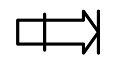
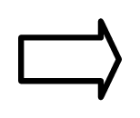

Программирование на БК-0010-01
БК-0010 - первый советский бытовой компьютер, который мне посчастливилось купить (по предварительной записи!) в 1986 году. Документация отсутствовала абсолютно :) Со временем мы с друзьями приложили свои скромные усилия по заполнению этого досадного пробела. Итак, читайте наш исторический труд:
Митрюхин В.К.
Донской А.Н.
Михайлов А.В.
Немов А.М.
ПРОГРАММИРОВАНИЕ
НА БК-0010-01
Чебоксары 1993
ББК 32.937-01
П 78
В этой книге описаны устройство, программное обеспечение микроЭВМ БК-0010-01. Описаны язык программирования Бейсик (версия ВИЛЬНЮС, 1986.07.24.), и основы программирования в машинных кодах. Приводится большое количество примеров.
Для пользователей микроЭВМ БК-0010-01.
© РИО Чебоксарской типографии № 1
ОГЛАВЛЕНИЕ
ГЛАВА 1. УСТРОЙСТВО И ОСНОВНЫЕ ХАРАКТЕРИСТИКИ МИКРОЭВМ БК-0010-01
1.2. Основные характеристики и организация БК
1.3. Устройство вывода - дисплей
1.4. Устройство ввода - клавиатура
1.5. Описание системных регистров
1.5.1. Регистр состояния клавиатуры
1.5.2. Регистр данных клавиатуры
Глава 2. ПРОГРАММНОЕ ОБЕСПЕЧЕНИЕ БК
Глава 3. ЯЗЫК ПРОГРАММИРОВАНИЯ БЕЙСИК
3.2. Программа на языке Бейсик
3.5.1. Операторы, задающие цвет
3.5.2.6. Относительность координат
3.5.3.7. Операторы DATA, READ, RESTORE
3.5.3.10. Операторы GOSUB и RETURN
3.6.2.1. Функции BIN¤, OCT¤, HEX¤
3.6.3. Функции, определяемые пользователем
3.7. Непосредственный доступ к памяти
3.8. Предложения и советы программисту
Глава 4. ПРОГРАММИРОВАНИЕ В МАШИННЫХ КОДАХ
4.1. Что понимается под программированием в кодах
4.2. Используемые в БК типы данных
4.3. Программная модель процессора БК
4.4. Система команд процессора БК
4.4.1. Способы адресации операнда
4.4.4. Команды передачи управления
4.4.4.2. Команды для работы с подпрограммами
4.4.4.3.1. Аппаратные прерывания
4.4.4.3.2. Программные прерывания
4.4.5.1. Команды управления машиной
Глава 5. ИНСТРУМЕНТАЛЬНЫЕ СРЕДСТВА ДЛЯ ПРОГРАММИРОВАНИЯ В МАШИННЫХ КОДАХ
5.3.2. Работа с системой МИКРО
5.3.2.1. Работа в редакторе текста
Глава 6. НЕСТАНДАРТНЫЕ ПРИЁМЫ ПРОГРАММИРОВАНИЯ
6.1. Использование подпрограмм в кодах при работе на Бейсике
6.2. Использование вещественной арифметики Бейсика при программировании в кодах
ПРЕДИСЛОВИЕ
Прошёл относительно небольшой исторический срок - чуть больше четырёх десятилетий - с того момента, как в лаборатории одного из американских университетов заработал первый в мире цифровой электронный компьютер. За эти годы в науке и технике произошёл настоящий переворот. Компьютер теперь можно увидеть не только в лаборатории научно-исследовательского института, но и на любом предприятии, в школе и даже дома.
Микрокомпьютеры являются, пожалуй, самым блестящим достижением последних пятнадцати лет развития микроэлектроники. Одна из машин, относящаяся к классу микроЭВМ, которая благодаря своим эксплуатационным и техническим характеристикам приобрела у нас в стране большую популярность - БК-0010-01. Этот компьютер не требует глубоких знаний и особых навыков в работе, а сравнительно невысокая цена делает его доступным для каждого. БК-0010-01 надёжен и прост в эксплуатации, для него создана большая библиотека системных и прикладных программ, начиная с трансляторов различных языков программирования и кончая игровыми программами.
Многие солидные люди смотрят на БК, как на игрушку. Отчасти это справедливо - количество игровых программ для него уже исчисляется тысячами. Тем не менее, это достаточно серьёзная ЭВМ, имеющая много преимуществ перед другими машинами такого класса. Например, цветная графика БК имеет лучшее разрешение, чем у некоторых популярных сейчас зарубежных компьютеров. БК находит всё большее применение не только в системе образования, но и на производстве, где может управлять технологическим оборудованием; в лабораториях, где может автоматизировать проведение экспериментов; в автошколах и учебных классах операторов ТЭЦ, где служит хорошим обучающим тренажёром.
Вот и Вы приобрели БК-0010-01. Когда Вам надоест играть в разнообразные игры, Вас заинтересует вопрос: "А как это всё происходит? Как мне сделать нечто подобное? Написать игровую программу или программу, которая поможет в работе и дома?"
Первая трудность, с которой Вы столкнётесь - отсутствие популярной легкодоступной литературы по БК-0010-01 и программированию в кодах. Авторы ставили перед собой задачу дать читателю пособие по программированию на БК-0010-01, которое пригодится как начинающему осваивать язык Бейсик, так и любителю или специалисту, желающему использовать все возможности микроЭВМ, программируя в машинных кодах.
Из первой главы этой книги Вы узнаете, как устроена Ваша микроЭВМ, из каких устройств она состоит и как они работают. Глава написана В. Митрюхиным и А. Донским.
Во второй главе кратко описано созданное для БК программное обеспечение. Глава написана А. Донским.
Третья глава научит Вас создавать эффективные программы на встроенном в БК-0010-01 языке Бейсик. Глава написана В. Митрюхиным и А. Немовым.
Следующие главы посвящены программированию в кодах и использованию для этой цели ряда системных программ - ассемблеров и отладчиков. В шестой главе описаны нестандартные приёмы программирования, с помощью которых можно писать эффективные программы на Бейсике и в кодах. Эти главы написаны А. Донским, В. Митрюхиным и А. Михайловым.
Эта книга не является учебником, и её не обязательно сразу читать "от корки до корки". Если Вы - начинающий программист, то к справочному материалу, содержащемуся в первых главах, Вы можете обращаться по мере необходимости при рассмотрении примеров программ.
Авторы выражают свою благодарность чебоксарскому Дворцу пионеров и малому предприятию "Таймен", предоставившим компьютеры для подготовки этой книги к печати и отладки примеров, и Союзу НИО Чувашской АССР, взявшемуся за её публикацию.
А. Донской сердечно благодарен А. Цаплеву (г. Ленинград) за присланное "Руководство системного программиста" и всем любителям БК в СССР, которые поддерживали с ним переписку и предоставили множество системных и игровых программ.
Авторы не могут также обойти вниманием создателей системных программ для БК С. Зильберштейна, А. Сомова, С. Шмытова, С. Кумандина и других, без огромного труда которых эта микроЭВМ представляла бы собой никому не нужную железку и данная книга не имела бы большого смысла.
Предложения и замечания авторы просят присылать по адресу: 428000, г.Чебоксары, а/я 121, Донскому А.Н.
ГЛАВА 1. УСТРОЙСТВО И ОСНОВНЫЕ ХАРАКТЕРИСТИКИ МИКРОЭВМ БК-0010-01
1.1. Устройство БК-0010-01
БК-0010-01 (далее просто БК) - это микроЭВМ, предназначенная для индивидуального пользования. БК свободно располагается на столе и состоит всего из двух частей - системного блока, совмещённого с клавиатурой, и блока питания. В качестве дисплея может использоваться бытовой телевизор или специальный монитор, а для сохранения программ к БК подключается любой бытовой магнитофон (желательно кассетный). Дисплей и магнитофон - это внешние устройства микроЭВМ. Внутренние устройства показаны на рис. 1.
Рис. 1. Устройство микроЭВМ БК-0010-01
Процессор - это мозг ЭВМ. Он предназначен для обработки данных и для управления всеми остальными устройствами.
В памяти машины хранятся данные, результаты их обработки и программа, по которой эта обработка производится.
Устройства ввода позволяют вводить в память компьютера данные и программу их обработки. В БК есть устройства ввода с клавиатуры, магнитофона и дополнительных устройств (например, джойстика или "мыши").
Устройства вывода предназначены для сохранения программ и данных во внешней памяти (магнитофон) и для выдачи результатов обработки данных в форме, удобной для человека. В БК есть устройство вывода на цветной графический дисплей, на магнитофон, на генератор звука и на порт ввода/вывода, к которому могут подключаться дополнительные устройства, например, принтер, бытовые приборы или технологическое оборудование.
Аппаратная часть БК построена по схеме "Q-Bus" ("усечённая общая шина"). Это означает, что все устройства ЭВМ, включая процессор, память, клавиатуру, соединены друг с другом одними и теми же электрическими проводниками (общей шиной), по которым передаются сигналы управления и данные. 16 из этих проводников (линий) служат для передачи адреса и данных в размере одного машинного слова.
1.2. Основные характеристики и организация БК
Основными характеристиками любой ЭВМ являются разрядность, объём и организация памяти, быстродействие и система команд процессора.
Разрядность БК - 16 бит. Бит (от английского выражения "binary digit" - "двоичная цифра") является минимальной единицей информации. В одном бите содержится столько же информации, сколько в ответе на вопрос "да или нет?". Один бит информации передаётся по одной линии общей шины в виде одного из двух уровней напряжения. Соответственно, вводятся понятия "логический 0" и "логическая 1". Почему 0 и 1?
Вы наверняка слышали, что "ЭВМ работает в двоичной системе счисления". Давайте вспомним о системах счисления.
В повседневной жизни мы пользуемся десятичной системой счисления - для записи чисел достаточно 10 цифр: 0, 1, 2, 3, 4, 5, 6, 7, 8, 9. Наряду с десятичной в программировании широко применяются двоичная, восьмеричная и шестнадцатеричная системы счисления.
Основание десятичной системы счисления равно 10. Для примера возьмём число 847 (в десятичной системе счисления). Это число из трех цифр можно представить в виде суммы трех произведений:
8*102 + 4*101 + 7*100 = 800 + 40 + 7 = 847
Каждое произведение получается умножением соответствующей цифры в записи числа на основание системы счисления (в данном случае число 10) в степени, равной номеру позиции цифры. Например, цифра "7" стоит на нулевой позиции числа 847, тогда ей (цифре "7") соответствует произведение числа 7 на 10 в степени 0. Напомним, что любое число в степени 0 равно 1. Цифре "4" соответствует произведение числа 4 на 10 (10 в степени 1), а цифре 8 - произведение числа 8 на 100 (10 в степени 2). Это правило применяется при переводе чисел из какой-либо системы счисления в понятную нам десятичную систему. Позиции цифр (номера разрядов) в записи числа нумеруются от 0 и далее справа налево.
Для записи чисел в двоичной системе счисления используются 2 цифры: 0 и 1. Попробуем перевести двоичное число 1001 в десятичное, учитывая, что основание системы счисления равно 2. По аналогии с предыдущим примером десятичное значение двоичного числа 1001 определяется сложением произведений:
1*23 + 0*22 + 0*21 + 1*20 = 1*8 + 0*4 + 0*2 + 1*1 = 9
Аналогично переводятся числа из восьмеричной системы счисления в десятичную. Например, восьмеричное число 377 в десятичной системе будет равно сумме:
3*82 + 7*81 + 7*80 = 3*64 + 7*8 + 7*1 = 255
Для представления чисел в шестнадцатеричной системе счисления используются 16 цифр: 0, 1, 2, 3, 4, 5, 6, 7, 8, 9, А, В, С, D, E, F. Буквы A, B, C, D, E, F в данном случае надо рассматривать как цифры, равные соответственно 10, 11, 12, 13, 14, 15.
Если записывать число в двоичной системе счисления, один бит будет соответствовать одному двоичному разряду числа. Действительно, двоичная система наиболее удобна для вычислительной техники, так как проще сделать устройства для распознавания всего двух логических уровней - 0 и 1. Поскольку бит является слишком мелкой единицей, в вычислительной технике используют понятия: 1 байт = 8 бит, 1 К = 1024 байт (килобайт).
Итак, разрядность БК - 16 бит. По 16 проводникам общей шины одновременно могут передаваться 16 бит информации, составляющие в совокупности машинное слово. Следовательно, В БК размер машинного слова равен 16 битам (или 2 байтам). Данные, которые помещаются в машинное слово, процессор обрабатывает целиком, в один приём. Разрядность ЭВМ влияет на её быстродействие. Например, если целое число занимает 2 байта, то для выполнения операции сложения таких чисел на 8-разрядных ЭВМ (например, "Микроша", "Криста") требуется несколько машинных команд, а на 16-разрядном БК - только одна, что, конечно, быстрее.
На рис. 2 показан стандартный способ записи разрядов машинного слова. Разряды нумеруются справа налево от 0 до 15. При этом разряд с номером 0 (нулевой разряд) называется младшим, а разряд с номером 15 - старшим. Такой способ записи слова совпадает с записью числа в двоичной системе счисления. Обычно целое число занимает во внутреннем представлении в ЭВМ одно слово. При этом старший разряд слова считается знаковым. Он равен "1" для отрицательных чисел и "0" - для положительных.
|
15 |
8 |
7 |
0 |
||||||||||||
|
0 |
1 |
0 |
1 |
0 |
0 |
1 |
0 |
0 |
1 |
1 |
1 |
0 |
1 |
0 |
0 |
|
└───── старший байт ───────┘ |
└────── младший байт ──────┘ |
||||||||||||||
Рис. 2. Машинное слово
Быстродействие ЭВМ зависит от тактовой частоты процессора и некоторых других тонкостей его организации. Для самых простых операций (типа регистр-регистр) быстродействие БК составляет около 400 тысяч операций в секунду. Если же оценивать быстродействие по времени работы сложных программ с арифметическими расчётами, то разрядность ЭВМ также влияет на быстродействие, о чем мы уже говорили.
Память БК состоит из 2-х частей: оперативного запоминающего устройства (ОЗУ) и постоянного запоминающего устройства (ПЗУ).
В ОЗУ хранятся программа и данные, которые она обрабатывает. ОЗУ БК собрано из 16-и больших интегральных схем (БИС) КР565РУ6, общий объём ОЗУ составляет 32К. При выключении компьютера содержимое ОЗУ стирается.
Программа, записанная в ПЗУ, при выключении питания не стирается (в отличие от содержимого ОЗУ). Но в ПЗУ нельзя записать информацию, её можно оттуда только прочитать.
ПЗУ собрано из 4-х БИС КР1801РЕ2. В первой БИС записана (как говорят, зашита) программа МОНИТОР - операционная система БК. МОНИТОР включает в себя драйверы внешних устройств, программу настройки компьютера при включении питания, а также обеспечивает операции по загрузке и запуску программ. Драйверы управляют работой внешних устройств. Например, драйвер магнитофона обеспечивает обмен информацией с магнитофоном. В трёх остальных БИС ПЗУ зашит транслятор с языка Бейсик, обеспечивающий перевод текста программы на языке Бейсик в последовательность команд, "понятную" для процессора. Если подключить к БК блок МСТД, то в адресное пространство БК вместо трёх БИС с Бейсиком будут включены две БИС: с интерпретатором языка Фокал и с тестовой системой диагностики, проверяющей исправность БК (при этом ещё останется пустое место, куда можно подключить одну БИС объёмом 8К).
Объем ОЗУ БК составляет, как уже говорилось, 32К, из которых 16К отводится для программы и 16К - для изображения на экране.
Организацию памяти можно образно представить как ряд пронумерованных по порядку ячеек, в каждой из которых помещается один байт информации (рис. 3).
|
адреса байтов (восьмеричные) |
0 |
1 |
2 |
3 |
4 |
5 |
6 |
7 |
10 ... |
|
адреса слов (восьмеричные) |
0 |
2 |
4 |
6 |
10 ... |
||||
|
номера разрядов (бит) в слове (десятичные) |
0...15Д |
0...15Д |
0...15Д |
0...15Д |
0...15Д ... |
||||
Рис. 3. Адресация памяти
Нумерация начинается с нуля, а максимальный возможный номер (адрес) определяется разрядностью ЭВМ и в данном случае равен
216 - 1 = 177777 = 65535Д. (Далее по тексту значения адресов и кодов машинных команд будут записываться в восьмеричной системе счисления, так как от неё проще перейти к двоичной. В тех случаях, когда система счисления не очевидна, десятичные числа будут записываться с буквой "Д" в конце числа). Процессор может брать из памяти и записывать в память один байт (указав предварительно его адрес) либо одно слово (в этом случае указанный адрес должен быть чётным). Машинные команды размещаются в этой же памяти по словам, поэтому адрес очередной машинной команды программы всегда должен быть чётным.
Адреса ячеек ОЗУ БК меняются от 0 до 77777, а адреса ячеек ПЗУ – от 100000 до 177577. На рисунке 4 показано распределение памяти (адресного пространства) БК-0010-01.
|
Адреса |
Содержимое и объём памяти |
|---|---|
|
0 |
Системные переменные, стек |
|
1000 |
Программа пользователя |
|
40000 |
ОЗУ экрана |
|
100000 |
Системное ПЗУ: МОНИТОР, драйверы |
|
120000 |
ПЗУ с транслятором Бейсика |
|
177600 |
Область системных регистров |
Рис. 4. Распределение адресного пространства БК-0010-01
Наконец, последняя важнейшая характеристика ЭВМ - система команд. Для каждого типа ЭВМ характерен свой набор машинных команд, которые она может выполнять, и, следовательно, свой ассемблер. В качестве процессора в БК используется однокристальный микропроцессор К1801ВМ1. Система команд этого процессора "DEC-овская", то есть аналогичная ЭВМ PDP-11 фирмы DEC (Digital Equipment Corporation) - одной из ведущих зарубежных фирм по производству вычислительной техники. В СССР такую же систему команд имеют ЭВМ типа СМ, Электроника-60, ДВК и т.п. Вот почему, кстати, ЭВМ типа ДВК удобно использовать как инструментальную машину для БК при разработке сложных и больших программ.
1.3. Устройство вывода - дисплей
Основным устройством вывода для БК является экран телевизора. На экране можно разместить 24 строки текста (символьных строки), не считая самой верхней, служебной, строки, предназначенной для отображения информации о текущих режимах работы клавиатуры и экрана. Каждая строка состоит из 32-х символьных позиций - то есть в каждой строке можно разместить до 32-х символов (букв, цифр или других знаков), если включён режим экрана "32 символа в строке". Такая же строка вмещает 64 символа, если включён режим экрана "64 символа в строке". Переключение экрана из одного режима в другой осуществляется одновременным нажатием клавиш "АР2" и ";". Режим "64 символа в строке" рекомендуется использовать только при работе с черно-белым видеомонитором (телевизором).
На рис. 5 показано изменение номеров строк по вертикали вниз (обозначено осью Y) и изменение номеров позиций по горизонтали вправо (обозначено осью Х). Например, буква "М" на экране находится на 1-ой позиции 2-ой строки. Заметим, что места, на которых могут быть расположены символы (позиции в символьных строках), называют знакоместами. Их расположение строго фиксировано, поэтому все буквы имеют одинаковую ширину и высоту; постоянно также и расстояние между строками. Тем не менее, если Вы будете программировать на БК в кодах, это ограничение можно обойти. В игровых программах часто встречаются "пляшущие" в вертикальном направлении буквы различной высоты, ширины и цвета.
На дисплее также обычно отображается курсор. Это закрашенный прямоугольник, стоящий на том знакоместе, где будет выведен очередной символ.
|
0 |
1 |
2 |
3 |
4 |
5 |
6 |
7 |
Х (номера символьных позиций – числа из интервала от 0 до 31) |
|||
|
0 |
|
|
|
|
|
|
|
|
|
|
|
|
1 |
|||||||||||
|
2 |
М |
А |
Р |
Т |
▓ |
||||||
|
3 |
|||||||||||
|
4 |
|||||||||||
|
Y (номера символьных строк – числа |
|||||||||||
Рис. 5. Символьные координаты экрана (режим "32 символа в строке")
Каждая символьная строка, в свою очередь, состоит из 10 горизонтальных линий экрана - назовём их точечными строками. Их всего 240 (по 10 точечных строк на 24 символьные строки). Каждая точечная строка состоит из точек - это элементарная единица графической информации. Количество графических точек в строке равно 256 (для режима "32 символа в строке") или 512 (для режима "64 символа в строке").
Любой символ на экране - это рисунок, полученный из отдельных точек. На рис. 6 показано, как буква "М" сформирована из точек на нулевой символьной позиции нулевой символьной строки. В системном ПЗУ хранится специальная программа (знакогенератор), которая при выводе на дисплей какого-либо символа формирует на экране соответствующую картинку из точек. В МОНИТОРе есть также подпрограммы для вывода отдельных точек и прямых линий по координатам.
Далее, говоря о координатах (строках и позициях), не будем указывать, символьные они или графические (точечные), так как понятно, что они - символьные, если речь идёт о символах, и графические, если речь идёт о точках.
|
0 |
1 |
2 |
3 |
4 |
5 |
6 |
7 |
8 |
Х (номера точечных позиций – числа из интервала от 0 до 255) |
|||
|
0 |
|
|
|
|
||||||||
|
1 |
■ |
■ |
||||||||||
|
2 |
■ |
■ |
■ |
■ |
||||||||
|
3 |
■ |
■ |
■ |
|||||||||
|
4 |
■ |
■ |
■ |
|||||||||
|
5 |
■ |
■ |
||||||||||
|
6 |
■ |
■ |
||||||||||
|
7 |
■ |
■ |
||||||||||
|
8 |
||||||||||||
|
9 |
||||||||||||
|
Y (номера точечных строк – числа |
||||||||||||
Рис. 6. Графические координаты экрана (режим "32 символа в строке")
Запомните, что в режиме "64 символа в строке" одной графической точке соответствует один бит экранного ОЗУ. Поскольку бит может принимать лишь два состояния - 0 или 1, то графическая точка может быть либо включена, либо выключена. Информацию о цвете точки хранить негде, поэтому режим "64 символа в строке" используется только для вывода черно-белых изображений и текстов.
В режиме "32 символа в строке" одной графической точке соответствуют два бита ОЗУ. Количество точек в строке уменьшается, зато появляется возможность кодировать 4 цвета - красный, зелёный, синий, чёрный. Для подключения бытового цветного телевизора в качестве цветного дисплея необходимо, как правило, специальное согласующее устройство [10].
В обоих режимах начало экранного ОЗУ (адрес 40000) соответствует левому верхнему углу экрана. При увеличении адреса мы движемся вправо по точечной строке (её длина - 64 байт), пока не перейдём в начало следующей, и т.д. Правый нижний угол экрана соответствует адресу 77777. Служебная строка занимает 2000 (восьмеричное) байт, поэтому графической точке с координатами X=0, Y=0 соответствуют два младших бита по адресу 42000.
Всё сказанное справедливо в обычной конфигурации памяти, однако в БК есть ещё режим расширенной памяти (РП). В этом режиме экранное ОЗУ начинается с адреса 70000, и в нём помещаются только 4 символьных строки. Зато намного больше памяти остаётся для программы и её данных. В режиме РП работают многие системные программы (например, копировщики).
1.4. Устройство ввода - клавиатура
|
ПОВТ |
КТ |
 |
|
|
ИНД |
БЛОК |
ШАГ |
СБР |
СТОП |
|
|
; |
1 |
2 |
3 |
4 |
5 |
6 |
7 |
8 |
9 |
0 |
- |
/ |
|
|
TAB |
Й |
Ц |
У |
К |
Е |
Н |
Г |
Ш |
Щ |
З |
Х |
: |
Ъ |
ВС |
|
СУ |
Ф |
Ы |
В |
А |
П |
Р |
О |
Л |
Д |
Ж |
Э |
. |
|
|
|
|
 |
||||||||||||
|
|
Рис. 7. Клавиатура ЭВМ БК-0010-01
Клавиатура БК аналогична клавиатуре пишущей машинки. Но если пишущая машинка имеет только два регистра - строчные и заглавные буквы, то в БК 6 регистров - каждая буквенная клавиша в зависимости от включённого режима может выдавать 6 различных кодов. Рассмотрим назначение специальных и переключающих клавиш БК, которое они несут при работе Бейсик-системы.
|
СБР |
- "сброс". Очищает экран дисплея. |
|
|
- далее эту клавишу будем называть клавишей "ВК" ("Возврат Каретки"). Ввод с клавиатуры обычно завершается нажатием этой клавиши, поэтому её также называют "ВВОД". |
|
ВС |
- "Возврат Строки". Она возвращает последнюю введённую строку, которую тут же можно отредактировать с помощью стрелок и снова ввести клавишей "ВК". |
|
РУС, ЛАТ |
- эти клавиши включают соответственно русский или латинский шрифт. Одновременно в правой части служебной строки высвечивается надпись "РУС" или "ЛАТ". |
|
ЗАГЛ, СТР |
- включают соответственно заглавный или строчный шрифт. |
|
|
- "нижний регистр". Одновременное нажатие этой и любой клавиши спецзнаков позволяет ввести спецзнаки (например, для вывода символа "&" надо нажать клавишу нижнего регистра, и, удерживая её нажатой, нажать клавишу "6"). На клавиатуре БК-0010 соответствующая переключающая клавиша называется "ПР" ("правый регистр"). |
|
СУ |
- "Символ Управляющий". Одновременное нажатие этой и любой буквенной клавиши превращает последнюю в управляющую клавишу (их коды на 100 меньше, чем коды латинских букв). |
|
АР2 |
- "Второй символ управляющий". Одновременное нажатие этой и буквенной клавиши даёт код управления экраном или символ псевдографики (их коды на 100 больше, чем коды латинских букв). В БК-0010 ту же функцию выполняет клавиша "НР" ("нижний регистр"). Коды всех символов и соответствующих клавиш приведены в Приложении 1. |
|
|
- "забой". "Забивает" (стирает) символ, стоящий слева от курсора. |
|
|
- удаляет часть строки, расположенную справа от курсора. |
|
|
- "сдвижка в строке". Сдвигает часть строки, расположенную справа от курсора, на одну символьную позицию влево. |
|
|
- "раздвижка в строке". Раздвигает часть строки, расположенную справа от курсора, на одну символьную позицию вправо |
|
|
Четыре клавиши со стрелками в правой нижней части клавиатуры предназначены для управления перемещением курсора. |
|
ПОВТ |
- многократный повтор ввода последней нажатой клавиши. |
|
ИНД СУ |
- включает режим вывода управляющих символов на экран в виде инверсных соответствующих букв. |
|
БЛОК РЕД |
- запрещает отработку клавиш управления курсором. |
|
ШАГ |
- пошаговое выполнение Бейсик-программы. |
Ниже приводятся некоторые полезные управляющие комбинации клавиш. Далее для обозначения одновременного нажатия 2-х или 3-х клавиш будем использовать наклонную черту "/".
|
СУ/@ |
- приостанавливает вывод на дисплей, чтобы Вы могли прочитать быстро уходящую с экрана информацию; |
|
АР2/СБР |
- переключение в режим расширенной памяти (РП) и обратно; |
|
АР2/: |
- включить/выключить курсор; |
|
АР2/; |
- переключить режим 32/64 символа в строке; |
|
АР2/ |
- включить красный цвет; |
|
АР2/ |
- включить зелёный цвет; |
|
АР2/ |
- включить синий цвет; |
|
АР2/ |
- включить чёрный цвет. |
Дополнительные возможности при работе с клавиатурой в Бейсике описаны в п.3.5.3.12, а также в "Руководстве оператора" [2].
1.5. Описание системных регистров
Системные регистры БК используются для работы с внешними устройствами. Каждый из этих 16-разрядных регистров имеет свой адрес в адресном пространстве, расположенном с адреса 177600 по адрес 177777. Регистры внешних устройств используются обычно опытными программистами, работающими в кодах. Начинающие могут пока пропустить данный пункт и вернуться к нему при необходимости. Различные способы работы с системными регистрами показаны в примерах на Бейсике и ассемблере в следующих главах.
1.5.1. Регистр состояния клавиатуры
Регистр состояния клавиатуры имеет адрес 177660.
В нём используются только два бита.
Разряд 6 - это бит разрешения прерывания. Если в нём содержится логический ноль "0", то прерывание от клавиатуры разрешено; если нужно запретить прерывание от клавиатуры, то в 6 разряд надо записать "1".
Разряд 7 - это флаг готовности устройства. Он устанавливается в "1" при поступлении в регистр данных клавиатуры нового кода. Разряд доступен только по чтению.
Если прерывание от клавиатуры разрешено (в разряд 6 записан "0"), то при установке разряда 7 в "1" (при поступлении в регистр данных клавиатуры нового кода) производится прерывание от клавиатуры - читается код нажатой клавиши из регистра данных клавиатуры, выдаётся звуковой сигнал и производятся действия, соответствующие нажатой клавише. При чтении регистра данных разряд 7 регистра состояния сбрасывается в "0".
1.5.2. Регистр данных клавиатуры
Регистр данных клавиатуры имеет адрес 177662.
При нажатии на определённую клавишу в разрядах 0-6 этого регистра формируется соответствующий нажатой клавише семиразрядный код. Запись нового кода в регистр не производится до тех пор, пока не будет прочитан предыдущий код.
Разряды 7-15 не используются.
Регистр доступен только по чтению.
1.5.3. Регистр смещения
Регистр смещения 177664 предназначен для указания начала экранного ОЗУ и организации рулонного сдвига экрана.
При начальной установке экрана в регистре записывается значение 1330. Изменение этого значения на 1 приводит к сдвигу изображения на экране по вертикали на 1 точечную строку.
Сразу же после включения питания разряд 9 устанавливается в "1". При включении режима расширенной памяти разряд сбрасывается в "0".
Разряды 8, 10-15 не используются.
Регистр доступен по записи и чтению.
1.5.4. Регистр порта ввода-вывода
Адрес регистра - 177714.
Регистр предназначен для работы с внешними устройствами, подключаемыми к разъёму "УП" ("устройство периферийное"). Такими устройствами могут быть джойстик, программатор ПЗУ и многое другое.
При записи по этому адресу данные поступают в порт вывода, а при чтении из этого регистра данные читаются из порта ввода. Для реализации аппаратной части каждого порта используются по две микросхемы К589ИР12.
В таблице 1 приводится соответствие разрядов портов ввода и вывода контактам разъёма "УП".
|
порт ввода |
порт вывода |
||
|---|---|---|---|
|
разряды порта |
контакты разъёма "УП" |
разряды порта |
контакты разъёма "УП" |
|
0 |
В24 |
0 |
А16 |
|
1 |
А24 |
1 |
А13 |
|
2 |
В23 |
2 |
В12 |
|
3 |
В17 |
3 |
В10 |
|
4 |
В20 |
4 |
В5 |
|
5 |
А20 |
5 |
В7 |
|
6 |
В22 |
6 |
В6 |
|
7 |
А23 |
7 |
А7 |
|
8 |
В31 |
8 |
А28 |
|
9 |
А31 |
9 |
В28 |
|
10 |
В32 |
10 |
А27 |
|
11 |
А32 |
11 |
В27 |
|
12 |
В30 |
12 |
А26 |
|
13 |
А29 |
13 |
В26 |
|
14 |
В29 |
14 |
А25 |
|
15 |
А30 |
15 |
В25 |
ВНИМАНИЕ! Нагрузочная способность порта вывода ограничена нагрузочной способностью выходов микросхемы К589ИР12.
Кроме 16 разрядов портов ввода/вывода на разъем "УП" выведены:
-
выходной сигнал "СБРОС" для начальной установки внешнего устройства (устройства пользователя) командой RESET (контакт А1 разъёма "УП"); нагрузочная способность вывода ограничена - сигнал поступает непосредственно от вывода "INIT" процессора;
-
входной сигнал "IRQ2" - сигнал требования прерывания от внешнего устройства (контакт В1); вектор прерывания расположен по адресу 100;
-
общий вывод (контакты А11, В11, А18, В18, А19, В19);
-
+5 Вольт (контакты А8, В8, А9, В9); во избежание перегрузки блока питания БК питать устройства пользователя от этих контактов не рекомендуется.
Устройства, подключаемые к контактам разъёма "УП", должны иметь следующие уровни сигналов:
0 B < U1 < 0.5 B 2.4 B < U0 < 5.25 B,
|
где |
U1 - напряжение, соответствующее логической "1", U0 - напряжение, соответствующее логическому "0". |
Сигналы инверсные - логической "1" соответствует низкий уровень напряжения, а логическому "0" - высокий.
Подача на контакты других напряжений может вывести компьютер из строя.
1.5.5. Регистр управления системными внешними устройствами
Адрес регистра - 177716.
Старший байт регистра (разряды 8-15) используются для задания адреса, с которого запускается процессор при включении питания (при этом младший байт регистра принимается равным 0). Адрес начального пуска процессора равен 100000.
Разряды 0-3 служат для задания режимов работы процессора.
Разряды 0-3, 8-15 доступны только по чтению.
Разряды 4-7 доступны по чтению и по записи. При чтении из этих разрядов данные читаются из входного системного порта, а при записи в эти разряды данные поступают в выходной системный порт.
Назначение разрядов выходного системного порта:
|
Разряд 4 |
используется для передачи данных на линию. |
|
Разряд 5 |
используется для передачи данных на магнитофон, либо сигнала готовности на линию. |
|
Разряд 6 |
используется для передачи данных на магнитофон и для генерации звукового сигнала. |
|
Разряд 7 |
используется для управления двигателем магнитофона ("1" - "стоп", "0" - "пуск"). |
Назначение разрядов входного системного порта:
|
Разряд 4 |
используется для чтения данных с линии. |
|
Разряд 5 |
используется для чтения данных с магнитофона. |
|
Разряд 6 |
сброшен в "0", если хотя бы одна клавиша нажата и установлен в "1", если все клавиши отжаты. |
|
Разряд 7 |
используется для чтения сигнала готовности с линии. |
Глава 2. ПРОГРАММНОЕ ОБЕСПЕЧЕНИЕ БК
2.1. Краткий обзор программного обеспечения БК
Как уже говорилось, в БК имеется 32К ПЗУ, в котором хранится системное программное обеспечение (ПО). Оно является встроенным в микроЭВМ и не может быть простыми средствами изменено.
В БК-0010-01 встроен управляющий МОНИТОР (операционная система) и транслятор с языка Бейсик. Прикладываемый в комплекте блок МСТД позволяет заменить Бейсик сразу на две системные программы: интерпретатор языка Фокал и тестовую систему, включающую в себя тесты для проверки работоспособности БК и пультовый отладчик.
Заводы-изготовители БК давно намеревались изготавливать также аналогичные МСТД блоки с трансляторами языков PASCAL, C, FORTH, с ассемблерами и отладчиками, но до сих пор эти благие пожелания не реализованы. Показательно, что практически никакой информации по БК и различным внешним устройствам найти обычно не удаётся и часто приходится ориентироваться на слухи. Например, авторам известно, что в Казани продаются подключаемые к БК блоки ПЗУ с комплектами популярных игровых программ.
Огромное количество программ может быть загружено в БК с магнитофона. Их можно разделить на три большие группы: системные, прикладные и игровые.
К системным программам относятся:
-
Трансляторы с языков программирования, таких, как FORTH, T-язык, Бейсик (кстати, последняя Вильнюсская разработка Бейсика значительно превосходит встроенный Бейсик БК - например, допускается много строк продолжения, и работает он на порядок быстрее из-за того, что в нём реализована вещественная арифметика одинарной точности).
-
Расширители возможностей встроенных трансляторов. Для Бейсика создан С. Зильберштейном SBASIC (структурный Бейсик), позволяющий писать много операторов в строку, использовать при программировании различные структурные конструкции и процедуры, исполнять музыку и многое другое [14]. Для Фокала таких расширителей множество:
-
семейство однотипных примитивных ФОКОДов, каждый из которых был написан своим автором для решения конкретных задач (например, FOCOD/Alek А. Донского позволял вызывать подпрограммы в кодах для рисования дуг, спиралей и генерации простейших звуков). Сегодня все подобные системы можно считать устаревшими;
-
ИВФ (Интерфейс Внешних Функций) П.Полянского позволяет включать подпрограммы в кодах и обращаться к ним, как к функциям Фокала. Наибольшее распространение из программ ИВФ имеет ИВФ МАССИВЫ, содержащая удобные средства работы с целыми, вещественными и текстовыми массивами, что невозможно или крайне неэффективно в "чистом" Фокале;
-
XFOCAL С. Зильберштейна - удобный универсальный расширитель, имеющий экранный редактор Фокал-программы, операторы программирования музыки, графики, спрайтов;
-
ФОНД (ФОртран На Дому) Г. Приса даёт возможность повышения точности вещественной арифметики, операций с массивами и многое другое. Популярная версия МИФ (Мини-ФОНД) позволяет программисту собрать МИФ только из нужных в данной программе функций; он удобен в обращении и позволяет подключать новые функции. В МИФе уже реализованы подпрограммы исполнения музыки, вывода спрайтов и символов произвольного размера, сборка Фокал-программ из отдельных частей, экранный и графический редакторы и многое другое.
-
-
Сервисные системные программы:
-
копировщики программ (например, COPY6, UNIC, КУВТ-Копир/Alek, КОПИРАК, HELP и др.). Современные копировщики выполняют такие функции, как загрузка первого попавшегося файла, контроль процесса загрузки в экранном ОЗУ, несколько скоростей копирования, установка самозапуска для программ в кодах (а КОПИРАК Радченко приделывает блок самозапуска к программам на Фокале). КУВТ-Копир/Alek А. Донского предназначен для работы на БК в составе КУВТ с центральной ЭВМ типа ДВК и позволяет загружать программы с магнитофона и с дисковода ДВК, копировать и запускать на выполнение. Кроме того, он позволяет автоматически копировать целые наборы файлов с дисковода на магнитофон;
-
каталогизаторы (TSTF5M, KATALM и др.), составляющие каталог магнитных кассет и заодно проверяющие качество записи программ;
-
экранные редакторы текстов (EDASP, ГРАТРС, РЕДТ и др.), предназначенные для создания и редактирования текстовых файлов. Некоторые из них позволяют использовать изменяемые символы псевдографики. Наиболее мощным и удобным редактором следует признать EDASP (ASP corp.). Поскольку EDASP-овские тексты используются многими прикладными системами (BASE и др.), EDASP сегодня можно считать стандартным текстовым редактором для БК. Есть также его версия для работы с КУВТ;
-
графические редакторы ГРЕД, ГРАФРЕД, PAINT и ряд других предназначены для редактирования спрайтов, и, соответственно, используются преимущественно программирующими в кодах. Некоторые редакторы используют подключаемую к БК "мышь" или джойстик. На уроках информатики в школах может быть применён редактор PAINT, демонстрирующий великолепный графический интерфейс в стиле IBM PC и работающий с КУВТом, а также редакторы REDA (А. Донского) и GRAF1M, оперирующие понятиями "графический примитив", "объект", "каталог объектов", "протокол рисования объекта", "иерархия объектов в рисунке". REDA удобен для рисования сложных картин для использования в прикладных программах и позволяет сохранять на дисках КУВТа протоколы рисования, а также генерировать текст на ассемблере MACRO-11, что удобно для программистов, использующих ДВК в качестве инструментальной машины;
-
драйверы печатающих устройств и прочие сервисные программы.
-
-
Программы для работы в кодах (подробнее см. гл. 4 и 5):
-
отладчики (ГРОТ, ПРОТ, MIRAGE), позволяющие дизассемблировать отлаживаемую программу, редактировать её (вводить новые команды в мнемонике ассемблера), производить пошаговую отладку программы с распечаткой текущих значений регистров, устанавливать контрольные точки и т.п.;
-
транслятор МИКРО (МИКРО9, МИКРО10 и т.д.) А. Сомова, С. Шмытова и С. Кумандина, включающий редактор текста программы на ассемблере, транслятор, создающий объектные модули, и компоновщик, собирающий загрузочный модуль из нескольких объектных;
-
дизассемблеры (стоит отметить лишь ДИЗАКС С.Кумандина, который выдаёт дизассемблированный текст в формате системы МИКРО);
-
ряд вспомогательных программ, используемых отдельными любителями;
-
системы и программы для программистов, работающих на КУВТ, например, эмулятор EMT RT-11 для исполняющей системы PASCAL.
-
К прикладным программам относятся все программы, предназначенные для решения какой-либо определённой задачи из области быта, образования, науки и техники. Здесь и программы раскроя брюк, и тренажёр по Правилам дорожного движения, и психологические тесты, и программа управления ёлочной гирляндой, и цветомузыка, и даже телефонный автоответчик.
Особо следует выделить универсальные прикладные программы:
-
BASE (ASP corp.) - программа ведения базы данных. Это может быть телефонный справочник, словарь, каталог библиотеки и т.п. Программа позволяет добавлять и корректировать записи в базе данных и осуществлять поиск по различным признакам, ключевым словам;
-
CALC (А. Бакерин) - электронная таблица, позволяющая в удобной и наглядной форме производить расчёты различной сложности, от начисления зарплаты по коэффициенту трудового участия до расчёта лабораторных работ по физике в университете.
Упомянем также музыкальные редакторы (например, МЕЛОМАН, КЛАВЕСИН), позволяющие набрать и отредактировать музыкальное произведение, а потом встроить его в свою программу (для тех, кто программирует в кодах, конечно).
Игровые программы - самый популярный класс на БК. Одно их перечисление займёт чуть ли не полкниги. Особенно ценятся игровые программы в кодах, потому что на Бейсике или Фокале, даже с использованием перечисленных расширений, невозможно сделать то, что удаётся выжать из машины талантливым авторам этих программ – ASP corp., В. Савину, А. Маркову и многим другим. Конечно, БК уступает всем зарубежным компьютерам по объёму памяти, поэтому и игровые программы здесь примитивнее и менее ярки, но это не повод отказываться от БК!
Ряд фирм, занимающихся продажей программ для БК, например, НПК "СБИС" (167024, г. Сыктывкар, а/я 429), периодически печатают каталоги программ для БК, а также "Бюллетень БК", в котором делается обзор новых аппаратных и программных средств и приводится много полезных советов как для начинающих, так и для опытных программистов. Ещё одним надёжным источником информации может служить журнал "Информатика и образование", а также брошюры серии "Вычислительная техника и её применение" общества "Знание".
Упомянутые выше программы можно приобрести в НПК "СБИС", в других аналогичных предприятиях, а также в фирменных магазинах-салонах "Электроника". Следите за рекламой в журнале "Информатика и образование"!
В следующих пунктах будет кратко описано встроенное программное обеспечение БК.
2.2. Бейсик
Бейсик считается языком высокого уровня, лёгким в освоении, и предназначается для начинающих программистов-непрофессионалов. Но, по мнению классиков, создание Бейсика - это яркий пример профанации программирования. Бейсик имеет ряд недостатков, главный из которых - невозможность структурирования программы, что навязывает программисту "плохой стиль" работы. Человеку, начинающему осваивать вычислительную технику с Бейсика, будет труднее воспринять современные технологии программирования. Те, кто стоит "за" Бейсик, приводят такой неотразимый аргумент, что "Бейсик есть на всех марках ЭВМ, следовательно, это основа компьютерной грамотности". На это им можно ответить: "И на всех ЭВМ он разный, похожий на своих собратьев лишь основными чертами". Мнения авторов на этот счёт также разделились, но, видимо, жизнь диктует свои условия. На IBM PC с Турбо-Прологом и Турбо-Паскалем у наших читателей вряд ли хватит долларов, а тем более рублей, а БК с Бейсиком уже стоит на Вашем столе.
Итак, встроенный Бейсик БК совместим со стандартом MSX [13], но имеет по сравнению с ним ряд ограничений: например, в нём можно записывать только один оператор в строке программы. Нет также операторов типа "PLAY" для программирования музыки и многих других. Многие из этих недостатков преодолеваются с использованием расширителя SBASIC (см. выше). Однако сам SBASIC занимает немало места в и без того ограниченном ОЗУ.
Встроенная в БК Бейсик-система запускается автоматически при включении питания. Бейсик-система хранит в ОЗУ текст Вашей программы на языке Бейсик и позволяет записать его на магнитофон и прочитать его с магнитофона. При запуске программы на выполнение производится компиляция текста с языка Бейсик в шитый код. Шитый код Бейсик-системы представляет собой последовательность адресов вызываемых подпрограмм и данных для них. После успешной трансляции управление передаётся исполняющей системе Бейсика, которая последовательно вызывает нужные подпрограммы.
Если учесть, что в ОЗУ одновременно хранятся исходный текст программы на Бейсике, её шитый код (который обычно не короче исходного текста), данные программы и служебные переменные Бейсика (которые, будем считать, занимают адреса с 1000 по 4000), то видно, что Бейсик использует память крайне неэффективно. Поэтому написать на Бейсике большую программу невозможно, а хорошую маленькую - проблематично.
По сравнению с обычной программой в машинных кодах шитый код Бейсика выполняется в несколько раз медленнее (хотя и на порядок быстрее, чем простая интерпретация Фокала). Особенностью встроенного Бейсика БК является также программная реализация вещественной арифметики двойной точности. Это очень сильно замедляет программу, где есть какие-либо арифметические расчёты.
А сейчас давайте познакомимся с двумя командами Бейсика.
Предположим, Вы включили БК и хотите загрузить игровую программу в кодах. Для этого Вам необходимо перейти из Бейсика в пусковой монитор БК с помощью команды MONIT (достаточно набрать три буквы: MON и нажать клавишу "ВК").
Ещё одна команда пригодится Вам, если Вы хотите загрузить расширитель Бейсика. Он должен быть записан на Вашем магнитофоне под именем "SBASIC.BIN". В этом случае после включения питания БК введите команду BLOAD "SBASIC",R.
Эта команда загрузит в ОЗУ программу SBASIC и сразу же запустит её на выполнение. Возможности SBASICа описаны в [14].
Хотя литературы по Бейсику вообще очень много, но конкретно по Бейсику БК практически нет, поэтому в следующей главе приведено описание основных операторов и функций Бейсика БК, а также некоторых его особенностей, не видных с первого взгляда. Эти советы помогут Вам сделать Ваши программы на Бейсике более эффективными.
2.3. Фокал
Язык Фокал считается языком высокого уровня. Все претензии, высказываемые Бейсику, справедливы также и для Фокала. Фокал несколько проще Бейсика, но, пожалуй, сложнее в изучении. Не чужда ему и некоторая элегантность по сравнению с Бейсиком (например, понятие групп строк рождает целую серию интересных программистских приёмов). Фокал также имеет неплохие изобразительные возможности, а с использованием ряда вышеописанных расширителей вполне конкурентоспособен с Бейсиком.
Для того, чтобы работать с Фокалом, необходимо подключить к БК блок МСТД. Подключение и отключение блока можно производить только при выключенном питании! При включении БК с МСТД автоматически будет запущен Фокал.
Интерпретатор Фокала занимает в ПЗУ в три раза меньше места, чем транслятор Бейсика - это одно из преимуществ такого типа исполняющих систем. Что же такое "интерпретатор"? Транслятор компилирующего типа (компилятор) один раз переводит программу с исходного языка (например, Бейсика БК) в машинные коды или в шитый код, как у Бейсика, и потом полученная программа выполняется сама или с участием исполняющей системы. Интерпретатор же хранит в ОЗУ исходный текст программы (например, на Фокале), и переводит его по мере выполнения буквально по буковке. Поскольку задача анализа текста программы достаточно сложна, интерпретаторы выполняют программу чрезвычайно медленно. Это их основной недостаток.
Достоинства часто бывают продолжением недостатков. Так и в данном случае. Фокалу не нужна дополнительная память для размещения шитого кода, как у Бейсика, поэтому текст программы на Фокале может занять почти всё ОЗУ. Такие длинные программы, как игры PRESIDENT, MANAGER, KLINGI, на БК можно было реализовать только на Фокале. Итак, если Вам не нужно быстродействие, но нужна большая и сложная программа, выбирайте Фокал.
Язык Фокал исчерпывающе описан в [10], поэтому здесь мы упомянем лишь две команды Фокала:
P M - переход в пусковой монитор;
P T - переход в командный режим тестовой системы.
Интерпретатор Фокала занимает в ПЗУ адреса с 120000 по 137777.
2.4. Пусковой монитор
Как Вы уже знаете, в ПЗУ с адреса 100000 по 117777 записана операционная система БК - мы назвали её МОНИТОРом. МОНИТОР содержит в себе пусковой монитор, EMT-диспетчер и драйверы внешних устройств: клавиатуры, дисплея и магнитофона. EMT-диспетчер предназначен для удобства обращения программ к драйверам с помощью команды процессора EMT. Драйверы же представляют собой набор подпрограмм, выполняющих те или иные действия с внешними устройствами. Подробное описание этих подпрограмм и способов их вызова приведено в гл.4.
Пусковой монитор предназначен для инициализации системы при включении питания БК. Кроме этого, пусковой монитор имеет командный режим, в котором Вы можете загрузить с магнитофона программу в кодах и запустить её на выполнение.
Инициализация при включении питания заключается в установке указателя стека, векторов прерываний и служебных ячеек, используемых драйверами. После этого производится очистка экрана и управление передаётся программе, находящейся в системном ПЗУ по адресу 120000. В БК-0010-01 управление получает Бейсик, а при подключённом блоке МСТД - Фокал.
Как из Бейсика, так и из Фокала можно перейти в командный режим пускового монитора. Обычно это необходимо для работы с программами в кодах. Признаком командного режима пускового монитора является знак "?" на экране. Допустимы следующие команды:
|
М |
- загрузка программы с магнитофона по адресу, указанному в оглавлении файла на ленте; |
|
М2000 |
- загрузка по указанному восьмеричным числом адресу (в данном примере - с адреса 2000); |
|
S |
- запуск программы с адреса её загрузки; |
|
S12700 |
- запуск с указанного восьмеричным числом адреса (в данном примере - с адреса 12700); |
|
Т |
- переход в командный режим тестовой системы (адрес запуска тестов 160100; тесты находятся в блоке МСТД); |
|
любая буква от "А" до "К" вызовет перезапуск системной программы (Бейсика либо Фокала). |
|
2.5. Тестовая система
Тестовая система включает в себя набор тестов для проверки работоспособности БК и пультовый отладчик, позволяющий просматривать и изменять содержимое памяти и выполнять ряд других операций. Для работы с тестовой системой необходимо подключить блок МСТД и с помощью команды P T перейти из Фокала в тестовую систему.
Признаком командного режима тестовой системы является знак "+". Вводимые цифры от 1 до 5 являются командами запуска тестов ОЗУ и ПЗУ, клавиатуры (этот тест рассчитан на клавиатуру БК-0010), порта ввода-вывода, знакогенератора и магнитофона.
Для выхода из тестовой системы в Фокал надо нажать букву "К".
Для перехода в пультовый отладчик нужно включить русский шрифт клавишей "РУС" и набрать команду ТС. Появится признак командного режима отладчика - символ "¤".
Отладчик позволяет просматривать и изменять содержимое памяти, а также выполнять рад операций с массивами данных в памяти. В нём используются понятия: "текущий адрес" - это адрес, установленный командой "А", с ним работают команды чтения и записи слова (байта); "длина массива" - используется для команд работы с массивами, при этом началом массива считается текущий адрес. Все числа и адреса в отладчике записываются в восьмеричной системе счисления. Перечислим команды отладчика:
|
А |
- проконтролировать значение текущего адреса; |
|
адресА |
- установить новое значение текущего адреса (последовательно набираются значение адреса и буква "А"); |
|
Д |
- проконтролировать значение длины массива; |
|
длинаД |
- установить значение длины массива; |
|
числоР |
- записать "число" в память в диапазоне, определяемом текущим адресом (А) и длиной массива (Д); |
|
адресС |
- сравнить массив, начинающийся с адреса "адрес", с массивом, начинающимся с адреса А. Оба массива имеют длину Д; |
|
Х |
- подсчитать контрольную сумму массива А длиной Д; |
|
адресП |
- переписать массив А длиной Д с адреса "адрес" (скопировать массив); |
|
количествоЛ |
- сделать дамп памяти (распечатать по словам "количество" байт памяти с адреса А; |
|
И |
- прочитать слово по адресу А; |
|
числоИ |
- записать слово по адресу А; |
|
Б |
- прочитать байт по адресу А; |
|
числоБ |
- записать байт по адресу А; |
|
Ц |
- циклическое чтение - запись слова по адресу А; |
|
Щ |
- снять защиту системной области (адреса меньше 1000); |
|
, |
- чтение слова и увеличение текущего адреса А (удобно для последовательного просмотра содержимого памяти); |
|
число, |
- запись слова и увеличение текущего адреса А (удобно для последовательной записи слов в память - например, при наборе небольшой программы в кодах); |
|
. |
- аналогично ",", но для байтов; |
|
- |
- чтение или запись слова, аналогично ",", но с уменьшением адреса А; |
|
: |
- то же для байтов; |
|
МЧ, МЗ, МФ |
- чтение, запись и поиск файла на ленте; |
|
адресG |
- запуск программы с "адреса"; |
|
К |
- выход из тестовой системы в Фокал. |
Глава 3. ЯЗЫК ПРОГРАММИРОВАНИЯ БЕЙСИК
В данной главе приводится описание языка программирования Бейсик для БК-0010-01 (далее просто "Бейсик"). Авторы надеются, что эта глава будет полезна прежде всего преподавателям и учащимся, работающим на КУВТах, где одно руководство по Бейсику [1,2] приходится на весь дисплейный класс. Индивидуальным владельцам БК, имеющим эту литературу в своём распоряжении, имеет смысл детально ознакомиться только с пунктами 3.8, 3.9, которые рассказывают о приёмах повышения эффективности программирования на Бейсике и содержат различные примеры программ.
3.1. Алфавит языка
Язык программирования Бейсик так же, как и любой естественный язык, имеет свой алфавит. Алфавит языка Бейсик содержит следующие символы:
-
Заглавные латинские буквы от А до Z.
-
Арабские цифры от 0 до 9.
-
Знаки, используемые в арифметических выражениях:
* - умножение;
/ - деление;
+ - сложение;
- - вычитание;
^ - возведение в степень (например, 3^2=9);
\ - деление нацело (например, 5\2=2);
( - левая скобка;
) - правая скобка.
-
Другие символы:
< - меньше;
> - больше;
= - равно;
; - точка с запятой;
! - восклицательный знак;
? - вопросительный знак;
" - кавычки;
' - апостроф;
¤ - "солнышко", "клоп", "жук"
% - процент;
# - номер ("решётка");
@ - знак "относительно";
& - амперсанд;
␣ - пробел.
Кроме вышеперечисленных символов, в текстовых константах могут использоваться следующие символы:
-
Строчные латинские буквы от a до z.
-
Заглавные русские буквы от А до Я.
-
Строчные русские буквы от а до я.
-
Символы псевдографики (выводятся на экран при одновременном нажатии клавиши "АР2" и соответствующих буквенных клавиш).
Для отличия от буквы "О" цифра "0" ("ноль") при выводе на экран перечёркивается наклонной чертой.
Пробел, хотя и не имеет своего начертания, считается символом языка Бейсик и используется только для удобства чтения текста программы человеком.
3.2. Программа на языке Бейсик
Программа, написанная на языке Бейсик, состоит из строк, каждая из которых имеет свой номер.
Приведём в качестве примера программу, состоящую из 3-х строк:
1 CLS 2 CIRCLE ( 120,120 ),30,1 3 END
Каждая строка представляет собой приказ для машины. И исполняются эти приказы машиной (один за другим) в порядке возрастания соответствующих номеров строк. Строки нумеруются целыми числами из интервала от 0 до 65535.
Первое слово в строке называется оператором и указывает, какое действие машина должна выполнить. Оператор CLS (строка 1) очищает экран - стирает с экрана всю информацию, кроме служебной строки. Оператор CIRCLE (строка 2) рисует окружность. Выражение (120,120),30,1 (после оператора CIRCLE) определяет координаты центра, радиус и цвет окружности. Оператор END (строка 3) указывает на конец программы.
Когда программа полностью набрана, её можно запустить на выполнение командой RUN. Ввод команды или строки программы всегда заканчивается нажатием клавиши "ВК". Команды набираются на клавиатуре без номера строки. В отличие от операторов программы, команды исполняются незамедлительно (сразу же после нажатия клавиши "ВК").
Операторы и команды представляют собою либо целые английские слова, либо их сокращения, как, например, оператор CLS (Clear Screen - очистить экран).
Номера соседних строк не обязательно должны отличаться на единицу. Рекомендуется нумеровать строки числами, кратными 5 или 10. Это позволяет при необходимости вставлять в промежутки между уже имеющимися строками новые строки.
Если необходимо удалить из программы какую-либо строку, достаточно набрать её номер и нажать клавишу "ВК".
Одна строка программы (логическая строка) может занимать несколько символьных строк экрана (физических строк) и состоять не более, чем из 255 символов. Логическая строка принимается транслятором Бейсика для обработки только после нажатия клавиши "ВК". До этого её можно редактировать, используя клавиши управления курсором.
Приняв строку, транслятор либо сразу выполняет указанные в ней действия (если нет номера строки), либо запоминает информацию строки в ОЗУ (если есть номер строки). Первый режим работы транслятора называется непосредственным, второй - косвенным (режим ввода программы).
3.3. Типы данных
Для решения любой задачи требуются данные (числовые и другие), над которыми выполняются определённые действия для получения результата. Классификация типов данных, с которыми может работать Бейсик, приведена на рис. 8. По способу работы с ними данные разделяются на постоянные (константы) и переменные.
3.3.1. Константы
Постоянные величины принято называть константами. Константы – это такие данные, значения которых в программе известны заранее и на протяжении работы всей программы не меняются. Например, если в программе есть число 47, то оно и будет числом 47 на протяжении работы всей программы.

Рис. 8. Классификация типов данных в Бейсике
Строковая константа может быть образована из последовательности любых символов (букв, цифр и других знаков). Такая последовательность обычно заключается в кавычки для указания границ строковой константы. Ниже приводятся примеры строковых констант:
"ПРИВЕТ" "ЭВМ БК-0010-01" "***ПРОГРАММА***"
Числовая константа целого типа - это целое число из интервала от -32768 до 32767.
Числовые константы вещественного типа - это действительные числа, то есть числа, которые могут принимать дробные значения. Во всех языках программирования принято отделять дробную часть числа от целой точкой (а не запятой, как принято в математике). Дело в том, что родина вычислительной техники - США, а там принято использовать при записи чисел десятичную точку. Числовые константы можно записывать в экспоненциальной форме (с указанием порядка числа).
В Бейсике БК данные вещественного типа могут быть одинарной (около 7 значащих десятичных цифр) или двойной точности (около 17 значащих цифр). В таблице 2 приведены примеры записи числовых констант.
Константы целого типа занимают меньше места в памяти, чем константы вещественного типа. Поэтому при составлении программ к константам целого типа рекомендуется приписывать символ "%", к константам вещественного типа одинарной точности - символ "!".
При этом машина будет отводить для каждой константы соответствующее количество байт (см. таблицу 2).
|
Числовая константа |
Занимает памяти, байт |
Примеры записи констант |
|---|---|---|
|
Целая |
2 |
47% |
|
Одинарной точности |
4 |
47! |
|
Двойной точности |
8 |
47 |
Числовую константу целого типа можно записывать не только в десятичной системе счисления, но и в двоичной, восьмеричной или шестнадцатеричной системе. Для этого перед ней ставится знак "&" и одна из следующих букв:
В - для двоичных чисел (например: &B100101011101),
О - для восьмеричных чисел (например: &O156743),
Н - для шестнадцатеричных чисел (например: &H9А8В).
3.3.2. Переменные
Переменными называются данные, которые в процессе выполнения программы могут принимать различные допустимые значения. Числовые и строковые переменные могут быть простыми или индексированными. Здесь мы рассмотрим только простые типы переменных.
Для обозначения переменных используются имена (идентификаторы). Идентификатор переменной представляет собой последовательность из букв и цифр, но начинается с буквы:
Х% - числовая переменная Х целого типа;
А2! - числовая переменная А2 одинарной точности;
Х3 - числовая переменная Х3 двойной точности;
Н¤ - строковая переменная Н.
Переменные числовых типов (рис. 8) занимают в ОЗУ столько же места, как и константы (табл. 2), плюс ещё место для имени переменной. Из соображений экономии памяти Бейсик БК использует только первые два символа идентификатора, поэтому "PRIWET" и "PROBA" будут считаться одинаковыми именами.
Числовой переменной любого типа могут присваиваться числовые константы, переменные и выражения с данными любого типа. Но при этом тип результата вычисления выражения преобразуется в тип переменной. Например, если переменной целого типа Х% присваивается вещественное число 23.16, то Х% будет иметь значение 23% (дробная часть числа будет отброшена).
3.3.3. Выражения
В Бейсике используются 2 типа выражений:
-
арифметические выражения;
-
строковые (символьные) выражения.
Арифметическое выражение задаёт порядок выполнения арифметических операций над числовыми данными и состоит из констант, имён переменных, обозначений математических функций, круглых скобок и знаков арифметических операций. В частном случае арифметическое выражение может состоять только из одной константы (или одного имени переменной). Ниже приведены примеры арифметических выражений:
(47+Х)/Р Х! 23.134
Целым выражением мы будем называть арифметическое выражение, принимающее значение целого типа (из интервала от -32768 до 32767).
Кроме известных из школьного курса арифметических операций в Бейсике используются операция деления нацело (обозначается знаком "\") и операция деления по модулю (обозначается "MOD"). Например, результат 5\2 равен 2 (целой части результата деления 5 на 2), а результат 5MOD2 равен 1 (остатку от деления 5 на 2).
Строковое выражение задаёт последовательность выполнения действий над строковыми данными и может состоять из строковых констант, имён строковых переменных и строковых (символьных) функций, соединённых знаком конкатенации (объединения строковых данных). Результат строкового выражения - строковая константа. Например: "МА"+"ШИНА" - конкатенация двух строковых констант (результат конкатенации - строковая константа "МАШИНА").
3.4. Команды языка Бейсик
Команды набираются на клавиатуре без номера строки и исполняются сразу же после нажатия клавиши "ВК".
3.4.1. Команда RUN
Команда RUN производит запуск программы на выполнение. Если есть необходимость запуска программы с определённой строки, то за командой RUN указывается номер соответствующей строки. Например, RUN 150.
3.4.2. Команда CONT
Выполнение программы останавливается, если в программе встретились операторы STOP или END, а также при нажатии клавиши "СТОП". По команде CONT выполнение программы продолжится с того места, где она была остановлена оператором STOP или нажатием клавиши "СТОП".
Эта команда в сочетании с оператором STOP используется в том случае, если есть необходимость в определённом месте приостановить выполнение программы (оператором STOP), вывести на экран (или изменить) значения некоторых переменных и затем продолжить выполнение прерванной программы со строки, следующей за оператором STOP.
3.4.3. Команды CSAVE, CLOAD
Команда CSAVE записывает программу на Бейсике, хранящуюся в памяти компьютера, на магнитную ленту. После команды CSAVE в кавычках указывается имя файла (программы), состоящее не более, чем из 6 символов. Например, команда CSAVE "МАКС" записывает на магнитную ленту файл под именем "МАКС". Этот файл можно считать (загрузить) в память компьютера с магнитной ленты командой CLOAD "МАКС".
3.4.4. Команды LIST и "."
По команде LIST на экран выводится текст программы (листинг). В таблице 3 приведены примеры использования команды LIST.
Если количество строк выводимого текста больше 23, то текст будет перемещаться вверх по экрану, пока не будут выведены все строки. Остановить движение строк вверх по экрану можно одновременным нажатием клавиш "СУ" и "Ю". Повторное нажатие возобновит перемещение строк.
Для редактирования строки используется команда "." (точка). Например, команда .117 (за точкой следует номер строки) выводит на экран строку 117, которую можно изменить и ввести заново.
|
Формат команды |
На экран выводится |
|---|---|
|
LIST |
весь текст программы |
|
LIST -110 |
часть текста программы - от начала до строки 110 |
|
LIST 125- |
часть текста программы - от строки 125 до конца |
|
LIST 115-295 |
часть текста программы - от строки 115 до строки 295 |
|
LIST 195 |
строка 195 |
3.4.5. Команда DELETE
Командой DELETE можно удалить из текста программы несколько строк. В таблице 4 приведены примеры использования команды DELETE.
|
Формат команды |
Какие строки программы удаляются |
|---|---|
|
DELETE |
все |
|
DELETE -55 |
от начальной строки до строки 55 (включительно) |
|
DELETE 245- |
от строки 245 до конечной строки программы |
|
DELETE 135-145 |
от строки 135 до строки 145 |
Для удаления из памяти одной строки достаточно набрать её номер и нажать клавишу "ВК".
3.4.6. Команда NEW
Командой NEW удаляется из памяти вся программа, поэтому пользоваться этой командой надо осторожно.
3.4.7. Команда RENUM
Команда RENUM перенумеровывает строки (изменяет номера строк) текста программы. Формат команды:
RENUM L1,L2,S
|
где |
L1 - номер первой строки перенумерованной части программы (после перенумерации), L2 - номер строки, с которой начинается перенумерация (до перенумерации), S - шаг перенумерации, число из интервала от 0 до 65535. |
Например, команда RENUM 10,3,5 перенумеровывает строки программы, начиная со строки 3, которой присваивается новый номер 10, а последующие строки нумеруются с шагом 5 (то есть разность номеров двух соседних строк будет равна 5).
3.4.8. Команда AUTO
Команда AUTO включает режим автонумерации строк. Этот режим избавляет программиста от необходимости набирать номера строк программы - процесс набора программы при этом ускоряется.
В режиме автонумерации машина печатает на экране номер каждой следующей строки. Программисту остаётся набрать текст строки и нажать клавишу "ВК". После этого машина печатает на экране номер следующей строки, полученный прибавлением шага автонумерации к номеру предыдущей строки.
Формат команды:
AUTO L,S
|
где |
L - номер строки, начиная с которого включится автонумерация, S - приращение номера строки (шаг автонумерации), число из интервала от 0 до 65535. |
Например, после подачи команды AUTO 25,5 машина будет печатать номера строк, начиная с 25. Далее номера строк увеличиваются с шагом, равным 5.
Для выхода из режима автонумерации достаточно нажать клавишу "СТОП".
3.5. Операторы языка Бейсик
Здесь приводятся лишь наиболее употребляемые операторы языка Бейсик.
3.5.1. Операторы, задающие цвет
3.5.1.1. Оператор COLOR
БК может выводить изображение на экран черно-белого или цветного видеомонитора (телевизора). Далее предполагается, что изображение выводится на цветной экран.
Символы, выводимые на экран, могут быть красного, зелёного, синего или чёрного цвета. Под чёрным цветом подразумевается цвет экрана выключенного телевизора. Каждый цвет имеет свой номер:
0 - цвет фона (прозрачный);
1 - красный;
2 - зелёный;
3 - синий;
4 - чёрный.
Оператор COLOR устанавливает цвет экрана (фона) и цвет изображения:
COLOR C,F
|
где |
С - номер цвета символов, выводимых на экран, F - номер цвета экрана, на фоне которого будут высвечиваться символы. |
Например, после выполнения оператора COLOR 1,3 все выводимые на экран символы будут красного цвета на синем фоне. В данном случае текущий цвет изображения - красный, а текущий цвет фона (экрана) - синий.
Оператор COLOR 0,1 включает красный цвет фона (цифра 1). Цвет символа будет такой же, как и цвет фона (цифра 0), то есть красный. Разумеется, эти символы красного цвета на красном фоне будут невидимы (прозрачного цвета).
Номер 0 для фона означает чёрный цвет. Например, оператор COLOR 1,0 устанавливает исходный режим - красные буквы на чёрном фоне.
3.5.1.2. Оператор CLS
Оператор CLS окрашивает весь экран в текущий цвет фона.
Если текущий цвет фона чёрный, то этот оператор просто очищает экран ("окрашивает" в чёрный цвет).
3.5.2. Операторы графики
Графические операторы позволяют изображать на экране точки, линии, окружности, эллипсы, дуги. Изображения всех фигур формируются высвечиванием (или гашением) точек в определённых строках экрана.
Местонахождение любой точки на экране определяется соответствующими ей номером точечной позиции (координатой Х) и номером точечной строки (координатой Y), как показано на рис. 6.
3.5.2.1. Оператор PSET
Чтобы окрасить точку на экране в определённый цвет, применяется оператор
PSET (X,Y),C
|
где |
Х и Y - целые выражения, задающие координаты точки; С - целое выражение, задающее цвет точки и принимающее значение из интервала от 0 до 4. |
Пример:
1 CLS 2 PSET (120,120),0 3 PSET (1,33),2
Точка с координатами (120,120) станет прозрачной (невидимой), так как примет цвет фона, а точка (1,33) будет зелёного цвета.
3.5.2.2. Оператор LINE
Оператор
LINE (X1,Y1)-(X2,Y2),C
рисует линию от точки с координатами (Х1,Y1) до точки с координатами (X2,Y2). Цвет линии определяется целым выражением С. X1,Y1,X2,Y2 - целые выражения. Пример:
1 CLS 2 LINE (10,15)-(210,223),3
С помощью оператора LINE можно начертить и прямоугольник. Если стороны прямоугольника параллельны осям Х и Y, то его можно начертить, зная расположение диагонали, которое можно задать оператором LINE. Чтобы машина "знала", что рисовать нужно прямоугольник, а не линию (диагональ), к списку аргументов оператора LINE приписывается буква "В". Например, оператор
LINE (12,15)-(143,147),3,B
чертит прямоугольник, стороны которого параллельны осям Х и Y, и диагональ которого расположена между точками с координатами (12,15) и (143,147). Стороны прямоугольника чертятся здесь синим цветом.
3.5.2.3. Оператор CIRCLE
Оператор
CIRCLE (X,Y),R,C
рисует окружность с центром в точке с координатами (Х,Y), радиусом R. Номер цвета окружности определяется целым выражением С. Х,Y,R – целые выражения. Пример:
1 CLS 2 CIRCLE (150,150),20,1
Программа рисует окружность с центром в точке с координатами (150,150), радиус окружности - 20 точек, цвет - красный.
Оператор
CIRCLE (X,Y),R,C,F1,F2
рисует часть окружности (дугу). Здесь F1 и F2 - арифметические выражения, значения которых равны углам, определяющим положения соответственно начальной и конечной точек дуги. Отсчёт углов ведётся в радианах (не в градусах!). Пример:
1 CLS 2 CIRCLE (X,Y),20,2,1.57,3.14
С помощью оператора CIRCLE можно рисовать также эллипсы. Оператор
CIRCLE (X,Y),R,C,,,S
рисует эллипс. Отсутствие параметров F1 и F2 означает, что рисуется целый эллипс. Арифметическое выражение S, называемое коэффициентом сжатия, определяет отношение высоты эллипса к его ширине. Пример:
1 CLS 2 CIRCLE (100,100),20,1,,,0.4
Если нужно рисовать часть эллипса (дугу эллипса), то необходимо указать параметры F1 и F2, например:
1 CLS 2 CIRCLE (100,100),20,1,1.57,3.14,5
3.5.2.4. Оператор PAINT
Любую замкнутую фигуру на экране можно закрасить в определённый цвет оператором
PAINT (X,Y),C1,C2
|
где |
(X,Y) - координаты любой точки внутри закрашиваемой области; С1 - номер цвета закрашивания; С2 - номер цвета границы закрашиваемой области (по умолчанию равен С1); X,Y,С1,С2 - целые выражения. |
3.5.2.5. Оператор DRAW
Оператор DRAW позволяет изображать на экране рисунки, составленные из прямых линий. Начиная от последней обработанной оператором графики точки (высвеченной или погашенной), с помощью оператора DRAW можно провести отрезок определённой длины в любом из восьми направлений. От конца этого отрезка можно провести другой отрезок и так далее.
Команды оператора DRAW представлены на рисунке 9. Каждой команде соответствует луч, показывающий направление черчения от текущей точки. Все углы между лучами равны 45 градусам.
Рис. 9. Команды оператора DRAW
После оператора DRAW в кавычках указывается список команд с аргументами. Например, команда U5 рисует линию от текущей (последней обработанной оператором графики) точки вверх. Цифра 5 - аргумент, задающий длину линии. Аргументом может быть целое число из интервала от 0 до 32767. Пример:
215 CLS 220 PSET (100,100),1 225 DRAW "R20D20L20U20"
На экране отображаются только те точки, координаты которых не выходят за пределы экрана.
Для черчения с указанием координат используется команда М. Например, команда М100,120 чертит линию от текущей точки до точки с координатами (100,120). Если в этой команде перед первым аргументом (в данном случае, числом 100) поставить знак "+" или "-", то координаты будут подсчитываться относительно координат текущей точки.
Имеются команды, используемые непосредственно перед перечисленными командами, изменяющие их действие:
В - указывает, что команда должна передвигать текущую точку, но линия при этом чертиться не будет;
N – указывает, что после выполнения команды восстанавливаются бывшие координаты текущей точки.
Команда С с аргументом из интервала от 0 до 4 задаёт новый цвет черчения.
Использование команды Х поясним на примере:
5 CLS 10 K¤="U5R5D5L5" 15 PSET (104,123),1 20 DRAW"D45R70XK¤;"
В строке 20 после оператора DRAW команда Х к списку команд "D45R70" добавляет список команд, заданный в переменной К¤ (в строке 10). После имени переменной К¤ обязательно ставится точка с запятой.
Здесь приводится краткое описание оператора DRAW. Более подробное описание приводится в [5].
Ещё один пример с оператором DRAW:
5 CLS 10 COLOR 1,3 15 DRAW "BM70,80 R15 D25 L15 U25" 20 DRAW "BM75,85 C2 R5 D15 L5 U15"
3.5.2.6. Относительность координат
В операторах PSET, LINE, CIRCLE, PAINT отсчёт координат точек мы вели от точки с координатами (0,0) - от верхнего левого угла экрана.
Однако в некоторых случаях координаты, указанные в этих операторах, удобнее подсчитывать относительно последней обработанной оператором графики точки (текущей точки). Для этого необходимо перед указанием координат точки поставить символ "@". Пример:
1 CLS 2 PSET (100,100),1 3 PSET @(2,2),1
Программа рисует две точки: первую с координатами (100,100), вторую с координатами (102,102).
3.5.3. Основные операторы
3.5.3.1. Оператор LET
Оператор LET присваивает переменной, записанной слева от знака равенства, значение выражения, указанного справа от знака равенства.
Пример:
1 LET X%=22 2 LET K%=17+X% 3 PRINT X%,K% 4 END
Переменная Х% получает значение 22 (строка 1), а переменная К% - значение арифметического выражения 17+Х% (строка 2). Оператор PRINT (строка 3) выводит значения переменных Х% и К% на экран.
Слово LET в операторе присваивания писать необязательно.
Рассмотрим другой пример с оператором присваивания (слова LET далее писать не будем):
1 CLS 2 А¤="МА" 3 В¤="ШИНА" 4 С¤=А¤+В¤ 5 PRINT C¤ 6 END
В строке 4 строковой переменной С¤ присваивается результат конкатенации (объединения) значений двух строковых переменных А¤ и В¤: "МАШИНА".
3.5.3.2. Оператор GOTO
Оператор безусловного перехода GOTO передаёт управление строке с указанным номером:
GOTO L
|
где |
L - номер строки программы (число из интервала от 0 до 65535). |
Например, после выполнения оператора GOTO 185 программа продолжает работу со строки 185 (управление передаётся на строку с номером 185).
Пример:
1 ВЕЕР 2 GOTO 1
В строке 1 стоит оператор ВЕЕР, дающий короткий звуковой сигнал ("бип"). Кстати, такой же сигнал издаёт машина при нажатии на определённые клавиши. Эта программа будет воспроизводить звуковой сигнал "бип" до тех пор, пока не будет нажата клавиша "СТОП".
3.5.3.3. Оператор PRINT
Оператор PRINT предназначен для вывода на дисплей сообщений, значений переменных и выражений. Вместо "PRINT" разрешается записывать "?", что короче и удобнее.
За словом "PRINT" (или "?") обычно следует список выражений (любого типа), значения которых выводятся на экран. Для разделения выражений в списке используются запятая или точка с запятой.
Значения двух числовых выражений, разделённых точкой с запятой, выводятся на экран через пробелы, причём один пробел ставится слева от выводимого значения, а другой справа:
10 X%=5 20 PRINT X%;2/X%
Значения двух строковых выражений, разделённых точкой с запятой, выводятся одно за другим (без пробела):
10 А¤="МА" 20 В¤="ШИНА" 30 PRINT A¤;B¤
Если два выражения в списке разделены запятой, то их значения будут выводиться на экран зонами, то есть для вывода каждого значения будет отведено 16 символьных позиций экрана. Если значение выражения, выводимое на экран, не помещается в одной зоне, то берётся следующая зона:
10 X%=12 20 PRINT X%,2^X%
Список выражений после оператора PRINT может заканчиваться точкой с запятой или запятой - тогда следующий оператор PRINT будет выводить данные в той же строке экрана, иначе данные будут выводиться от начала следующей символьной строки:
10 ? "*******"; 20 ? " BASIC "; 30 ? "*******"
Список оператора PRINT может быть пустым - в этом случае машина печатает пустую строку:
10 ? "ЭВМ" 20 ? 30 ? "БК-0010-01"
Есть две функции оператора PRINT, позволяющие выводить информацию в определённом месте экрана:
10 CLS 20 ? AT(3,17)"МИР"
В данном случае функция АТ оператора PRINT указывает, что слово "МИР" выводится на экран начиная с 3-ей позиции 17-ой символьной строки.
Следующая функция оператора PRINT TAB(X) выводит информацию на экран начиная с позиции, равной значению выражения Х:
10 CLS 20 ? ТАВ(7)"ТАБУЛЯЦИЯ"
Слово "ТАБУЛЯЦИЯ" выводится на экран, начиная с 7-ой позиции той строки, где находился курсор.
Аргументами функции АТ и ТАВ могут быть выражения со значениями от 0 до 255.
Напомним, что символьные позиции экрана нумеруются от 0 до 31 слева направо, а символьные строки - от 0 до 23 сверху вниз. Если значение номера позиции больше 31, тогда номер позиции будет равен остатку от деления первоначального значения на 32, то есть ТАВ(3) совпадает с ТАВ(35), ТАВ(67) и так далее. Так же АТ(3,22) совпадает с АТ(35,22), АТ(67,22) и так далее. Аналогичные действия происходят и со строками (для функции АТ) - например, АТ(17,3) совпадает с АТ(17,27), АТ(17,51) и так далее.
3.5.3.4. Оператор INPUT
Для начала рассмотрим пример:
1 А=126 2 В=145 3 ?"ПРОИЗВЕДЕНИЕ ЧИСЕЛ РАВНО:";А*В
Программа печатает результат произведения двух чисел (126 и 145). Но программу можно переписать таким образом, что после её запуска пользователь сам сможет выбрать произвольные значения для переменных А и В:
1 INPUT"ВВЕДИТЕ ДВА ЧИСЛА";А,В 2 ?"ПРОИЗВЕДЕНИЕ ЧИСЕЛ РАВНО:";А*В
После запуска этой программы на экране появится надпись:
ВВЕДИТЕ ДВА ЧИСЛА?
В ответ на это приглашение пользователь набирает на клавиатуре числовое значение для переменной А, а затем через запятую - числовое значение для переменной В. После этого пользователю достаточно нажать клавишу "ВК", и программа продолжит свою работу со строки, следующей за строкой с оператором INPUT.
В данном случае выражение "ВВЕДИТЕ ДВА ЧИСЛА" является подсказкой пользователю. Подсказка в операторе INPUT может отсутствовать. Например, при выполнении оператора INPUT P¤,H%,E% машина в качестве приглашения вводить значения (для переменных Р¤, Н%, Е%) печатает только знак вопроса "?". Если при вводе значений клавиша "ВК" нажата раньше конца списка переменных, то на экране печатаются два вопросительных знака "??", указывающие пользователю на то, что ввод значений не закончен.
За оператором INPUT может стоять список имён переменных разного типа. Строковые константы (для строковых переменных) можно набирать без кавычек, если константы не содержат запятых.
Ещё один пример с оператором INPUT:
10 INPUT "ВВЕДИТЕ ПУТЬ И СКОРОСТЬ";S,V 20 ? "ВРЕМЯ В ПУТИ = ";S/V
3.5.3.5. Операторы FOR и NEXT
Рассмотрим конкретный пример:
1 CLS 2 FOR X%=1% TO 30% STEP 2% 3 ? AT(X%,1%);"*" 4 ? AT(X%,20%);"*" 5 NEXT X%
Строки 2, 3, 4, 5 составляют цикл. После запуска программа выполняется следующим образом. Параметру цикла (переменной Х%) присваивается значение 1 (аргумент, стоящий после знака "="), затем выполняются все операторы, заключённые между операторами FOR и NEXT), после чего значение параметра Х% увеличивается на шаг цикла - на число 2, стоящее после служебного слова STEP). Если полученное значение параметра цикла Х% больше 30 (значения, стоящего после слова ТО), то выполняются операторы, следующие за оператором NEXT. Иначе выполнение цикла повторяется со строки с оператором FOR.
В общем случае вместо чисел 1, 30, 2 (см. строку 2) в качестве аргументов цикла могут использоваться арифметические выражения, а вместо переменной Х% - любая другая числовая переменная.
Результаты выполнения нижеследующей и предыдущей программ одинаковы:
1 CLS 2 FOR X%=30% TO 1% STEP -2% 3 ? AT(X%,1%);"*" 4 ? AT(X%,20%);"*" 5 NEXT X%
В данном примере шаг цикла равен -2. Если же шаг равен 1, то его можно не указывать. Например:
10 CLS 20 FOR K%=0% TO 100% 30 LINE (K%,100%-K%)-(100%-K%,K%),1,B 40 NEXT K%
Возможен досрочный выход из цикла при помощи оператора GOTO, минуя оператор NEXT. Вход в цикл, минуя оператор FOR, приводит к ошибке 1.
Циклы могут быть вложены друг в друга. Ниже приведён пример программы, где один цикл (строки 25-55) вложен в другой (строки 15-60):
10 CLS 15 FOR C=1 TO 3 'НАЧАЛО ВНЕШНЕГО ЦИКЛА 20 ? CHR¤(157);CHR¤(157); 25 FOR R=0 TO 100 STEP 5 'НАЧАЛО ВЛОЖЕННОГО ЦИКЛА 30 CIRCLE (128,120),R,C 35 CIRCLE (64,60),R,C 40 CIRCLE (196,60),R,C 45 CIRCLE (64,180),R,C 50 CIRCLE (196,180),R,C 55 NEXT R 'КОНЕЦ ВЛОЖЕННОГО ЦИКЛА 60 NEXT C 'КОНЕЦ ВНЕШНЕГО ЦИКЛА 65 END
Рекомендуется для удобства чтения программы выделять входящие в циклы операторы отступами, но на Бейсике-БК такой текст программы всё равно подравняется к левому краю. Однако, если Вы при написании программы на бумаге будете делать эти отступы, Ваша программа не только будет выглядеть более культурно, но такой стиль работы убережёт Вас от возможных ошибок. Например, труднее будет перепутать строки 55 и 60 (тогда произойдёт ошибка, так как все внутренние циклы должны полностью находиться внутри внешних циклов).
3.5.3.6. Оператор REM
Оператор REM применяется для включения в текст программы строк комментариев, облегчающих понимание текста программы при чтении. Строка с оператором REM не выполняется и на работу всей программы не влияет:
1 REM КОРОТКИЙ СВИСТОК 2 FOR I%=1 TO 25 3 BEEP 4 NEXT I%
Пояснения также можно разместить в любой строке, за любым оператором (кроме оператора DATA), отделяя пояснительную запись от оператора апострофом (см. предыдущий пример).
3.5.3.7. Операторы DATA, READ, RESTORE
После оператора DATA перечисляется список данных - числовых или строковых констант. Строковые константы в кавычках или без кавычек (если не содержат запятых):
10 DATA 48,16 20 READ X%,A%,B% 30 READ E¤,K¤,P% 40 DATA 17,ПРИВЕТ,ЭВМ,23 50 RESTORE 40 60 READ H%,T¤
В строках 10 и 40 перечислены данные - числовые и строковые константы, значения которых присваиваются переменным, перечисленным после операторов READ в строках 20, 30 и 60.
Рассмотрим правила, по которым происходит присваивание значений констант переменным. Представим, что есть указатель, который после запуска программы указывает на первую константу после оператора DATA с наименьшим номером строки. В нашем примере - это оператор DATA в строке 10. Значит, после запуска данной программы указатель указывает на число 48. Каждой переменной, указанной после оператора READ, присваивается значение константы, на которую в данный момент указывает указатель. В строке 20 переменной Х% присваивается значение 48. Затем указатель смещается на число 16, которое будет присвоено переменной А%. Затем указатель указывает на число 17 (после оператора DATA в строке 40), и переменной В% будет присвоено значение 17. Таким же образом переменной Е¤ будет присвоено слово "ПРИВЕТ", переменной К¤ - слово "ЭВМ", а переменной Р% число 23.
Данные, перечисленные после операторов DATA можно читать (присваивать переменным) повторно. Для этого применяется оператор RESTORE. В нашем примере строка 50 RESTORE 40 возвращает указатель на строку 40, то есть указатель будет указывать на число 17. Поэтому в строке 60 переменной Н% будет присвоено значение 17 (которое в строке 20 уже присваивалось переменной В%).
Переменные после выполнения программы будут иметь следующие значения:
Х%=48% А%=16% В%=17% Е¤="ПРИВЕТ" К¤="ЭВМ" Р%=23% Н%=17% Т¤="ПРИВЕТ"
3.5.3.8. Оператор DIM
В некоторых программах приходится работать с группой (массивом) чисел. Но для того, чтобы работать с массивом чисел, нужно зарезервировать (оставить) место в памяти машины для размещения этих чисел. В таких случаях применяется оператор DIM:
10 DIM A%(15) 20 FOR K%=0 TO 15 30 INPUT "ВВЕДИТЕ ЧИСЛО";A%(K%) 40 NEXT K%
В строке 10 резервируется место в памяти для массива целых чисел с именем А% (знак "%" указывает на то, что числа в массиве целые). Каждый элемент (число) массива имеет свой номер (индекс). В операторе DIM после имени массива в скобках записывается максимальный номер элемента массива. Если учесть, что нумерация элементов массива начинается с 0, то в нашем примере резервируется место в памяти для 16-ти целых чисел.
Значение каждого элемента массива - переменная величина. Например, А%(3) - это переменная, значение которой равно значению элемента с номером 3 массива А%. Такие переменные с номерами (индексами) называются индексированными (в отличие от простых переменных). Значения числовых индексированных переменных сразу же после резервирования памяти оператором DIM равны 0.
В строках 20, 30 и 40 происходит заполнение массива числами.
Рассмотренный выше массив - одномерный.
В Бейсике используются также и двумерные массивы, элементы которых имеют по два индекса. Индексы двумерного массива также записываются в скобках и разделяются запятой. Двумерный массив можно представить в виде таблицы, где номер строки задаётся первым индексом, а номер столбца - вторым, при этом считается, что элементы массива расположены на пересечении строк и столбцов. Пример:
10 DIM B%(3,2) 20 DATA 23,45,51,27,53,17,48,56,89,42,17,188 30 FOR Y%=0 TO 3 ' ЦИКЛ ПО НОМЕРУ СТРОКИ 40 FOR X%=0 TO 2 ' ЦИКЛ ПО НОМЕРУ СТОЛБЦА 50 READ B%(Y%,X%) 60 NEXT X% 70 NEXT Y% 80 END
В данном примере описывается и заполняется значениями двумерный массив В%, который можно представить в виде таблицы:
|
В%(0,0)=23 |
В%(0,1)=45 |
В%(0,2)=51 |
|
В%(1,0)=27 |
В%(1,1)=53 |
В%(1,2)=17 |
|
В%(2,0)=48 |
В%(2,1)=56 |
В%(2,2)=89 |
|
В%(3,0)=42 |
В%(3,1)=17 |
В%(3,2)=188 |
В качестве индекса допускается использование арифметического выражения, принимающего значение от 0 до 255.
Оператор DIM может резервировать место в памяти также и для строковых массивов, элементами которых являются строковые переменные, но работает Бейсик со строковыми массивами очень медленно.
3.5.3.9. Оператор IF
До изучения этого оператора полезно запомнить перевод с английского следующих слов:
IF - если
THEN - то, тогда
ELSE - иначе
AND - и
OR - или
Почти в любой программе есть такие места, где необходимо проверить выполнение какого-либо условия (истинность какого-либо высказывания). Такие действия задаются условным оператором следующего формата:
IF B THEN O1 ELSE O2
|
где |
В - условие; О1 и О2 - операторы. |
Если условие В выполняется (если высказывание В истинно), то выполняется оператор О1, иначе выполняется оператор О2.
Для записи условий используются операции отношения, записываемые, почти как в математике: ">" - больше, "<" - меньше, "=" - равно, "<>" - не равно, ">=" - больше или равно, "<=" - меньше или равно.
В качестве оператора О1 или О2 может быть любой оператор Бейсика. Если в качестве оператора используется оператор GOTO, то слово "GOTO" можно пропускать - например, вместо THEN GOTO 15 можно писать THEN 15.
Условный оператор может иметь и короткий формат:
IF B THEN O1
Пример:
10 ? "ВВЕДИТЕ ДВА ПОЛОЖИТЕЛЬНЫХ ЧИСЛА" 20 INPUT "ПЕРВОЕ ЧИСЛО";A 30 IF A<0 THEN 20 ' КОНТРОЛЬ ПРАВИЛЬНОСТИ ВВОДА 40 INPUT "ВТОРОЕ ЧИСЛО";B 50 IF B<0 THEN 40 ' КОНТРОЛЬ ПРАВИЛЬНОСТИ ВВОДА 60 IF A>B THEN M=A ELSE M=B 70 ? "НАИБОЛЬШЕЕ ИЗ ДВУХ ЧИСЕЛ РАВНО";М
В этом примере оператор IF применяется 3 раза. В строке 30, если высказывание А<0 истинно, управление передаётся на строку 20, иначе (если высказывание А<0 ложно) программа выполняется дальше (со строки 40). Строка 50 выполняется аналогично. В строке 60, если высказывание А>В истинно, переменной М присваивается значение переменной А, иначе - значение переменной В.
Если нужно проверить истинность сразу нескольких высказываний, то на помощь приходят так называемые логические операции. Приведём два типа логических операций, применяемых в Бейсике - OR и AND.
Представим, что есть два высказывания В1 и В2, тогда выражение В1 OR В2 рассматривается как одно высказывание, которое истинно, если хотя бы одно из этих высказываний (В1 или В2) истинно. Высказывание В1 AND В2 истинно, если истинны одновременно оба высказывания (В1 и В2).
Пример:
10 INPUT "ВВЕДИТЕ 3 РАЗНЫХ ЧИСЛА";A,B,C 20 IF A>B AND A>C THEN M=A ELSE IF B>A AND B>C THEN M=B ELSE M=C 30 ? "НАИБОЛЬШЕЕ ИЗ 3-х ЧИСЕЛ РАВНО";M 40 END
3.5.3.10. Операторы GOSUB и RETURN
Если в нескольких местах программы необходимо проделать одну и ту же последовательность операторов, то эту последовательность выгодно оформить в виде подпрограммы, к которой управление передаётся оператором GOSUB. Возвращение из подпрограммы в основную программу производится оператором RETURN, который возвращает управление из подпрограммы на строку, следующую за строкой с оператором GOSUB.
Пример:
1 CLS 2 INPUT X%,Y% 3 GOSUB 9 4 INPUT X%,Y% 5 GOSUB 9 6 END 9 FOR I%=10 TO 20 STEP 2 10 CIRCLE ( X%,Y% ),I%,3 11 NEXT I% 12 RETURN
В строке 3 оператором GOSUB 9 управление передаётся на строку 9 (подпрограмме, состоящей из строк 9, 10, 11, 12). В строке 12 оператор RETURN производит возврат из подпрограммы (на строку 4). В строке 5 происходит повторное обращение к той же подпрограмме. Возврат из подпрограммы произойдёт на строку 6.
3.5.3.11. Оператор ON
Формат оператора:
ON B GOTO C
|
где |
В - целое выражение, принимающее значение из интервала от 0 до 32767; С - список номеров существующих строк, разделённых запятыми. |
Оператор ON вычисляет значение выражения В и передаёт управление на строку, порядковый номер которой в списке равен вычисленному значению выражения В. Например, если значение выражения В равно 1, то управление будет передано на строку, номер которой в списке С стоит первым. Пример:
10 CLS 20 ? "ВВЕДИТЕ ЧИСЛО:" 30 ? "1-ПРЯМОУГОЛЬНИК" 40 ? "2-ОКРУЖНОСТЬ" 50 INPUT X% 55 IF X%<>1 AND X%<>2 THEN 50 60 ON X% GOTO 80,100 80 LINE (100,100)-@(10,10),1,B 90 END 100 CIRCLE (170,170),20,1 110 END
В строке 60 управление будет передано на строку 80 (если Х%=1) или на строку 100 (если Х%=2).
В операторе ON вместо служебного слова GOTO возможно использование слова GOSUB:
10 CLS 20 ? "ВВЕДИТЕ ЧИСЛО:" 30 ? "1-ПРЯМОУГОЛЬНИК" 40 ? "2-ОКРУЖНОСТЬ" 50 INPUT X% 55 IF X%<>1 AND X%<>2 THEN 50 60 ON X% GOSUB 80,100 70 END 80 LINE (100,100)-@(10,10),1,B 90 RETURN 100 CIRCLE ( 170,170 ),20,1 110 RETURN
3.5.3.12. Оператор KEY
Сразу же после включения компьютера в служебной строке появляется надпись из 10 символов: "CAGLRCCC.R". Каждый из этих символов – первый символ оператора (или команды), для набора которого на клавиатуре достаточно одновременно нажать клавишу "АР2" и соответствующую цифровую клавишу. В таблице 5 указаны цифровые клавиши и соответствующие им операторы и команды. Выражения "<СБР>" и "<ВК>" означают соответственно очистку экрана и действия компьютера при нажатии клавиши "ВК".
|
Цифровая клавиша |
Оператор (или команда) и действия компьютера |
|---|---|
|
1 |
COLOR |
|
2 |
AUTO |
|
3 |
GOTO |
|
4 |
LIST |
|
5 |
RUN <BK> |
|
6 |
COLOR 1,0 <BK> |
|
7 |
CLOAD" |
|
8 |
CONT <BK> |
|
9 |
. <BK> |
|
0 |
<СБР> RUN <BK> |
Например, вместо того, чтобы набрать оператор COLOR по буквам, достаточно одновременно нажать клавиши "АР2" и "1". Одновременное нажатие клавиш "АР2" и "0" производит сброс (очистку) экрана и запуск программы.
Текст, выводимый на экран при одновременном нажатии цифровой клавиши и клавиши "АР2", можно изменить оператором KEY:
KEY K,O¤
|
где |
К - целое выражение, задающее цифровую клавишу (число из интервала от 1 до 10); при этом число 10 соответствует клавише "0"; О¤ - строковое выражение, определяющее выводимый на экран текст. |
Цифровая клавиша при нажатой клавише "АР2" рассматривается как программируемый ключ с соответствующим номером.
Оператор использует только первые 16 символов строкового выражения О¤. Например, после выполнения оператора KEY 1,"PRINT" клавише 1 будет соответствовать слово "PRINT".
Возможность вывода на экран целого слова (оператора, команды или другого строкового выражения) одновременным нажатием 2-х клавиш облегчает работу на компьютере - особенно, при составлении длинных программ.
3.6. Функции
3.6.1. Числовые функции
Большинство стандартных числовых функций применяется для вычисления элементарных математических функций. Имя функции, как правило, состоит из 3-х букв. Например, SIN(X) вычисляет синус угла Х.
В таблице 6 приведены стандартные числовые функции (далее функции). Аргумент каждой функции задаётся арифметическим выражением Х в скобках. Функция EXP(X) вычисляет значение е=2.718282, возведённое в степень Х. Аргумент Х задаётся арифметическим выражением, принимающим значения из интервала от -88.4999999999999992 до 88.029685974121092.
Функцию LOG можно использовать для вычисления логарифма с любым основанием. Например, десятичный логарифм числа Х равен отношению LOG(X)/LOG(10).
Функции FIX(X) и INT(X) вычисляют целую часть от числа X путём отбрасывания дробной части (а не округления до ближайшего).
При одинаковых положительных значениях аргумента результаты функций FIX и INT равны. Различия между двумя этими функциями проявляются при отрицательных результатах - функция INT всегда округляет результат в меньшую сторону. Проверьте это сами на примере:
10 ? INT(8.2);FIX(8.2) 20 ? INT(-8.2);FIX(-8.2)
Аргументом функции FRE может быть символьное или арифметическое выражение. Если аргумент функции числовой, то её результат – свободный объём памяти (в байтах) для программы пользователя, а иначе результат функции - свободный объём памяти, отведённой под символьные переменные. Результат функции не зависит от значения аргумента:
10 ? FRE("A") 20 ? FRE(2)
Здесь же рассмотрим числовую функцию POINT. Результат функции POINT(X,Y) равен номеру цвета точки с координатами Х,Y. X,Y - целые выражения:
10 CLS 20 PSET (15,15),2 30 PSET (120,120),POINT(15,15)
Точка с координатами (120,120) закрашивается в такой же цвет, в какой закрашена точка с координатами (15,15).
Если координаты точки выходят за пределы экрана, то функция POINT выдаёт значение, равное -1.
С помощью функции POINT можно определить, вычерчивалось ли что-нибудь в указанном месте экрана.
Приведём пример программы, рисующей графики функций SIN и COS:
5 REM графики функций синус и косинус 10 LINE (0,100)-(200,100),1 20 LINE (0,50)-(0,150),1 30 FOR X%=0 TO 200 40 Y1%=30*SIN(X%/10)+100 50 Y2%=30*COS(X%/10)+100 60 PSET (X%,Y1%),2 70 PSET (X%,Y2%),3 80 NEXT X%
|
Обозначение |
Результат функции |
Примечание |
|---|---|---|
|
SQR(X) |
квадратный корень от Х |
Х>=0 |
|
SIN(X) |
синус Х |
Значение Х задаётся в радианах |
|
COS(X) |
косинус Х |
|
|
TAN(X) |
тангенс Х |
|
|
ATN(X) |
арктангенс Х |
Результат функции в радианах |
|
EXP(X) |
число е в степени Х |
е=2,718282. |
|
LOG(X) |
логарифм по основанию, равному числу е (натуральный логарифм). |
Х>0 |
|
ABS(X) |
абсолютное значение (модуль) Х |
|
|
FIX(X) |
целая часть Х |
|
|
INT(X) |
математически целая часть Х (ближайшее целое число, меньшее или равное Х). |
|
|
SGN(X) |
-1, если Х<0; 0, если Х=0; 1, если Х>0. |
|
|
RND(X) |
случайное число из интервала от 0 до 1 |
|
|
FRE(0) |
объём свободной памяти |
|
|
FRE("") |
объём свободной памяти для строковых переменных |
3.6.2. Строковые функции
Строковые (символьные) функции служат для выполнения различных операций над строковыми переменными и константами. Если имя строковой функции оканчивается знаком "¤", то её результат - строковая константа, а иначе - целое число.
Каждый символ имеет свой код - число из интервала от 0 до 255. Например, код латинской буквы "А" равен 65. Коды символов приведены в Приложении 1.
3.6.2.1. Функции BIN¤, OCT¤, HEX¤
Аргумент каждой из этих трех функций - целое выражение. Результат - строковая константа, изображающая представление аргумента в соответствующей системе счисления:
10 INPUT "ВВЕДИТЕ ЦЕЛОЕ ЧИСЛО ";X% 20 ? BIN¤(X%);" -ДВОИЧНОЕ ПРЕДСТАВЛЕНИЕ" 30 ? OCT¤(X%);" -ВОСЬМЕРИЧНОЕ ПРЕДСТАВЛЕНИЕ" 40 ? HEX¤(X%);" -ШЕСТНАДЦАТЕРИЧНОЕ ПРЕДСТАВЛЕНИЕ" 50 END
3.6.2.2. Функции CHR¤ и ASC
Аргументом функции CHR¤ является целое выражение, принимающее значение из интервала от 0 до 255. Результат функции - символ, код которого равен аргументу функции. Если значение аргумента (целого выражения) выходит за пределы интервала от 0 до 255, то выдаётся сообщение об ошибке 5. Пример:
10 INPUT "ВВЕДИТЕ КОД СИМВОЛА";K% 20 IF K%>255 OR K%<=0 THEN 10 30 ? CHR¤(K%) 40 GOTO 10
Программа печатает символ, код которого вводится в строке 10.
Используя функцию CHR¤ можно включать (выключать) определённые режимы работы компьютера:
10 ? CHR¤(&O237) 20 ? "ПЕЧАТЬ С ПОДЧЕРКИВАНИЕМ" 30 ? CHR¤(&O237) 40 ? "ПЕЧАТЬ БЕЗ ПОДЧЕРКИВАНИЯ"
Режим включения подчёркивания символов имеет свой восьмеричный код, равный 237. Оператором PRINT CHR¤(&O237) производится включение (строка 10) и выключение (строка 30) режима подчёркивания символов.
Функция ASC является обратной по отношению к функции CHR¤. Аргументом функции ASC является строковое выражение. Результат функции - код первого символа аргумента:
10 INPUT "ВВЕДИТЕ СИМВОЛ";K¤ 20 ? ASC(K¤) 30 GOTO 10
Программа выводит на экран код символа К¤, введённого оператором INPUT в строке 10.
Если аргумент - пустая строка, то при вызове функции выдаётся сообщение об ошибке 5.
3.6.2.3. Функция LEN
Аргументом функции LEN является символьное выражение. Результат функции - длина символьного выражения (количество символов в нём):
10 INPUT "ВВЕДИТЕ СЛОВО";A¤ 20 ? "ВЫ ВВЕЛИ СЛОВО ДЛИНОЙ";LEN(A¤);"СИМВОЛОВ"
3.6.2.4. Функция STRING¤
Результатом этой функции является строка, содержащая одинаковые символы:
10 ? STRING¤(17,"+")
Эта программа печатает знак "+" 17 раз. В общем случае вместо числа 17 может стоять целое выражение, принимающее значение от 0 до 255, а вместо знака "+" - символьное выражение, первый символ которого берётся для создания строки, содержащей одинаковые символы.
Вместо символьного выражения можно указать код символа целым выражением, принимающим значение от 0 до 255:
10 INPUT"ДЛИНА СИМВОЛА";L% 20 INPUT"КОД СИМВОЛА";K% 40 ? STRING¤(L%,K%) 50 GOTO 10
3.6.2.5. Функция INKEY¤
Рассмотрим пример:
10 CLS 20 I¤=INKEY¤ 30 IF I¤="" THEN 20 40 ? ASC(I¤) 50 GOTO 20
Оператор I¤=INKEY¤ подобен оператору INPUT I¤, но в отличие от последнего не ждёт ввода символа с клавиатуры (нажатия какой-либо клавиши). Если к моменту выполнения функции клавиша не была нажата, то результатом функции INKEY¤ будет пустая строка "".
В строке 40 печатается код нажатой клавиши.
Рассмотрим пример, где с помощью функции INKEY¤ организовано управление перемещением точки:
10 CLS 20 X=100 30 Y=100 50 I¤=INKEY¤ 60 IF I¤="" THEN 50 70 PSET (X,Y),0 80 IF I¤=CHR¤(&O31) THEN X=X+5 90 IF I¤=CHR¤(&O10) THEN X=X-5 100 IF I¤=CHR¤(&O32) THEN Y=Y-5 110 IF I¤=CHR¤(&O33) THEN Y=Y+5 120 PSET (X,Y),1 130 GOTO 50
В строках 20 и 30 устанавливаются первоначальные значения координат точки. В строках 50 и 60 переменной I¤ присваивается символ, клавиша которого будет нажата. Если нажата клавиша "курсор вправо", то координата Х увеличивается (строка 80) - восьмеричный код клавиши "курсор вправо" равен 31. Аналогично работают строки 90, 100, 110 (см. таблицу 1 кодов символов в приложении). Затем рисуется точка с новыми координатами (строка 120). Со строки 130 управление будет передано на строку 50. Как только будет нажата одна из клавиш управления курсором, стирается точка, изменяется одна из координат (в зависимости от нажатой клавиши) и точка высветится на новом месте. Точка как бы двигается при нажатии на одну из клавиш управления курсором.
3.6.2.6. Функции STR¤ и VAL
Функция STR¤ превращает значение арифметического выражения в строку цифровых символов (строковую константу). Например, если Х=125, то результат функции STR¤(X) - строковая константа "125".
Функция VAL является обратной по отношению к функции STR¤. Аргументом этой функции является символьное выражение, а результатом - число. Например, результат функции VAL("125") - число 125.
3.6.2.7. Функция MID¤
Результат функции - строковая константа. Формат функции:
MID¤(A¤,H,K)
|
где |
А¤ - строковое выражение, из которого выделяется результат функции; Н - целое выражение, принимающее значение из интервала от 1 до 255 и задающее номер символа (в выражении А¤), с которого начинается выделение результата функции; К - целое выражение, принимающее неотрицательное значение, и задающее количество символов, выделяемых из выражения А¤ (длина результата). |
Значение Н не должно превышать длину строкового выражения А¤. Если аргумент К не указан или выходит за правую границу выражения А¤, то выделяется часть строки от символа, указанного аргументом Н, до конца строки А¤.
Пример:
10 А¤="ТРАКТОР" 20 ? MID¤(A¤,5,3)
В строке 20 из слова "ТРАКТОР", начиная с 5-ого символа, выделяется слово, состоящее из 3-х букв. Результат (слово "ТОР") выводится на экран.
MID¤ - единственная функция, которая может стоять слева от знака равенства. При этом формат функции следующий:
MID¤(A¤,H,K)=P¤
В этом случае часть строкового выражения А¤ длиной К, начиная с символа с номером Н, заменяется строковым выражением Р¤. Пример:
10 А¤="РАКЕТА" 20 MID¤(A¤,4) = STRING¤(3," ") 30 ? A¤
Значение переменной А¤ после преобразования в строке 20 будет равно строковой константе "РАК " - часть слова "РАКЕТА", начиная с 4-ого символа, заменяется тремя пробелами - результатом функции STRING¤(3," ").
3.6.3. Функции, определяемые пользователем
Иногда в разных местах программы нужно вычислить значение одного и того же арифметического выражения при различных значениях переменных, входящих в это выражение. В таких случаях рекомендуется в начале программы с помощью оператора DEF обозначить это выражение каким-либо именем - то есть определить новую функцию и обращаться к ней по необходимости из любого места программы.
Формат оператора следующий:
DEF FN<имя>(список)=<выражение>
|
где |
<имя> - любое допустимое имя переменной; список - список аргументов функции, разделённых запятыми; <выражение> - выражение того же типа, что и <имя> - формула для получения результата функции. |
Аргументы функции назовём формальными, так как при обращении к функции, определённой оператором DEF, они заменяются выражениями, имеющими определённое значение.
Формат обращения к функции следующий:
Y=FN<имя>(список)
|
где |
<имя> - имя переменной, указанное в операторе DEF; список - список выражений, разделённых запятыми и заменяющих формальные аргументы функции при определении её значения. При этом эти выражения становятся фактическими аргументами функции. |
Пример:
10 DEF FNG(X,Y)=SQR(X*X+Y*Y) 20 INPUT A,B 30 G1=FNG(A,B) 40 G2=FNG(2*A,2*B) 50 G3=FNG(3*A,3*B) 60 ? G1;G2;G3
В строке 10 определяется (объявляется) функция FNG(X,Y). В строках 30, 40 и 50 вычисляется значение этой функции при разных аргументах. Значения переменных G1, G2 и G3 определяются по следующим формулам (лишние скобки проставлены для большей наглядности):
G1=SQR(A*A+B*B), G2=SQR((2*A)*(2*A)+(2*B)*(2*B)), G3=SQR((3*A)*(3*A)+(3*B)*(3*B)).
3.7. Непосредственный доступ к памяти
Целые числа в памяти машины хранятся в виде 16-разрядных двоичных чисел. Например, десятичное число 27 хранится в виде двоичного кода 0000000000011011.
Для записи целого числа в ОЗУ машина отводит две 8-разрядные ячейки памяти (2 байта), образующие одно 16-разрядное слово. Рассматриваемые здесь операторы и функции предназначены для работы с отдельными словами памяти.
Каждая ячейка имеет свой адрес (номер). Так как одно слово образуется из двух ячеек, то адреса слов - целые чётные числа из интервала от &O0 до &O177776 (адреса обычно пишут в восьмеричной системе счисления).
Аргументы рассматриваемых здесь операторов и функций - целые выражения.
3.7.1. Оператор РОКЕ
Оператор РОКЕ А,В записывает числовое значение В в память машины по адресу А. Если значение адреса нечётное, то оно уменьшается на 1.
Данный оператор удобно использовать при составлении подпрограмм (или программ) в машинных кодах.
3.7.2. Оператор OUT
Оператор OUT A,M,K позволяет обнулить или установить в "1" определённые разряды числа, хранящегося по адресу А. Числовое значение М, называемое маской, определяет разряды двоичного числа, которые обнуляются (если К=0), или устанавливаются в "1" (если К не равно 0).
Пример:
145 OUT &O7010,&B1111,0%
В этом примере оператор OUT обнуляет 4 младших разряда двоичного числа, хранящегося по адресу &O7010.
3.7.3. Функция РЕЕК
Результат функции РЕЕК(А) - целое число, хранящееся по адресу А.
Пример:
10 X1=12 20 Y1=12 30 X=X1 40 Y=Y1 50 ? AT(X1,Y1);" " 60 ? AT(X,Y);"¤" 70 X1=X 80 Y1=Y 90 K=PEEK(&O177662) 100 IF K=&O10 THEN X=X-1 110 IF K=&O31 THEN X=X+1 120 IF K=&O32 THEN Y=Y-1 130 IF K=&O33 THEN Y=Y+1 140 FOR I=1 TO 200 ' ЗАДЕРЖКА ДЛЯ ЗАМЕДЛЕНИЯ 150 NEXT I ' ДВИЖЕНИЯ 160 GOTO 50
По адресу &O177662 хранится код последней нажатой клавиши. В строке 90 код нажатой клавиши (результат функции РЕЕК(&O177662)) присваивается переменной К. В зависимости от кода нажатой клавиши определяется направление перемещения символа "¤" (строки 100 - 130).
3.7.4. Функция INP
Результат функции с форматом INP(A,M) - целое число, в двоичном представлении которого разряды, соответствующие ненулевым двоичным разрядам маски М, равны значениям соответствующих двоичных разрядов числа, хранящегося по адресу А. Остальные разряды двоичного кода результата нулевые.
3.8. Предложения и советы программисту
Если программирование - Ваше хобби или призвание, то Вы со временем поймёте (и очень быстро), что, даже хорошо зная Бейсик, невозможно создать эффективную программу без учёта ряда особенностей той ЭВМ, на которой Вы работаете. Можно с уверенностью перечислить все те трудности, с которыми Вы встретитесь в процессе своей работы:
-
Не хватает памяти на вводимую программу.
-
Программа выполняется слишком медленно.
-
Всего три цвета, нет операторов звукового сопровождения, спрайтов, прокрутки экрана (рулонного сдвига), таймера, и так далее.
Существует много способов и "хитрых" приёмов в решении данных задач на языке Бейсик.
1. Ваша программа не помещается в памяти БК. Есть два способа "борьбы" с такой неприятностью - или сократить программу, или увеличить память, используемую программой.
Первый способ наиболее простой. Как сказал один из великих программистов: "Нет такой программы, которую невозможно было бы сократить хотя бы на одну строчку". И он же сказал: "Не сокращай на одну строчку, сокращай сразу на пятьдесят".
Общепризнанные рецепты сокращения объёма памяти, занимаемой программой:
-
убедитесь, что лучшего алгоритма Вы уже не придумаете;
-
выделяйте одинаковые части программы в подпрограмму;
-
используйте по возможности целые переменные, для чего дописывайте символ "%" (например, А%=5%, V%(I%)=C%, FOR I%=1% TO 100%, и так далее) - переменные целого типа занимают в памяти места в 4 раза меньше, чем переменные двойной точности. При этом необходимо помнить, что сам символ "%" занимает в памяти 1 байт - поэтому, если имя переменной встречается в программе часто, то такой приём может привести к обратному эффекту (увеличению объёма программы);
-
и последний отчаянный шаг - это сокращённое написание служебных слов операторов IF и FOR. Ниже приведены эти служебные слова; справа от каждого слова - его допустимое сокращение в листинге программы:
THEN - TH
ELSE - EL
STEP - ST
Если и теперь Ваша программа не умещается в отведённой области ОЗУ, то Вы можете увеличить объём памяти, используемой программой - включить режим расширенной памяти (режим "РП"). При этом объём рабочей области ОЗУ увеличивается с 16К до 28К за счёт уменьшения объёма ОЗУ экрана. В нормальном режиме ОЗУ экрана занимает адресное пространство от 40000 до 77777. После включения режима "РП" объём ОЗУ экрана уменьшится с 16К до 4К - на экране будут отображаться только служебная строка и 4 информационные строки. Включить режим "РП" можно одновременным нажатием клавиш "АР2" и "СБР" или оператором PRINT CHR¤(140).
ОЗУ экрана можно также использовать для размещения данных (организации массивов). При этом, правда, придётся пожертвовать красотой части экрана. Ниже приводится пример записи 200 случайных чисел в область ОЗУ, отведённую для хранения "изображения" служебной строки (строки 10-40). Строки 100-160 производят вывод этих чисел на экран - при этом экран не должен "сдвигаться" вверх (для чего применена функция AT оператора PRINT), и не должно быть изменения изображения служебной строки (например, достаточно переключения регистров "РУС" и "ЛАТ", чтобы испортить содержимое массива).
10 ? CHR¤(140)CHR¤(140) 20 FOR I%=0 TO 199 30 POKE &O40000+2*I%, RND(1)*99+1 40 NEXT I% . . . . . . . . . . . . . . . . . . . . . . . . . . . . . . . . . . 100 FOR K%=0 TO 199 110 ? AT(X,Y)PEEK(&O40000+2*K%) 120 Y=Y+1 130 IF Y<23 THEN 160 140 X=X+3 150 Y=0 160 NEXT K%
Аналогично можно размещать значения любых целочисленных переменных в любой области экрана, заранее предусмотрев невозможность наложения текстовой или графической информации на полученную картину данной области ОЗУ. Следует иметь в виду, что в памяти, выделенной для одной точечной строки, можно разместить 32 целых числа (например, в области ОЗУ, отведённой для хранения "изображения" служебной строки, можно разместить 512 целых чисел).
Рассмотрим ещё один пример использования ОЗУ экрана для размещения данных:
10 INPUT "КОЛИЧЕСТВО ИНФОРМАЦИОННЫХ СТРОК(18-23)";N 20 ? CHR¤(140)CHR¤(140) 30 FOR I%=0 TO 149 ' запись 150 целых чисел в ОЗУ экрана 40 POKE &O42000+N*640+2*I%, RND(1)*99+1 50 NEXT I% . . . . . . . . . . . . . . . . . . . . . . . . . . . . . . . . . . . . . . . . 160 FOR I%=0 TO 149 ' считывание чисел из ОЗУ экрана 170 ? AT(X,Y)PEEK(&O42000+N*640+2*I%) 180 Y=Y+1 190 IF Y<18 THEN 220 200 X=X+3 210 Y=0 220 NEXT I%
В строке 10 задаётся количество информационных строк экрана, используемых программой (каждая строка занимает 640 байт).
В строке 20 производится включение и выключение режима "РП", что нужно для того, чтобы настроить начало информационной части экрана на адрес 42000. Во время выполнения этой программы экран также не должен "сдвигаться" вверх.
Разумеется, всё сказанное здесь не исчерпывает весь арсенал способов экономии памяти.
2. Первый вопрос мы успешно решили, и Ваша программа благополучно заняла своё место в БК. Теперь нужно её заставить быстро работать. Понятие быстро/медленно - относительно, поэтому будем считать, что если Ваша программа работает почти как программа в машинных кодах, то это быстро, иначе - медленно.
Для увеличения скорости работы программы очень важно знать скорость выполнения каждого оператора и делать так, чтобы в циклах, особенно вложенных, находились самые "быстрые" операторы и операнды.
В таблице 7 приводится сравнение быстродействия некоторых операторов (время выполнения каждого оператора в микросекундах) и объём памяти, используемой каждым оператором в байтах.
|
|
Если алгоритм Вашей программы построен рационально, то, используя таблицу 7 и правила "хорошего тона" в программировании, Вы сможете увеличить скорость выполнения программы как минимум на порядок (в 10 раз). К правилам "хорошего тона" относятся:
-
везде, где можно (и где есть смысл), используйте переменные целого типа. Это всегда увеличивает скорость и экономит память;
-
старайтесь всегда по возможности заменять возведение в степень произведением; например: A^2 на A*A , C^3 на C*C*C;
-
как можно реже пользуйтесь оператором PRINT. Старайтесь одним оператором PRINT вывести всю нужную информацию; например:
? AT(1%,9%)"V="V%" Z="Z" Y="Y ;
-
запоминайте одномерные массивы через операторы POKE - PEEK, как делалось в двух предыдущих примерах;
-
если вам нужно многократно использовать тригонометрическую функцию (а они работают ужасно медленно!), то в самом начале программы в цикле запишите в массив значения Y=f(X). Например:
10 DIM V(90%) 20 FOR I%=0% TO 90% ' углы от 0 до 90 градусов 30 V(I%)=SIN(I%/57.3) ' перевод град. в радианы 40 NEXT I%
Теперь в программе для I%=от 0 до 90 град. значение синуса можно вывести из массива в 100 раз быстрее. Аналогичную операцию Вы сможете проделать с любой функцией.
3. Ниже описываются небольшие программы, имеющие практическую ценность в смысле раскрытия потенциальных возможностей БК. Авторы рекомендуют Вам поэкспериментировать с ними, поэтому ограничатся только их листингом.
А. Сброс служебной строки
10 ? CHR¤(148%)CHR¤(158%)CHR¤(140%)CHR¤(140%)CHR¤(145%)
Б. Рулонный сдвиг экрана (прокрутка)
10 REM ПРОКРУТКА ВВЕРХ 20 X%=PEEK(&O177664) 30 FOR I%=X% TO 255%+X% 40 POKE &O177664,I% 50 A=4/2 ' ПАУЗА 60 NEXT I%
Для включения прокрутки экрана вниз достаточно исправить строку 30:
30 FOR I%=X%+255% TO X% ST -1%
В. Звук различной высоты и длительности
10 FOR I%=0% TO 1000% 20 POKE &O177716,0% 30 POKE &O177716,64% 40 X=2*2 ' ПАУЗА 50 NEXT I%
Заменив 1000% на другое число, Вы измените длительность звука, а изменив длительность паузы - высоту звука.
Г. Работа с таймером
Подробное описание таймера (счётчика времени) БК с интересными примерами приводится в [6] и [12]. Здесь лишь приведём простейший пример работы с ним и порекомендуем читателю поэкспериментировать, так как в БК разных заводов таймер может работать по-разному. Посмотрите, что получится, если вместо &O160 записать 0, &O20, &O60, &O120 и как зависит период Т от начального значения S0 (рис. 10):
10 POKE &O177706,32767% 'установка длительности периода S0 20 POKE &O177712,&O160 'запуск таймера 30 ? AT(0,0)PEEK(&O177710) 'смотрим, как он работает 40 GOTO 30
Рис. 10. Иллюстрация работы таймера.
Таймер работает независимо от работы программы. Содержимое счётчика времени определяется как результат функции PEEK(&O177710) и периодически уменьшается от S0 до 0 (рис. 10).
В приведённом примере при S0=32767 период счётчика Т=89,657 с [6].
Д. Чтение кодов клавиатуры
Чтение кода последней нажатой клавиши производится оператором:
P%=PEEK(&O177662)
В следующем примере при нажатии на определённую клавишу выдаётся её код:
10 POKE &O177660,&O100 'запрещение прерывания от клавиатуры 20 IF INP(&O177660,&O200)=0 THEN 20 'если клавиши отжаты, ждать 30 ? PEEK(&O177662) 'вывод кода клавиши на экран 40 GOTO 20
Е. Запись символов в служебной строке.
10 ? CHR¤(140)CHR¤(140) 20 POKE &O160,&O40000 30 ? "ТЕКСТ"
Здесь же скажем несколько слов о том, как облегчить работу на клавиатуре. Прежде всего, рекомендуем набирать оператор (или команду) не полностью, а только несколько (2 - 4) первых символов. Например, в операторе ввода вместо слова INPUT достаточно набрать IN. По команде LIST операторы выводятся на экран полностью. Ниже в алфавитном порядке приведены некоторые операторы и команды Бейсика. Скобками ограничивается та часть оператора, которую при наборе программы писать необязательно.
|
AU(TO) |
DI(M) |
PA(INT) |
|
BE(EP) |
DR(AW) |
PO(KE) |
|
BL(OAD) |
FO(R) |
PRI(NT) |
|
BS(AVE) |
GOS(UB) |
PS(ET) |
|
CI(RCLE) |
IN(PUT) |
REA(D) |
|
CLE(AR) |
KE(Y) |
REN(UM) |
|
COL(OR) |
LIN(E) |
RES(TORE) |
|
CS(AVE) |
MO(NIT) |
RET(URN) |
|
DA(TA) |
NEX(T) |
ST(OP) |
|
DEL(ETE) |
OU(T) |
|
Полезно также помнить, что при наборе программы необязательно ставить пробелы между номером строки и оператором, а также между оператором и аргументами. Например, вместо строки
145 FOR X=1 TO 25
можно писать
145FORX=1 TO 25
По команде LIST машина выводит на экран строки программы, расставляя слева и справа от каждого оператора по одному пробелу (независимо от того, как они были набраны пользователем).
3.9. Примеры программ на языке Бейсик
Приводимые здесь тексты (листинги) игровых программ на языке Бейсик являются примерами практического применения рассмотренных операторов.
Пример 1:
5 REM УГАДАЙ ЧИСЛО 10 CLS 15 ? "Нажми любую клавишу, и я задумаю число от 0 до 100" 20 X%=RND(1)*100%'Начальная установка генератора случайных чисел 30 IF INKEY¤="" THEN 20 40 N%=0% 'счётчик числа попыток 50 INPUT "Угадай, какое число я задумала"; A% 55 N%=N%+1% 60 IF A%=X% THEN 90 70 IF A%>X% THEN ?"Много !" ELSE ?"Мало !" 80 GOTO 50 90 IF N%<7% THEN ?"Тебе очень повезло !" 100 IF N%=7% THEN ?"Точно. Молодец !" 110 IF N%>7% THEN ?"Тебе надо ещё потренироваться !"
В игре "Угадай число" игроку предлагается угадать число, "задуманное" машиной.
В Бейсике БК отсутствует оператор RANDOMIZE, который есть в других Бейсиках (он настраивает функцию RND на новую последовательность "случайных" чисел). Однако заменить отсутствующий в данной версии Бейсика оператор можно последовательностью других операторов - например, так, как это сделано в строках 15-30.
Пример 2:
10 REM МАКСИТ 20 CLS 30 DIM A%(6,6) 40 INPUT "Имя 1-го игрока";L¤ 50 INPUT "Имя 2-го игрока";R¤ 60 R%=RND(-LEN(L¤+R¤)) 'RANDOMIZE 70 CLS 80 FOR Y=1 TO 6 90 ? AT(0,2*Y);Y 100 FOR X=1 TO 6 110 A%(X,Y)=RND(1)*99+1 120 S%=S%+A%(X,Y) 130 ? AT(4*X-1,2*Y);A%(X,Y) 140 NEXT X 150 NEXT Y 160 ? AT(0,0);" 1 2 3 4 5 6" 170 DRAW "BM20,145 U133 R205" 180 N=0 190 Y=1 200 ? AT(0,16);L¤;", введите номер столбца " 210 INPUT X 220 IF X<1 OR X>6 THEN 200 230 IF N=0 THEN 250 240 ? AT(4*X1,2*Y);"--" 250 Y1=Y 260 L%=L%+A%(X,Y) 'Очки 1-го игрока 270 A%(X,Y)=0 280 ? AT(4*X,2*Y);CHR¤(173);CHR¤(179) 290 ? AT(0,16);R¤;", введите номер строки " 300 INPUT Y 310 IF Y<1 OR Y>6 THEN 290 320 ? AT(4*X,2*Y1);"--" 330 X1=X 340 R%=R%+A%(X,Y) 'Очки 2-го игрока 350 A%(X,Y)=0 360 ? AT(4*X,2*Y);CHR¤(177);CHR¤(190) 370 N=1 380 ? AT(0,20);"очки: ";L%;" очки: ";R% 390 IF L%+R%=S% THEN END ELSE 200
Максит - известная игра для двух игроков. В начале игры на экране видны 6 строк чисел (номера строк проставлены в левой части экрана). Эти же числа образуют 6 столбцов (номера столбцов указаны в верхней части экрана). Игра начинается в первой строке чисел - первый игрок выбирает столбец - точнее, число, расположенное на пересечении выбранного столбца и текущей (первой) строки. Затем второй игрок в столбце, выбранном первым игроком, выбирает строку - точнее, число, расположенное на пересечении выбранной строки и текущего столбца. Теперь в выбранной (текущей) строке первый игрок выбирает столбец и так далее. Выбранное число увеличивает очки игрока.
Пример 3:
10 REM ХАНОЙСКАЯ БАШНЯ 20 CLS 30 DIM S(3),X(3) 40 S(1)=&O30002 50 S(2)=&O30036 60 S(3)=&O30056 70 FOR I=&O30002 TO &O30016 STEP 2 80 POKE I,(I-&O30000)/2 90 NEXT I 100 POKE &O30036,7 110 POKE &O30056,7 120 X(1)=50 130 X(2)=130 140 X(3)=210 150 P=0 160 INPUT "СКОЛЬКО КОЛЕЦ (2-6)";N 170 CLS 180 FOR K=1 TO N 'Рисуются кольца 190 LINE (50-5*K,96+4*K)-(50+5*K,96+4*K) 200 NEXT K 210 LINE (10,124)-(250,124) 220 FOR J=1 TO 3 'Рисуются 3 стержня 230 LINE (X(J),97)-(X(J),124) 240 NEXT J 250 ? AT(1,17);"ОТКУДА,КУДА" 260 INPUT FROM,TO 270 IF FROM=TO THEN 400 'Выход из игры 280 X1=PEEK(S(FROM)) 290 X2=PEEK(S(TO)) 300 IF X1=>X2 THEN 250 310 S(TO)=S(TO)-2 320 POKE S(TO),X1 330 S(FROM)=S(FROM)+2 340 Y=96+4*X1 350 LINE (X(FROM)-5*X1,Y)-(X(FROM)+5*X1,Y),0 'Снятие кольца 360 LINE (X(FROM),97)-(X(FROM),124) 370 LINE (X(TO)-5*X1,Y)-(X(TO)+5*X1,Y) 'Укладывание кольца 380 P=P+1 390 GOTO 250 400 ? "СДЕЛАНО ХОДОВ";P 410 END
Ханойская башня - популярная логическая игра. Правила игры просты. Имеются 3 вертикальных стержня - левый, промежуточный и правый. На левый стержень нанизаны кольца. Требуется перенести все кольца на правый стержень, чтобы в конце игры они были расположены так же, как первоначально на левом. За одно действие можно переносить только одно кольцо. Любое кольцо можно укладывать либо на большее кольцо, либо на свободный стержень. Количество колец задаётся в начале игры.
Пример 4:
10 CLS 20 O=0 30 DIM A¤(30),B¤(20),C¤(20) 40 DATA БЛОК,БАНК,ВАЛ,ВОДА,ДРУГ,ВЕСНА,ВЕТЕР,ГУЛ,ДЕНЬ,ДОМ 50 DATA ЗЕМЛЯ,ИВА,КОТ,КИТ,КОНЬ,ЛЕТО,ЛИСТ,МИР,МОРЕ,ОСЕНЬ 60 DATA ПИР,РОСТ,РЕКА,САД,СЫР,СНЕГ,ХЛЕБ,ЦЕЛЬ,ШАР,ЮЛА 80 INPUT "КОЛИЧЕСТВО СЛОВ(1-20)";N 90 FOR I=1 TO 30 100 READ A¤(I) 110 NEXT I 120 FOR K=1 TO N 130 P%=RND(3)*31+1 140 B¤(K)=A¤(P%) 150 ? B¤(K) 160 NEXT K 170 FOR P=1 TO 1500 180 NEXT P 190 CLS 200 ? "ВВЕДИТЕ ЭТИ ЖЕ СЛОВА" 210 FOR J=1 TO N 220 INPUT C¤(J) 230 IF C¤(J)<>B¤(J) THEN O=O+1 240 NEXT J 250 IF O=0 THEN ? "ВЫ БЕЗОШИБОЧНО НАБРАЛИ ВСЕ СЛОВА" ELSE ? "ВЫ ДОПУСТИЛИ ОШИБОК:";O 260 END
На экран выводятся несколько слов (их количество задаётся в начале игры). Через определённое время экран очищается, и игрок по памяти вводит эти же слова и в такой же последовательности. Игра развивает память игрока.
Пример 5:
10 CLS 20 COLOR 3,0 30 FOR I=1 TO 3 'РИСУЮТСЯ ЗМЕИ 40 GOSUB 360 50 PSET (XR%,YR%),1 60 DRAW "C1 R47 D1 L47 D1 R47 D1 L47 D1 R47 D1 L47 D1 R47 D1 L47 D1 R47 D1 L47" 70 NEXT I 80 N=0 90 O=0 100 GOSUB 360 110 LINE (XR%+3,YR%+4)-(XR%+4,YR%+5),2,B 'РИСУЕТСЯ МУХА 120 IF N=1 THEN 160 130 GOSUB 360 140 X%=XR% 150 Y%=YR% 160 PSET (X%,Y%),2 170 DRAW "C2 R7 D1 L7 D1 R7 D1 L7 D1 R7 D1 L7 D1 R7 D1 L7 D1 R7 D1 L7" 180 IF N=0 THEN 210 190 PSET (X1%,Y1%),0 200 DRAW "C0 R7 D1 L7 D1 R7 D1 L7 D1 R7 D1 L7 D1 R7 D1 L7 D1 R7 D1 L7" 210 N=1 220 X1%=X% 230 Y1%=Y% 240 K=PEEK(&O177662) 250 IF K=8 THEN X%=X%-8 260 IF K=25 THEN X%=X%+8 270 IF K=26 THEN Y%=Y%-10 280 IF K=27 THEN Y%=Y%+10 290 IF K<>8 AND (K<25 OR K>27) THEN 240 300 IF POINT(X%,Y%)=1 THEN END 310 IF POINT(X%+3,Y%+4)<>2 THEN 160 320 LINE (X%+3,Y%+4)-(X%+4,Y%+5),0,B 330 O=O+1 340 ? AT(0,22);"ОЧКИ:";O 350 GOTO 100 360 XR%=RND(1)*200 370 YR%=RND(1)*200 380 XR%=XR%-XR%MOD8 390 YR%=YR%-YR%MOD10 400 IF POINT(XR%+3,YR%+4)<>4 THEN 360 410 RETURN
В этой игре на экране постоянно отображаются три "змеи", "лягушка" и "муха". Игрок, нажимая на клавиши управления курсором, перемещает по экрану "лягушку", ловящую "муху". Игра заканчивается при столкновении "лягушки" со "змеёй".
3.10. Сообщения об ошибках
После запуска программы на Бейсике машина, обнаружив ошибку в какой-либо строке, выдаёт сообщение в следующем формате:
ОШИБКА ХХХ В СТРОКЕ ННННН
|
где |
ХХХ - код ошибки; ННННН - номер строки, содержащей ошибку. |
Ниже приводятся коды ошибок и их описания:
|
1 |
- вход в цикл не через оператор FOR, или переменная, использованная в FOR, не соответствует переменной, использованной в NEXT. |
|
2 |
- синтаксическая ошибка: неправильная запись операторов, неправильное использование символов (скобок, запятых и других символов). |
|
3 |
- оператор RETURN был обнаружен без выполнения GOSUB. |
|
4 |
- при выполнении оператора READ обнаружено, что список оператора DATA исчерпан. |
|
5 |
- значение аргумента оператора (или функции) выходит за пределы допустимого интервала. Неправильная запись команд оператора DRAW. |
|
6 |
- результат арифметической операции не может быть записан в формате, принятом для чисел в Бейсике. |
|
7 |
- переполнение памяти: не хватает места в памяти для программы (или для размещения переменных). |
|
8 |
- в операторе перехода используется номер несуществующей строки. |
|
9 |
- неправильно указаны индексы элементов массива. |
|
10 |
- попытка повторного определения массива. |
|
11 |
- деление на нуль или возведение нуля в отрицательную степень. |
|
12 |
- использование команды в тексте программы. |
|
13 |
- неправильное использование типов данных. Например, попытка присвоить строковой переменной числовое значение. |
|
14 |
- в памяти не хватает места строковым переменным. |
|
15 |
- попытка создать строку длиной более 255 символов. |
|
17 |
- продолжение выполнения программы невозможно. |
|
18 |
- не определена функция пользователя оператором DEF. |
|
19 |
- ошибка устройства ввода/вывода. |
|
24 |
- в выражении отсутствует операнд (число или переменная). |
Глава 4. ПРОГРАММИРОВАНИЕ В МАШИННЫХ КОДАХ
4.1. Что понимается под программированием в кодах
Для чего нужно умение программировать в кодах? Если Вы уже освоили с помощью предыдущих глав программирование на языке Бейсик, то, вероятно, можете сами ответить на этот вопрос. Основных причин может быть две. Во-первых, Бейсик не является чистым компилятором; создаваемый им шитый код выполняется в самом лучшем случае в несколько раз медленнее, чем аналогичная программа в машинных кодах. Если говорить о Фокале, то это чистый интерпретатор и работает ещё медленнее.
Решение проблемы быстродействия очень просто: надо использовать не интерпретаторы, а компиляторы с языков высокого уровня. Компиляторами называются программы, сразу полностью переводящие программу в машинные коды. Полученную программу в машинных кодах можно сохранять и запускать сколько угодно раз. Только вот беда - ни один из компиляторов (например, с языков FORTRAN, PASCAL и т.п.) в БК не поместится. Для того, чтобы подготовить программу на этих языках для БК, нужно использовать инструментальную ЭВМ с большими возможностями (очень удобно это делать на ДВК в КУВТ). Но при отсутствии ДВК единственный выход - писать программы в кодах.
Вторая причина, по которой программирование в кодах на БК предпочтительнее, это ограниченный объём памяти БК. Чем плох Бейсик? Тем, что он хранит в памяти как сам исходный текст программы, так и полученный при его компиляции шитый код. Да ещё нужно отвести место под данные программы. Если команда сложения на Бейсике "съедает" 52 байта (см. табл. 7), то в кодах она займёт максимум 6 байт.
Итак, Ваш выбор - программирование в кодах. Несмотря на распространённость этого понятия, оно не совсем соответствует действительности. Непосредственно в кодах на БК практически никто не программирует. Обычно пользуются разными средствами облегчения этой работы - ассемблерами и отладчиками, которые позволяют, как минимум, записывать машинные команды в удобной для человека форме (мнемонике).
Система МИКРО (А. Сомов, C. Шмытов, C. Кумандин, г. Москва) даже обеспечивает редактирование исходного текста и компиляцию программы на языке низкого уровня - ассемблере. Этот компилятор проще, чем компиляторы языков высокого уровня, и помещается в памяти БК, однако на текст программы и её код остаётся мало места. Находящийся в ОЗУ текст программы можно странслировать, при этом получаем так называемый объектный модуль, который можно записать на магнитофон. Затем из небольших объектных модулей, загружаемых с магнитофона, собирается (компонуется) загрузочный модуль - собственно программа в кодах. Вынужденная работа мелкими кусочками, требующая частого использования магнитофона - плата за удобство программирования на ассемблере.
Наиболее удачным ассемблером-отладчиком для БК на сегодняшний день является система MIRAGE C. Зильберштейна (г. Киров). Здесь текст программы на ассемблере как таковой отсутствует. MIRAGE переводит коды, хранящиеся в ОЗУ с указанного адреса, в ассемблерную мнемонику (дизассемблирует). C помощью редактора в пределах одного экрана можно корректировать команды или добавлять новые, при этом они ассемблируются и записываются в виде машинных кодов в то же место ОЗУ. Такой способ работы имеет ряд недостатков - например, MIRAGE не может отличить данные от программы и также пытается их дизассемблировать. Но главное неудобство в том, что программисту всё время приходится самому заботиться об адресах, и при вставке новой команды (или удалении) изменять адреса во всех командах перехода. Однако при определённой дисциплине и навыках работы это неудобство не смертельно. Зато в распоряжении программиста находится всё ОЗУ в полном объёме, а магнитофон нужен только для периодического сохранения изменённой программы. Плюс к тому MIRAGE позволяет отлаживать программу в кодах - запускать отдельные участки программы, прогонять её по шагам с распечаткой текущих значений регистров процессора и т.п.
Только в том случае, когда у Вас не окажется ни одного из этих инструментов, программу можно писать непосредственно в кодах. Ввести её в БК можно с помощью ТС-отладчика (см.п.2.5), либо с помощью Бейсика, как будет показано ниже. Ещё одним способом улучшения качества программ может служить сочетание основной программы на Бейсике с подпрограммами в кодах. Об этом также будет рассказано ниже.
Рекомендуем после прочтения этой главы изучить следующую, взять имеющийся у Вас отладчик (п.п.5.1, 5.2) и с его помощью подробно изучить работу каждой команды обработки данных, описанной в данной главе. C помощью отладчиков Вы можете набирать короткие программы и, трассируя их, воочию увидеть, как работают те или иные команды, как при этом меняется содержимое регистров и как выставляются признаки в слове состояния процессора.
Рекомендуем также Вашему вниманию журнал "Информатика и образование", который в 1990 году начал публикацию цикла статей Ю. Зальцмана по архитектуре БК и программированию в кодах. В "Клубе пользователей БК", располагающемся в этом журнале, часто выступают известные программисты и любители БК, делящиеся полезными советами и разными тонкостями программирования.
4.2. Используемые в БК типы данных
Как Вы знаете, Бейсик позволяет работать с данными арифметического и текстового (строкового) типов, причём арифметические данные могут быть целого и вещественного (одинарной и двойной точности). Конечно, процессор БК не имеет таких широких возможностей. Например, обработка вещественных чисел может быть организована только программно, причём различные системы программирования (Бейсик, Фокал, PASCAL) могут использовать даже различные способы представления этих чисел).
Основными данными, с которыми может работать процессор БК, являются байт и слово. Соответственно, в слове может быть размещено целое число, а в байте - один символ текста.
В одном слове 16 бит - двоичных разрядов, поэтому из них можно составить 216 = 65536 различных комбинаций. Если учесть, что машинные команды работы с целыми числами считают старший разряд (15-й бит) слова знаковым (0 - число положительное, 1 - число отрицательное), то диапазон целых чисел в БК будет от -32768 до +32767. Если в результате вычислений в Бейсике получится больший результат, он выдаст ошибку 6. Если то же самое произойдёт в Вашей программе в кодах, никто этого не заметит, если не принять специальных мер. Тогда, прибавив единицу к числу 32767, Вы получите -32768.
Для того чтобы представить символы в памяти ЭВМ, их кодируют (см. Приложение 1). В одном байте - 8 бит, что позволяет закодировать 28 = 256 различных символов. Этого вполне достаточно, чтобы разместить строчные и заглавные буквы двух алфавитов, цифры и другие спецзнаки. Именно для удобства кодировки символов и был выбран такой размер байта как единицы памяти ЭВМ.
Следует также отметить, что для кодирования символов в БК использован советский стандарт КОИ - 8 бит, базирующийся на международном стандарте ASCII (American Standard Code for Information Interchange).
4.3. Программная модель процессора БК
Процессор ЭВМ - это сложная электронная схема. Однако знать все его особенности при программировании в кодах незачем. То, что нужно знать программисту о каком-либо устройстве ЭВМ, называется его программной моделью. Сюда относятся программно-доступные ячейки памяти устройства (их называют регистрами), а также алгоритм функционирования устройства.
|
ПРОЦЕССОР |
||||||||||||
|
15 ... |
7 |
6 |
5 |
4 |
3 |
2 |
1 |
0 |
||||
|
РСП |
P |
|
|
T |
N |
Z |
V |
C |
||||
|
|
||||||||||||
|
РОН: |
R0 |
|||||||||||
|
R1 |
||||||||||||
|
R2 |
||||||||||||
|
R3 |
||||||||||||
|
R4 |
||||||||||||
|
R5 |
||||||||||||
|
R6 |
SP |
|||||||||||
|
R7 |
PC |
|||||||||||
Рис. 11. Программная модель микропроцессора К1801ВМ1
Итак, используемый в БК микропроцессор К1801ВМ1 (рис. 11) имеет 8 регистров общего назначения (РОН) и регистр слова состояния процессора (РСП). Все эти регистры 16-разрядные.
Регистры общего назначения R0, R1, R2, R3, R4, R5 предназначены для хранения промежуточных результатов вычислений. Операции пересылки данных из одного регистра в другой выполняются гораздо быстрее, чем пересылка данных в ОЗУ. Оптимальное использование РОН в часто выполняемых циклах программы позволяет иногда ускорить её на порядок.
Регистр R6 обозначается в ассемблере "SP" (Stack Pointer - указатель стека) и используется в этом качестве как при вызове подпрограмм, так и при обработке прерываний. О нём будет подробно рассказано далее.
Регистр R7 обозначается "PC" (Program Counter - счётчик команд) всегда содержит адрес следующей команды, которую должен выполнить процессор. Рассмотрим подробнее алгоритм работы процессора, то есть опишем, как он выполняет программу.
Программа должна начинать работу с определённого адреса памяти (с определённой команды). Для этого двоичный код адреса, с которого начинается программа, должен быть предварительно записан в регистр PC процессора (счётчик команд) - так как регистр PC всегда хранит адрес очередной команды, подлежащей выполнению.
Допустим, в регистр PC записали восьмеричное число 7000 (все коды и адреса будем писать в восьмеричной системе счисления). Это значит, что следующей командой, исполняемой процессором, будет команда, хранящаяся по адресу 7000. Произойдёт это так: из памяти с адреса 7000 в процессор перепишется слово - двоичный код команды для выполнения. Например, пусть по адресу 7000 была записана команда 60001.
По этой команде процессор должен сложить содержимое R0 с содержимым R1. Причём результат сложения (сумма) запишется в R1. После выполнения процессором этой команды содержимое регистра PC автоматически увеличится на 2 (станет равным 7002). Теперь уже в процессор будет передана команда из ОЗУ с адреса 7002, и так далее.
Действие команд перехода заключается в записи в регистр PC нового значения, и тогда процессор продолжит выполнять программу с указанного адреса.
А что будет, если процессор в результате ошибки программиста прочитает непонятную ему команду? Ничего страшного, просто в этом случае выполнение программы будет прервано и процессор начнёт выполнять программу из системного ПЗУ (как говорят, программа вылетит в МОНИТОР), либо управление возьмёт на себя используемый отладчик (например, MIRAGE). Аналогичная ситуация возникнет, если в PC записать нечётное число (Вы помните, что длина команды кратна машинному слову, т.е. двум байтам, и её адрес должен быть чётным), либо такого адреса в микроЭВМ не существует.
Остаётся только добавить, что после выполнения каждой команды программы меняется содержимое РСП. Этот регистр предназначен для хранения PSW (Processor Status Word - слово состояния процессора). В PSW имеют значение следующие биты (разряды):
|
бит 0 (C) |
устанавливается в 1, если при выполнении команды произошёл перенос единицы из старшего разряда результата; |
|
бит 1 (V) |
устанавливается в 1, если при выполнении арифметической команды (например, сложения) произошло арифметическое переполнение; |
|
бит 2 (Z) |
устанавливается в 1, если результат равен нулю; |
|
бит 3 (N) |
устанавливается в 1, если результат отрицателен. Эти биты PSW используются командами условного перехода. Остальные биты PSW устанавливаются программистом для задания режимов работы процессора; |
|
бит 4 (T), |
установленный в 1, вызывает после выполнения очередной команды прерывание по вектору 14. Это используется программами - отладчиками для трассировки программы; |
|
бит 7 (P), |
установленный в 1, запрещает (маскирует) прерывания от внешних устройств (например, клавиатуры). Таким образом, командой установки PSW MTPS #200 можно запретить прерывания от клавиатуры до тех пор, пока не выполнится команда MTPS #0. |
4.4. Система команд процессора БК
Процессор К1801ВМ1 "понимает" 64 разные команды. Все эти команды, вместе взятые, составляют систему команд процессора. Как уже говорилось, система команд процессора БК практически совпадает с системой команд целой серии мини- и микроЭВМ (Электроника-60, ДВК, СМ).
Команды процессора К1801ВМ1 условно можно разделить на 4 группы: однооперандные команды, двухоперандные команды, команды передачи управления и безоперандные команды.
Двоичный код безоперандной команды содержит только код операции - информацию для процессора о том, что нужно делать по этой команде.
Двоичный код однооперандной команды содержит код операции и информацию для процессора о местонахождении обрабатываемого числа (операнда), над которым нужно произвести операцию.
Двухоперандные команды, помимо кода операции, содержат информацию для процессора о местонахождении 2-х чисел (операндов). Например, для сложения 2-х чисел команда должна содержать код операции сложения и информацию о том, откуда взять слагаемые.
Далее коды команд процессора, а также коды операндов будем писать в восьмеричной системе счисления (как и коды адресов). Однако полезно помнить, что команды и операнды хранятся в памяти в двоичном коде - восьмеричный код мы будем использовать только для удобства. На рис. 12 показано, как переводить 16-иразрядный двоичный код числа в восьмеричный код.
|
0 |
101 |
000 |
110 |
001 |
111 |
-двоичное число. |
|
└─┘ |
└─┘ |
└─┘ |
└─┘ |
└─┘ |
└─┘ |
|
|
0 |
5 |
0 |
6 |
1 |
7 |
-восьмеричное число. |
Рис. 12. Перевод двоичного кода числа в восьмеричный
Число 050617 в восьмеричной системе счисления получено из 16-разрядного двоичного кода 0101000110001111 таким образом. Начиная с младшего разряда (справа) двоичное число делится на триады (группы по 3 цифры). Правда, старший разряд 16-разрядного числа при этом остаётся без "соседей". Затем для каждой триады записывается её представление в восьмеричной системе счисления. В результате вместо 16-разрядного кода числа получаем 6-разрядный восьмеричный код. Разумеется, при написании программ удобнее работать с 6-разрядными кодами команд и чисел, чем с 16-разрядными - благо, все имеющиеся программы, облегчающие программирование в кодах, включая пультовый отладчик, понимают восьмеричную систему счисления.
4.4.1. Способы адресации операнда
В однооперандных командах процессора первые 4 восьмеричные цифры определяют код операции. Оставшиеся 2 цифры в коде команды процессор использует для определения местонахождения операнда, над которым нужно произвести операцию.
Например, команда 005004 обнуляет регистр R4. Здесь первые 4 цифры кода команды "0050" являются кодом операции и указывают на то, что процессор должен произвести обнуление. Оставшиеся 2 цифры "04" указывают, что производится обнуление регистра R4. Нетрудно догадаться, что последняя цифра является номером того регистра, содержимое которого используется процессором при определении местонахождения операнда. Предпоследняя цифра (код способа адресации) указывает, каким образом содержимое регистра используется при определении местонахождения операнда, то есть определяет способ адресации.
В таблице 8 приведены способы адресации, использующие регистры общего назначения, кроме регистра PC.
В первом столбце таблицы приведены названия, а во втором столбце - соответствующие восьмеричные коды способов адресации. В третьем столбце даётся описание каждого способа адресации, а в четвёртом столбце - соответствующие примеры на языке ассемблера.
|
способ адресации |
код |
описание способа адресации |
примеры |
|---|---|---|---|
|
регистровый |
0 |
регистр содержит операнд |
CLR R1 |
|
косвенно - регистровый |
1 |
регистр содержит адрес операнда |
CLR (R1) CLR @R1 |
|
автоинкрементный |
2 |
регистр содержит адрес операнда. Содержимое регистра после его использования в качестве адреса увеличивается на 2 (для команд над словами) или на 1 (для байтовых команд) |
CLR (R2)+ |
|
косвенно - автоинкрементный |
3 |
регистр содержит адрес адреса операнда. Содержимое регистра после его использования в качестве адреса увеличивается на 2 |
CLR @(R2)+ |
|
автодекрементный |
4 |
содержимое регистра уменьшается на 2 (для команд над словами) или на 1(для байтовых команд) и используется как адрес операнда |
CLR -(R2) |
|
косвенно - автодекрементный |
5 |
содержимое регистра уменьшается на 2 и используется как адрес адреса операнда. |
CLR @-(R1) |
|
индексный |
6 |
содержимое регистра складывается с числом, записанным после команды, и полученная сумма используется в качестве адреса операнда |
CLR 2(R5) CLR MT(R0) |
|
косвенно - индексный |
7 |
содержимое регистра складывается с числом, записанным после команды и полученная сумма используется в качестве адреса адреса операнда |
CLR @22(R1) |
В команде 005004, например, применён регистровый способ адресации, использующий регистр R4.
Если адресация операнда происходит через регистр PC, то способы адресации другие (таблица 9).
|
способ адресации |
код |
описание способа адресации |
примеры |
|---|---|---|---|
|
непосредственный |
2 |
операнд хранится в слове, следующем за командой за командой. |
MOV #21,R3 MOV #IN,R0 |
|
абсолютный |
3 |
адрес операнда хранится в слове, следующем за командой |
CLR @#7000 JMP @#BEN |
|
относительный |
6 |
содержимое PC складывается со словом, записанным в памяти за командой, и полученная сумма используется как адрес операнда. |
JMP TV CLR 5554 |
|
косвенно - относительный |
7 |
содержимое PC складывается со словом, следующим за командой, полученная сумма используется как адрес адреса операнда. |
CLR @MET INC @15342 |
4.4.2. Однооперандные команды
Перейдём к рассмотрению однооперандных команд. Одна из них, команда обнуления регистра процессора или ячейки памяти, нам уже знакома:
0050DD
Так как для каждого конкретного способа адресации последние две цифры в коде однооперандной команды будут разными (какими - зависит от программиста), то здесь и далее при написании кода какой-либо однооперандной команды вместо последних 2-х цифр будем писать "DD". Ту часть кода команды, которая обозначена двумя буквами "DD", будем называть полем адресации операнда (рис. 13).
Рис. 13. Пример однооперандной команды
То, что команда имеет один операнд, ещё ничего не говорит о длине команды. Это зависит от способа адресации операнда. Если способ адресации регистровый, то команда занимает одно слово, если индексный либо с использованием PC - два слова (во втором слове помещается операнд, его адрес либо индекс.
В таблице 10 приводится описание однооперандных команд.
Таблица требует пояснений. Некоторые команды могут обрабатывать как целые слова, так и байты. В таблице вместо первой цифры кода каждой такой команды стоит символ "*". В том случае, если команда предназначена для работы с байтом, то в её коде первой цифрой ставится "1", а иначе - "0". Если в качестве операнда байтовой команды служит один из регистров общего назначения процессора, то имеется в виду его младший байт.
Каждая команда системы команд, помимо своего числового кода, имеет свою мнемонику (мнемокод) - обозначение в виде последовательности нескольких латинских букв, что используется при программировании на языке ассемблера. Например, мнемокод команды обнуления содержимого какого-либо регистра (или слова памяти) состоит из трех букв: CLR (от английского слова Clear - очистить).
Команда, предназначенная для обработки байта (байтовая команда), имеет такой же мнемокод, что и соответствующая команда для обработки слова, но к мнемокоду справа добавляется буква "В". Например, команда, предназначенная для очистки отдельного байта, имеет мнемокод: CLRB (от английского Clear Byte - очистить байт).
Для команд, которые могут обрабатывать как слова, так и байты, в таблице в скобках указан возможный суффикс "B".
|
код команды |
мнемокод команды |
действие команды |
|---|---|---|
|
*050DD |
CLR(B) |
Clear - очистить |
|
*051DD |
COM(B) |
Complement - инвертировать |
|
*052DD |
INC(B) |
Increment - увеличить |
|
*053DD |
DEC(B) |
Decrement - уменьшить |
|
*054DD |
NEG(B) |
Negate - изменить знак |
|
*055DD |
ADC(B) |
Add Carry - сложить с переносом |
|
*056DD |
SBC(B) |
Subtract Carry -вычесть перенос |
|
*057DD |
TST(B) |
Test - тестировать, проверить |
|
*060DD |
ROR(B) |
Rotate Right - циклически сдвинуть вправо |
|
*061DD |
ROL(B) |
Rotate Left - циклически сдвинуть влево |
|
*062DD |
ASR(B) |
Arithmetic Shift Right - арифметически сдвинуть вправо |
|
*063DD |
ASL(B) |
Arithmetic Shift Left - арифметически сдвинуть влево |
|
0003DD |
SWAB |
Swap Bytes - переставить байты |
|
1064DD |
MTPS |
Move To PSW (Processor Status Word) - записать слово состояния процессора) |
|
1067DD |
MFPS |
Move From PSW - прочитать PSW |
Рассмотрим подробнее каждую команду процессора (для определённости будем иметь в виду команды, обрабатывающие слово памяти или содержимое регистра процессора, поэтому далее при написании кода команды вместо символа "*" будем проставлять цифру "0").
Первая команда (CLR) нам уже знакома - перейдём к рассмотрению остальных команд.
Команда 0051DD. Мнемокод: COM
По этой команде образуется инверсный (обратный) код операнда - во всех разрядах операнда нули заменяются единицами, а единицы - нулями. Это действие представляет собой логическую операцию отрицания ("НЕ").
Пример:
005121 COM (R1)+
Команда образует инверсный код слова, адрес которого хранится в регистре R1, после чего содержимое регистра R1 увеличивается на 2.
Далее в примерах справа от каждой команды будем писать соответствующую ассемблерную мнемонику.
Команда 0052DD. Мнемокод: INC
Увеличивает значение операнда на 1. Пример:
005237 INC @#10000 010000
Команда 005237 увеличивает на 1 содержимое слова памяти с адресом 10000 - на 1 увеличивается число, хранящееся в 2-х ячейках с адресами 10000 и 10001. Две последние цифры "37" в коде команды указывают, что адрес операнда хранится в памяти за кодом команды (абсолютная адресация).
Значение адреса 10000 в примере записано под кодом команды 005237 (в один столбец). Такая запись означает, что начиная с определённого адреса (например, с адреса 7000) в памяти записан код команды 005237 (два байта), затем (по адресу 7002) записано число 10000.
Команда 0053DD. Мнемокод: DEC
Уменьшает значение операнда на 1. Пример:
005312 DEC (R2)
Команда уменьшает на 1 слово, адрес которого хранится в регистре R2.
Команда 0054DD. Мнемокод: NEG
Изменяет знак операнда. Пример:
005412 NEG @R2
Команда изменяет знак числа, хранящегося по адресу, указанному в R2. Если число было положительным, то станет отрицательным, и наоборот.
Операция изменения знака числа в процессоре БК эквивалентна получению дополнительного кода числа (то есть числа, которое, будучи сложено с исходным, даст в сумме ноль). Формирование дополнительного двоичного кода числа состоит из двух последовательных операций: получения инверсного (обратного) двоичного кода числа и прибавления 1 (к полученному инверсному коду).
Пример:
01001011 - двоичный код операнда (байта) 10110101 - дополнительный двоичный код операнда
Отметим также, что в двух предыдущих примерах обозначения "(R2)" и "@R2" равнозначны.
Команда 0055DD. Мнемокод: ADC
Увеличивает значение операнда на содержимое разряда C PSW.
Команда 0056DD. Мнемокод: SBC
Уменьшает значение операнда на содержимое разряда C PSW.
Команда 0057DD. Мнемокод: TST
По этой команде производится тестирование (проверка) значения операнда и установка в "1" (или сброс в "0") разрядов Z и N PSW, а разряды V и C при этом сбрасываются в "0". Если значение операнда отрицательно, то разряд N PSW установится в "1", иначе сбросится в "0". Если значение операнда нулевое, то разряд Z установится в "1", иначе сбросится в "0". Значение операнда при этом не изменяется.
Команда 0060DD. Мнемокод: ROR
Производит циклический сдвиг значений разрядов операнда вправо на один разряд (рис. 14). Значение 15-го разряда загружается в 14-ый разряд, значение 14-го разряда - в 13-ый разряд и так далее.
Значение разряда C PSW загружается в 15-ый разряд операнда, а значение нулевого (младшего) разряда операнда - в разряд C PSW.
Рис. 14. Циклический сдвиг вправо
Команда 0061DD. Мнемокод: ROL
Команда выполняется так же, как и предыдущая, но сдвиг выполняется влево и значение разряда C PSW загружается в нулевой разряд операнда, а значение 15-ого разряда операнда - в разряд C PSW.
Команда 0062DD. Мнемокод: ASR
Производит арифметический сдвиг вправо. При этом значение каждого разряда операнда сдвигается на один разряд вправо. Значение нулевого разряда операнда загружается в разряд C PSW. В 14-ый и 15-ый разряды записывается значение 15-ого разряда операнда (рис. 15).
Рис. 15. Арифметический сдвиг вправо
Команда 0063DD. Мнемокод: ASL
Производит арифметический сдвиг значения каждого разряда операнда на один разряд влево. Нулевой разряд операнда очищается, а значение 15-ого разряда операнда загружается в разряд C PSW (рис. 16).

Рис. 16. Арифметический сдвиг влево
Арифметический сдвиг влево равносилен умножению операнда на 2, а арифметический сдвиг вправо - делению операнда на 2.
Команда 0003DD. Мнемокод: SWAB
Меняет местами старший и младший байты операнда (слова).
Команда 1064DD. Мнемокод: MTPS
Команда записывает в РСП новое значение слова состояния процессора (PSW), равное значению операнда. Пример:
106427 MTPS #200 000200
В данном примере в РСП загружается новое значение PSW, равное 200. Таким образом, устанавливается в 1 бит приоритета "P" в PSW, что запрещает процессору обрабатывать прерывания от клавиатуры до тех пор, пока не будет выполнена команда MTPS #0.
Команда 1067DD. Мнемокод: MFPS
Команда пересылает PSW в место, определяемое полем адресации операнда. Пример:
106702 MFPS R2
Производится пересылка PSW в регистр R2.
4.4.3. Двухоперандные команды
Код двухоперандной команды, кроме кода операции, должен содержать 2 поля адресации операнда. Первое поле адресации операнда, обозначаемое в коде команды двумя буквами "SS", определяет местонахождение 1-ого операнда команды и называется полем адресации операнда источника. Второе поле адресации операнда, обозначаемое в коде команды буквами "DD", определяет местонахождение 2-ого операнда команды и называется полем адресации операнда приёмника (рис. 17). Первый операнд команды называется операндом источника, второй операнд - операндом приёмника. Смысл обозначений "SS" и "DD" такой же, что и для обозначения "DD" в коде однооперандной команды.
Основные двухоперандные команды, рассматриваемые здесь, приведены в таблице 11.
Рис. 17. Пример двухоперандной команды
|
код команды |
мнемокод команды |
действие команды |
|---|---|---|
|
*1SSDD |
MOV(B) |
Move - переслать |
|
*2SSDD |
CMP(B) |
Compare - сравнить |
|
*3SSDD |
BIT(B) |
Bit Test - тестировать биты |
|
*4SSDD |
BIC(B) |
Bit Clear - очистить биты |
|
*5SSDD |
BIS(B) |
Bit Set - установить биты |
|
06SSDD |
ADD |
Add - сложить |
|
16SSDD |
SUB |
Subtract – вычесть |
|
074RDD |
XOR |
логическая операция XOR (исключающее ИЛИ) над регистром R и приёмником DD |
Команда 01SSDD. Мнемокод: MOV
По этой команде операнд, местонахождение которого определяется полем адресации "SS", пересылается по адресу, определяемому полем адресации "DD". При этом содержимое источника, откуда берётся операнд для пересылки, не изменяется. При выполнении байтовой команды MOVB с использованием регистрового способа адресации (для операнда приёмника) все разряды старшего байта операнда приёмника устанавливаются в "1", если знаковый разряд (старший разряд) младшего байта установлен в "1", иначе разряды старшего байта сбрасываются в "0". Пример:
010204 MOV R2,R4
Копия содержимого регистра R2 пересылается (загружается) в регистр R4. Содержимое R2 при этом не изменяется. Более сложный пример:
Команда Текст на ассемблере 012737 MOV #177777,@#70000 177777 070000
Здесь одна команда занимает 3 слова памяти. В 1-ом слове записан код самой команды - число 012737. Во 2-ом слове хранится операнд источника (число 177777), предназначенный для пересылки, и в 3-ем слове хранится адрес приёмника 70000, куда пересылается число 177777.
Две цифры "27" в коде команды, записанные в поле адресации операнда источника, указывают, что операнд источника (число 177777) хранится в памяти сразу же за кодом команды. Две цифры "37", записанные в поле адресации операнда приёмника указывают, что значение адреса приёмника хранится в памяти также за кодом команды - но в данном случае место в памяти сразу же за кодом команды занято числом 177777, поэтому значение адреса приёмника (число 70000) записывается в памяти за числом 177777.
Команда 02SSDD. Мнемокод: CMP
Данная команда вычитает из операнда источника операнд приёмника. Но при этом значения самих операндов не изменяются. Изменяются лишь значения разрядов C,V,Z,N PSW.
Разряд N устанавливается в "1", если результат вычитания - отрицательное число. Разряд Z устанавливается в "1", если результат - равен нулю (операнды равны). Разряд V устанавливается в "1", если было арифметическое переполнение - если операнды были противоположного знака, а знак результата совпадает со знаком операнда приёмника. Разряд C обнуляется, если был перенос из старшего разряда результата вычитания. Пример:
020103 CMP R1,R3
Команда 020103 производит сравнение содержимого регистра R1 с содержимым регистра R3.
Команда 03SSDD. Мнемокод: BIT
Значение каждого разряда результата образуется логическим умножением значений соответствующего разряда операнда источника и операнда приёмника. Например, значение 12-ого разряда результата образуется логическим умножением значений 12-ого разряда операнда источника и 12-ого разряда операнда приёмника. В таблице 12 показано, чему равен результат логического умножения (операции "И") при разных комбинациях значений какого-либо разряда операнда источника и операнда приёмника.
Значения операнда источника и операнда приёмника при выполнении команды не изменяются. Изменяются лишь значения разрядов V,Z,N PSW. Разряд N устанавливается в "1", если в результате поразрядного логического умножения 2-х операндов получилось число, знаковый (старший) разряд которого установлен в "1". Разряд Z устанавливается в "1", если в результате логического умножения получилось число, все разряды которого сброшены в "0". Разряд V PSW сбрасывается в "0".
Данная команда используется для проверки состояния (значения) отдельных разрядов одного из операндов. Пример:
Команда Текст программы на ассемблере 032737 BIT #100,@#177716 ;нажата ли клавиша ? 000100 177716 0014.. BEQ MET ;переход к обработке нажатой клавиши
|
значение разряда операнда источника |
0 |
0 |
1 |
1 |
|
значение разряда операнда приёмника |
0 |
1 |
0 |
1 |
|
результат логического умножения (операции "И") |
0 |
0 |
0 |
1 |
|
результат логического сложения (операции "ИЛИ") |
0 |
1 |
1 |
1 |
|
результат операции "исключающее ИЛИ" (XOR) |
0 |
1 |
1 |
0 |
Команда 04SSDD. Мнемокод: BIC
По этой команде сбрасываются в "0" (обнуляются) разряды операнда приёмника, соответствующие установленным в "1" разрядам операнда источника. Остальные разряды операнда приёмника остаются без изменений. Значение операнда источника при выполнении команды не изменяется. Действие этой команды эквивалентно выполнению последовательности логических операций: инвертирования (отрицание) операнда источника; логического умножения ("И") результата и операнда приёмника; запись результата в операнд приёмника.
Пример:
|
1111111100000000 |
<──── |
двоичный код операнда источника |
|
1010011110001010 |
<──── |
двоичный код операнда приёмника до выполнения команды |
|
0000000010001010 |
<──── |
двоичный код операнда приёмника после выполнения команды |
Команда 05SSDD. Мнемокод: BIS
По этой команде устанавливаются в "1" разряды операнда приёмника, соответствующие установленным в "1" разрядам операнда источника. Остальные разряды операнда приёмника остаются без изменений. Значение операнда источника при выполнении команды не меняется. Действие этой команды эквивалентно операции логического сложения ("ИЛИ") над операндами источника и приёмника (см. табл. 12).
Пример:
|
1111111100000000 |
<──── |
двоичный код операнда источника |
|
1010011110001010 |
<──── |
двоичный код операнда приёмника до выполнения команды |
|
1111111110001010 |
<──── |
двоичный код операнда приёмника после выполнения команды |
При выполнении команд BIC и BIS значения разрядов V,Z,N PSW изменяются в зависимости от значения результата так же, как при выполнении команды BIT.
Команда 074RDD. Мнемокод: XOR
У этой команды источником может быть только регистр. По этой команде обнуляются те разряды операнда приёмника, значения которых равны значениям соответствующих разрядов операнда источника. Т.е., одновременно содержащие "0" или "1" в соответствующих разрядах и источника, и приёмника. А в "1" устанавливаются те разряды операнда приёмника, значения которых не равны значениям операнда источника. Т.е. "0" в разряде источника и "1" в разряде приёмника, и наоборот. Действие этой команды см. в табл. 12. При выполнении этой команды значения разрядов V,Z,N PSW изменяются в зависимости от значения результата так же, как это описано в описании команды BIT, разряд C не изменяется.
Пример:
|
1111111100000000 |
<──── |
двоичный код операнда источника |
|
1010011110001010 |
<──── |
двоичный код операнда приёмника до выполнения команды |
|
0101100010001010 |
<──── |
двоичный код операнда приёмника после выполнения команды |
Команда 06SSDD. Мнемокод: ADD
Команда суммирует операнд источника с операндом приёмника. Результат сложения записывается по адресу операнда приёмника. Значение операнда источника при этом не изменяется. Значение разрядов Z и N PSW изменяются так же, как и для команды CMP. Разряд V PSW устанавливается в "1", если в результате выполнения команды произошло арифметическое переполнение, то есть, если оба операнда были одного знака, а результат сложения получился противоположного знака. В обычной арифметике такого не бывает, а в работе процессора такой парадокс возможен в силу того, что разрядность процессора ограничена. Разряд C PSW устанавливается в "1", если был перенос из старшего разряда результата.
Пример:
060204 ADD R2,R4
Производится сложение содержимого 2-х регистров: R2 и R4. Результат сложения помещается в регистр R4.
Команда 16SSDD. Мнемокод: SUB
По этой команде из операнда приёмника вычитается операнд источника. Результат помещается по адресу операнда приёмника. Изменение разрядов C,Z,N PSW происходит так же, как при выполнении команды CMP. Арифметическое переполнение при выполнении данной команды происходит, когда операнды имели разные знаки, а знак результата совпадает со знаком операнда источника. Пример:
Адрес Команда Текст программы на ассемблере 20000: 166767 SUB VR1,S 20002: 000004 20004: 000006 20006: 000207 RTS PC 20010: 000056 VR1: .#56 20012: 000012 VR2: .#12 20014: 000010 S: .#10
Здесь и далее в примерах по необходимости слева от каждой команды (или операнда) будем писать соответствующий адрес.
В приведённом фрагменте программы команда SUB, хранящаяся по адресу 20000, производит вычитание значения переменной VR1 из значения переменной S. Результат вычитания присваивается переменной S. По адресу 20002 хранится смещение для определения адреса операнда источника (значения переменной VR1), а по адресу 20004 - смещение для определения адреса операнда приёмника (значения переменной S).
Для определения адреса операнда источника процессор складывает смещение, хранящееся по адресу 20002, с содержимым регистра PC. После пересылки указанного значения смещения в процессор содержимое регистра PC равно 20004 - поэтому искомое значение адреса операнда источника равно
смещение + PC = 4 + 20004 = 20010.
Аналогично определяется адрес операнда приёмника:
смещение + PC = 6 + 20006 = 20014.
4.4.4. Команды передачи управления
4.4.4.1. Команды перехода
Каждая команда перехода занимает одно слово памяти (кроме команды JMP) и имеет формат, изображённый на рисунке 18.
|
15 |
8 |
7 |
0 |
||||||||||||
|
код операции |
смещение |
||||||||||||||
Рис. 18. Формат команды перехода
Команды JMP и SOB имеют другой формат и поэтому будут рассмотрены позже отдельно.
Команда перехода (ветвления) позволяет изменить содержимое счётчика команд (регистра PC) на величину смещения, указанного в младшем байте кода команды. А изменение содержимого счётчика команд на величину смещения приведёт к продолжению выполнения программы с адреса, равного выражению:
АП = АК + 2 + 2 * СМ
|
где |
АП - адрес, с которого продолжится выполнение программы после исполнения команды перехода (адрес перехода); АК - адрес, где хранится сама команда перехода; СМ - смещение, указанное в коде команды перехода. |
Старший разряд смещения (разряд 7 в коде команды) является знаковым и равен "1" (для отрицательных смещений) или "0" (для положительных смещений). Так как для хранения значения смещения отводится только младший байт кода команды, то оно не может выйти за границы интервала от -128Д до +127Д.
Команда 000400. Мнемокод: BR
Действия процессора по команде BR соответствуют действию оператора GOTO в программе на языке Бейсик. Если оператор GOTO передаёт управление на определённую строку программы на Бейсике, то команда BR - на определённый адрес памяти (адрес перехода), начиная с которого будет продолжено выполнение программы. По команде BR произойдёт безусловный переход на адрес перехода - процессор продолжит выполнение программы с адреса перехода.
|
код команды |
мнемокод команды |
действие команды |
|---|---|---|
|
000400 |
BR |
Branch - переход |
|
001000 |
BNE |
Branch if Not Equal - переход, если не равно |
|
001400 |
BEQ |
Branch if Equal - переход, если равно |
|
100000 |
BPL |
Branch if Plus - переход, если плюс |
|
100400 |
BMI |
Branch if Minus - переход, если минус |
|
102000 |
BVC |
Branch if V is Clear - переход, если разряд V PSW очищен (сброшен в "0") |
|
102400 |
BVS |
Branch if V is Set - переход, если разряд V PSW установлен в "1" |
|
002000 |
BGE |
Branch if Greater or Equal - переход, если больше или равно |
|
002400 |
BLT |
Branch if Less Then - переход, если меньше чем |
|
003000 |
BGT |
Branch if Greater Then - переход, если больше чем |
|
003400 |
BLE |
Branch if Less or Equal - переход, если меньше или равно |
|
101000 |
BHI |
Branch if Higher - переход, если выше |
|
101400 |
BLOS |
Branch if Lower or Same - переход, если ниже или столько же |
|
103000 |
BHIS(BCC) |
Branch if Higher or Same - переход, если выше или столько же (или бит C PSW равен 0) |
|
103400 |
BLO(BCS) |
Branch if Lower - переход, если ниже (или бит C PSW равен 1) |
|
077R00 |
SOB |
Subtract One and Branch, if not equal - вычесть 1 и сделать переход, если не 0 |
|
0001DD |
JMP |
Jump - прыгнуть (перейти) |
Код команды BR равен 000400 только в том случае, если смещение равно 0. Кстати, в каждой команде, приведённой в таблице 13, значение смещения равно 0 (кроме команды JMP). Полный код команды определяется сложением кода команды, указанного в таблице 13, и значения смещения, которое равно выражению
CM = (АП - АК - 2) / 2.
Пример:
Адрес Команда Текст программы на ассемблере 7000: 000401 BR TT 7002: 005001 CLR R1 7004: 010102 TT: MOV R1,R2
В данном примере первая команда производит переход на адрес 7004. Значение смещения определилось так:
СМ=(АП-АК-2)/2=(7004-7000-2)/2=1 .
Во фрагменте программы на языке ассемблера использована метка ТТ, обозначающая адрес памяти, где размещена команда MOV R1,R2. Команда BR TT передаёт управление на адрес, обозначенный ("помеченный") меткой TТ. Имена всех меток на языке ассемблера заканчиваются символом ":".
Рассмотрим следующий пример, когда значение смещения - отрицательное число (переход производится в сторону младших адресов):
Адрес Команда Текст программы на ассемблере 35004: 005001 V0: CLR R1 ... ... ... 35036: 000762 BR V0
Команда 000762 производит переход на адрес 35004.
Значение смещения определяется так:
СМ=(АП-АК-2)/2=(35004-35036-2)/2=-34/2.
Значение смещения - отрицательное число, поэтому оно должно быть представлено в дополнительном коде. Для расчётов удобно использовать Бейсик: PRINT OCT¤(-&O34/2). На экран выводится восьмеричное число 177762. Так как смещение занимает только младший байт кода команды, то искомое значение смещения равно выражению: 177762-177400=362. Тогда полный код команды равен 000762 (сумме кода команды 000400 и смещения 362).
Команда 001000. Мнемокод: BNE
По команде BNE переход произойдёт, если разряд Z PSW сброшен в "0".
Пример:
Адрес Команда Текст программы на ассемблере 1000: 020104 CMP R1,R4 1002: 001001 BNE MET 1004: 010102 MOV R1,R2 1006: 010103 MET: MOV R1,R3
В этом примере первая команда сравнивает содержимое регистра R1 с содержимым регистра R4. В результате такого сравнения разряд Z PSW установится в "1" (если содержимые регистров R1 и R4 равны) или сбросится в "0" (если содержимые регистров не равны). Если содержимые регистров не равны (если разряд Z PSW сброшен в "0"), то вторая команда 001001 передаёт управление на адрес, где хранится 4-ая команда 010103, минуя 3-ю команду 010102. В противном случае (если разряд Z PSW установлен в "1") естественный порядок выполнения программы не нарушается - все 4 команды выполняются одна за другой.
Команда 001400. Мнемокод: BEQ
Команда BEQ является обратной по отношению к команде BNE. Переход по этой команде произойдёт, если разряд Z PSW установлен в "1".
Команда 100000. Мнемокод: BPL
По команде BPL произойдёт переход, если разряд N PSW сброшен в "0".
Пример:
Адрес Команда Текст программы на ассемблере 1000: 005710 TST (R0) 1002: 100002 BPL PL 1004: 005210 INC (R0) 1006: 004001 BR MIN 1010: 005310 PL: DEC (R0) 1012: 011002 MIN: MOV (R0),R2
Команда 005710 (TST) тестирует (проверяет) содержимое слова памяти, адрес которого хранится в R0. По команде 100002 произойдёт переход, если при выполнении предыдущей команды (TST) разряд N PSW был сброшен в "0" (это произойдёт, если тестируемый операнд больше или равен 0).
Команда 100400. Мнемокод: BMI
Команда является обратной по отношению к команде BPL. По команде BMI переход произойдёт, если к моменту выполнения команды BMI разряд N PSW установлен в "1".
Команда 102000. Мнемокод: BVC
Переход по этой команде произойдёт, если разряд V PSW сброшен в "0".
Команда 102400. Мнемокод: BVS
Переход по этой команде произойдёт, если разряд V PSW установлен в "1".
Команда 002000. Мнемокод: BGE
Рассмотрим пример:
Адрес Команда Текст программы на ассемблере 5000: 010103 MOV R1,R3 5002: 020102 CMP R1,R2 5004: 002001 BGE M1 5006: 010203 MOV R2,R3 5010: ... M1: ...
Команда 020102 (CМР) сравнивает содержимое регистров R1 и R2. По команде 002001 (BGE) произойдёт переход, если содержимое регистра R1 оказалось больше или равно содержимому R2. Нетрудно догадаться, что в результате выполнения данной программы в R3 будет находиться максимальное значение из содержащихся в R1 и R2.
Команда 002400. Мнемокод: BLT
Если в предыдущем примере вместо команды BGE поставить команду BLT, то переход по команде BLT произойдёт, если содержимое R1 окажется меньше содержимого R2, и в результате программа получит в R3 минимальное значение.
Команда 003000. Мнемокод: BGT
Если команда BGT следует за командой сравнения двух операндов, то переход произойдёт, если операнд источника больше операнда приёмника.
Команда 003400. Мнемокод: BLE
Если команда BLE следует за командой сравнения двух операндов, то переход произойдёт, если операнд источника меньше или равен операнду приёмника.
Команды BGE, BLT, BGT и BLE можно использовать для перехода после сравнения двух операндов, как чисел со знаком.
Команды BHI, BLOS, BHIS и BLO, приведённые в таблице 13, также можно использовать для перехода после сравнения двух операндов. Но в этом случае операнды рассматриваются не как числа со знаком, а как 16-разрядные целые числа без знака в диапазоне от 0 до 65535. Таким способом имеет смысл сравнивать адреса.
Ниже приведены соответствия между этими командами:
BGE - BHIS
BGT - BHI
BLT - BLO
BLE - BLOS
Команда 077R00. Мнемокод: SOB
Формат команды SOB изображён на рисунке 19.
|
15 |
9 |
8 |
|
6 |
5 |
0 |
|||||||||
|
код операции (077) |
регистр |
смещение |
|||||||||||||
Рис. 19. Формат команды SOB
Значение смещения занимает 6 младших разрядов кода команды и рассматривается как число без знака - так как переход по этой команде происходит только в обратном направлении (в сторону уменьшения адресов). Причём переход произойдёт только в том случае, если содержимое регистра, указанного в коде команды, после вычитания из него 1 не равно 0. В коде команды 077R00 вместо буквы "R" указывается номер регистра, участвующего в операции. Код команды SOB равен 077R00 только в том случае, если значение смещения равно 0. Для получения кода команды со смещением, отличным от 0, к коду команды 077R00 прибавляется значение смещения, равное значению выражения
( АК + 2 - АП ) / 2
|
где |
АК - адрес команды SOB; АП - адрес перехода. |
Значения адресов АК и АП задаются в восьмеричной системе счисления - поэтому все расчёты в указанном выражении ведутся по восьмеричной системе счисления. Например, (1036+2-1034)/2=2; (1056+2-1002)/2=27. Расчёты значения смещения по данной формуле можно производить, используя десятичные значения адресов АК и АП - но результат после этого должен быть представлен в восьмеричной системе счисления. Например, код команды без смещения равен 077300 и восьмеричное значение смещения равно 27, тогда код команды, содержащий необходимое значение смещения, будет равен 077327.
Пример:
Адрес Команда Текст программы на ассемблере 1000: 012700 MOV #1777,R0 ;длительность звука 1002: 001777 ;(количество периодов) 1004: 012701 MOV #400,R1 ;длительность полупериода 1006: 000400 1010: 012737 M3: MOV #100,@#177716 ;первый полупериод 1012: 000100 1014: 177716 1016: 010102 MOV R1,R2 1020: 000240 M1: NOP 1022: 077202 SOB R2,M1 1024: 012737 MOV #0,@#177716 ;второй полупериод 1026: 000000 1030: 177716 1032: 010102 MOV R1,R2 1034: 000240 M2: NOP 1036: 077202 SOB R2,M2 1040: 077015 SOB R0,M3
При выполнении этого фрагмента программы машина издаёт короткий звук (периодический сигнал прямоугольной формы). Команда NOP, применённая в этом примере, никаких операций не производит ("холостая" команда). Но так как команда NOP выполняется за определённый промежуток времени, то она здесь использована для задания временных задержек в программе. Комбинация двух команд: MOV #100,@#177716 и MOV #0,@#177716 издаёт звук. Тон звука зависит от временных задержек между исполнениями этих двух команд. Фрагменты по адресам 1004, 1016-1022 и 1032-1036 предназначены для задания временных задержек, определяющих тон звука. А команды MOV #1777,R0 и SOB R0,M3 задают длительность звука.
Команда 0001DD. Мнемокод: JMP
Команда JMP выполняет такие же действия, что и команда BR. Но если применение команды BR ограничено диапазоном смещений, то команду JMP можно использовать для перехода (передачи управления) на любой адрес программы. Поле адресации "DD" в коде команды задаёт не адрес операнда (поскольку операнда как такового в этой команде нет), а адрес, с которого будет продолжено выполнение программы после исполнения команды JMP. Поэтому в команде JMP недопустимо использование прямого регистрового способа адресации, так как передача управления на регистр процессора не имеет смысла.
Пример 1:
Адрес Команда Текст на ассемблере
000137 JMP @#7000
007000
После выполнения этой команды программа продолжит свою работу с адреса 7000 - управление будет передано на адрес 7000.
Пример 2:
Адрес Команда Текст на ассемблере 5000: 000137 JMP @#МЕТ 5002: 007554 ... ... ... 7554: 005001 МЕТ: CLR R1
Пример 3:
Адрес Команда Текст на ассемблере 5000: 000167 JMP МЕТ 5002: 002550 ... ... ... 7554: 005001 МЕТ: CLR R1
Результаты выполнения приведённых фрагментов программ одинаковы. Но в первом случае используется абсолютная адресация, а во втором - относительная. Если, например, весь участок программы с адреса 5000 по 7554 переместить в другое место ОЗУ, оператор JMP с относительной адресацией будет работать правильно, поскольку относительное смещение метки MET от команды JMP не изменится. А оператор с абсолютной адресацией отправит программу всё равно на адрес 7554, и перемещённая программа будет работать неправильно.
При работе с отладчиками типа ГРОТ, MIRAGE рекомендуем внутри каждого отлаженного куска программы использовать относительную адресацию, чтобы можно было весь этот кусок безбоязненно перемещать в памяти. А при работе на МИКРО годятся оба варианта, так как ассемблер при трансляции программы вычисляет адреса сам, а программист работает только с метками.
4.4.4.2. Команды для работы с подпрограммами
Их всего две:
JSR (Jump to Subroutine - перейти на подпрограмму) и
RTS (Return from Subroutine - возврат из подпрограммы).
Команда 004RDD. Мнемокод: JSR
Работа команды JSR напоминает работу оператора GOSUB в программе на языке Бейсик. По команде JSR адрес возврата (адрес команды, следующей за командой JSR) запоминается в регистре, номер которого указывается в коде команды 004RDD вместо буквы "R", а содержимое самого регистра процессора до этого запоминается в стеке (в специально отведённом месте ОЗУ). Если в коде команды указан номер регистра R7 (цифра "7"), то адрес возврата запоминается в стеке.
Назначение поля адресации "DD" в коде команды такое же, что и для команды JMP. Рекомендации по выбору режима адресации те же, что и для команды JMP - в программах (или участках программы), которые могут в процессе работы (или при отладке) перемещаться в ОЗУ, следует использовать относительную адресацию.
Команда 00020R. Мнемокод: RTS
Работа команды RTS напоминает работу оператора RETURN в программе на языке Бейсик. Команда RTS возвращает управление на адрес возврата, который по команде JSR был запомнен в регистре процессора. Номер этого регистра должен быть указан в коде данной команды 00020R вместо буквы "R". При выполнении команды содержимое указанного регистра загружается в счётчик команд, а сам регистр загружается значением, взятым из стека (обычно это то значение регистра, которое было запомнено при выполнении команды JSR). Если в коде команды указан регистр R7 (цифра "7"), то запомненный по команде JSR адрес возврата загружается в счётчик команд из стека.
Пример:
Адрес: Команда Мнемоника 4000: 004737 JSR PC,@#7500 4002: 007500 ... ... ... 7500: 012700 MOV #14,R0 7502: 000014 7504: 104016 EMT 16 7506: 000207 RTS PC
Команда JSR PC,@#7500 передаёт управление на подпрограмму, начинающуюся с адреса 7500. Возврат из подпрограммы производится командой RTS PC - выполнение основной программы продолжится с адреса 4004.
4.4.4.3. Команды прерываний
|
адрес вектора прерывания |
источник прерывания |
тип прерывания |
|---|---|---|
|
4 |
нечётный адрес команды или несуществующий адрес операнда; |
аппаратное |
|
нажатие на клавишу "СТОП"; |
|
|
|
команда останова HALT |
программное |
|
|
10 |
несуществующая команда |
программное |
|
14 |
прерывание по T-биту PSW и по команде BPT |
программное |
|
20 |
прерывание по команде IOT |
программное |
|
24 |
авария сетевого питания |
аппаратное |
|
30 |
команда EMT |
программное |
|
34 |
команда TRAP |
программное |
|
60 |
клавиатура |
аппаратное |
|
100 |
прерывание от внешнего таймера |
аппаратное |
|
274 |
клавиатура при нажатой клавише "АР2" |
аппаратное |
|
360 |
прерывание от приёмника ИРПС |
аппаратное |
|
364 |
прерывание от передатчика ИРПС |
аппаратное |
В процессе выполнения какой-либо программы на ЭВМ часто могут возникать не зависящие от неё события - например, нажатие на клавишу. Желательно, чтобы процессор сразу "обратил внимание" на такие события, а не ждал, пока программа "соизволит" проверить состояние внешнего устройства. Для этого предназначен механизм обработки прерываний. Он заключается в том, что при возникновении события выполнение программы временно прерывается и запускается программа обработки прерывания. Когда она выполнит все необходимые действия, выполнение основной программы продолжится. Источниками возникновения прерываний могут быть как сигналы внешних устройств (аппаратные прерывания), так и некоторые ситуации, возникающие при выполнении программы (программные прерывания). Некоторые из них перечислены в таблице 14.
Каждый источник прерывания имеет свой вектор прерывания. Это адрес ОЗУ, по которому записан адрес программы обработки данного прерывания. Обычно прерывания обрабатываются монитором БК, но можно написать и свою программу обработки какого-либо прерывания. Для того, чтобы привести её в действие, нужно будет записать адрес её первой команды в соответствующий вектор прерывания. Чтобы обеспечить возврат к прерванной программе, в конце программы обработки прерывания должна стоять команда RTI (Return from Interrupt - возврат из прерывания). Код команды RTI - 000002.
Команда RTT (код 000006) аналогична RTI, но предназначена для возврата из отладочного прерывания.
Существует также ряд команд, которые вызывают программные прерывания по соответствующим векторам. К ним относятся:
EMT (коды 104000-104377) - вызов системных подпрограмм;
TRAP (коды 104400-104777) - вызов подпрограмм исполняющей системы (например, Бейсика, Фокала);
IOT (код 000004) - прерывание для ввода-вывода (на БК практически не используется);
BPT (код 000003) - прерывание для отладки.
4.4.4.3.1. Аппаратные прерывания
Рассмотрим пример возникновения прерывания от внешнего устройства (клавиатуры). Это, пожалуй, самый сложный и практически интересный случай прерывания. В момент нажатия клавиши устанавливается в 1 седьмой бит (бит готовности) в регистре состояния клавиатуры (по адресу 177660; см. п.п. 1.5.1, 1.5.2). Далее анализируется шестой бит (бит разрешения прерываний) того же регистра. Если он равен нулю (прерывания разрешены), то клавиатура выдаёт запрос на прерывание. Теперь дело за процессором. Он заканчивает выполнение текущей команды программы и анализирует бит P в РСП. Если он равен нулю, то процессор начинает обработку прерывания.
Первым делом процессор помещает в стек текущее значение PSW, потом содержимое счётчика команд PC (а он, как Вы догадываетесь, показывает на следующую команду после только что выполненной). После этого процессор берёт из соответствующего вектора прерывания (в данном случае из ячейки 60) адрес программы обработки прерывания и помещает его в PC, а из следующей по порядку ячейки 62 берёт новое значение PSW и помещает его в РСП. Если в 62 ячейке было записано число 200, то теперь бит P в РСП будет установлен, и новое прерывание от клавиатуры не будет обрабатываться до тех пор, пока не закончится обработка данного прерывания.
Стандартная программа обработки прерывания читает из регистра данных клавиатуры 177662 код нажатой клавиши (при этом сбросится бит готовности в регистре состояний клавиатуры). Также стандартная программа обработки издаёт звук, после чего с помощью команды RTI возвращает управление прерванной программе. По команде RTI процессор восстанавливает из стека сохранённое там содержимое PC и PSW, и программа продолжает свою работу.
Обратите внимание, что в БК маскируются (то есть запрещаются установкой бита P в PSW) только прерывания от клавиатуры. Возникновение прерывания по клавише "СТОП" запретить нельзя.
Пример 1. Организация перезапуска программы клавишей "СТОП". Здесь показано самое начало программы (все программы в кодах, как правило, начинаются с адреса 1000).
Адрес Код команды Текст программы на ассемблере 1000 012706 MOV #1000,SP ;установить стек; 1002 001000 ;установить начальное 1004 104014 EMT 14 ;состояние экрана; 1006 012737 MOV #1000,@#4 ;теперь при нажатии 1010 001000 ;"СТОП" программа будет 1012 000004 ;запущена заново 1014 . . . ;продолжение программы
Пример 2. Запрещение ввода символов по клавише "АР2". Это полезный приём, поскольку к таким символам относятся клавиши переключения режимов экрана "БЛ.РЕД", "ИНВ.ЭКР", "РП" и т.п., которые могут испортить изображение при работающей программе.
; эту команду можно вставить в начале программы (после команд ; предыдущего примера) MOV #TN,@#274 ;установить свою программу . . . ;обработки прерываний по "АР2"; ; а это - подпрограмма обработки прерывания по "АР2" TN: TST @#177662 ;снять готовность клавиатуры; RTI ;выйти из прерывания
Пример 3. Работа с клавиатурой в режиме опроса регистра состояния. Работа с внешними устройствами (например, клавиатурой) может быть организована как с использованием прерываний (при этом достигается максимально быстрая реакция программы на событие), так и без использования прерываний - в режиме опроса регистра состояний. Последний способ применяют тогда, когда программа должна реагировать на события (например, на нажатие клавиш) только в определённые моменты. В игровых программах обычно имеет смысл управление движущимися объектами делать по прерываниям, а моменты диалога типа "вопрос-ответ" - в режиме опроса регистра состояния. В этом случае имеет смысл запретить стандартный механизм обработки прерываний, чтобы нажимаемые клавиши не портили картинку на экране; а перед ожиданием нажатия нужной клавиши "очистить входной буфер" клавиатуры, чтобы избежать неприятных последствий дребезга (повторного срабатывания) этого ненадёжного устройства. Вот как это делается:
;начало программы
MOV #100,@#177660 ;запретить прерывания
. . . ;от клавиатуры
;ожидание ввода символа с предварительной очисткой буфера ввода
TST @#177662 ;снять готовность клавиатуры;
M: TSTB @#177660 ;ожидание ввода
BPL M ;символа;
MOVB @#177662,R0 ;принять код введённого символа
. . .
В этом примере командой TSTB @#177660 проверяется 7-й бит в регистре состояния клавиатуры (бит готовности). Используется тот факт, что 7-й бит для байта является знаковым, поэтому удобно использовать команду BPL (или BMI).
Пример 4. Работа с клавиатурой по прерываниям.
;начало программы MOV #TI,@#60 ;задать адрес своей программы ;обработки прерываний; MOV #200,@#62 ;запретить прерывания на время . . . ;работы своей программы обработки ;все действия производятся в программе обработки прерывания TI: MOVB @#177662,R0 ;принять код нажатой клавиши; . . . ;сделать то, что нужно; RTI ;выйти из прерывания
4.4.4.3.2. Программные прерывания
Из всех перечисленных программных прерываний наибольшую практическую ценность для программиста-любителя представляет прерывание по команде EMT. Процессор обрабатывает эту команду таким же образом, как если бы некое внешнее устройство выдало запрос на прерывание по вектору 30. Фактически же эта команда придумана специально, как кратчайший способ вызова системных подпрограмм. Дело в том, что команда EMT выполняется процессором одинаково независимо от содержимого младшего байта команды. Программа обработки прерывания (её называют EMT-диспетчером) использует младший байт команды EMT как номер подпрограммы из своей системной таблицы и вызывает её. Свой набор EMT-команд характерен для каждой операционной системы (напомним, что функции операционной системы в БК выполняет зашитый в ПЗУ МОНИТОР).
Выгода при использовании EMT-команд такова: команда EMT вместе с номером вызываемой подпрограммы занимает одно слово, а обычный способ вызова подпрограмм командой "JSR PC,адрес" требует двух слов памяти.
Монитор БК обеспечивает выполнение следующих EMT-команд:
|
EMT 4 |
- инициализация векторов прерывания клавиатуры; |
|
EMT 6 |
- чтение кода символа с клавиатуры (выходной параметр - код нажатой клавиши в R0); |
|
EMT 10 |
- чтение строки с клавиатуры. Входные параметры: R1 - адрес буфера, куда вводить строку; R2 - максимальная длина строки в младшем байте, символ-ограничитель в старшем байте. |
|
После записи в память очередного введённого символа содержимое R1 увеличивается на 1, а после окончания ввода в R2 будет разность между максимальной длиной и длиной введённой строки. Ввод строки прекращается, если длина строки станет равна максимальной, либо введён символ, указанный в старшем байте R2. Пример: 012701 MOV #2000,R1 ;расположить строку с адреса 2000; 002000 ;макс.длина строки = 100 байт, 012702 MOV #5100,R2 ;строка может быть закончена 005100 ;клавишей "ВК" (код 12 в старшем байте); 104010 EMT 10 ;ввести строку; 005702 TST R2 ;до конца ли введена строка? 001404 BEQ M 005301 DEC R1 ;уберём код 12 из введённой строки 005202 INC R2 112721 C: MOVB #40,(R1)+ ;и заполним остаток строки 000040 ;пробелами 077203 SOB R2,C M: . . . |
|
|
EMT 12 |
- установка ключей К1-К10 клавиатуры; вход: R0 - номер ключа от 1 до 10; R1 - адрес текста ключа, текст должен кончаться нулевым байтом; |
|
EMT 14 |
- инициализация экрана и установка всех векторов прерывания; |
|
EMT 16 |
- вывод символа; вход: код символа в R0; |
|
EMT 20 |
- вывод строки; вход: R1 - адрес строки; R2 - длина строки в младшем байте; символ-ограничитель в старшем байте; |
|
EMT 22 |
- вывод символа в служебную строку; вход: R0 - код символа (0 - очистка строки); R1 - номер позиции в служебной строке; |
|
EMT 24 |
- установка курсора по координатам X = R1, Y = R2; |
|
EMT 26 |
- получение координат курсора: R1 = X, R2 = Y; |
|
EMT 30 |
- рисование точки по координатам X = R1, Y = R2; R0 = 1 - запись точки, R0 = 0 - стирание; |
|
EMT 32 |
- рисование вектора (входные параметры те же, что и в EMT 30). |
|
Пример: ;привести экран в исходное состояние 104014 EMT 14 ;установить режим 32 символа в строке 012700 MOV #233,R0 000233 104016 EMT 16 ;нарисовать точку текущим (красным) цветом по координатам (0,0) 012700 MOV #1,R0 000001 005001 CLR R1 005002 CLR R2 104030 EMT 30 ;нарисовать зелёным цветом вектор из (0,0) в (111,111) 012737 MOV #125252,@#214 ;занести код зелёного цвета 125252 ;в служебную ячейку цвета 000214 012701 MOV #111,R1 000111 010102 MOV R1,R2 104032 EMT 32 |
|
|
EMT 34 |
- получение в R0 слова состояния дисплея, в котором каждый разряд является индикатором включения соответствующего режима (табл. 15): 0 - выключено, 1 - включено; |
|
EMT 36 |
- работа с магнитофоном; в R1 задаётся адрес блока параметров (обычно блок параметров задаётся с адреса 320). Формат блока параметров показан в таблице 16. Если при загрузке задать адрес, равный нулю, то программа (массив) будет загружаться с адреса, указанного на ленте. После успешной загрузки файла адрес загрузки и длина массива записываются также по адресам 264, 266. |
|
номер разряда |
соответствующий режим |
|---|---|
|
0 |
Режим "32 символа в строке" |
|
1 |
Инверсия экрана |
|
2 |
Режим расширенной памяти (РП) |
|
3 |
Русский регистр |
|
4 |
Подчёркивание символа |
|
5 |
Инверсия символа |
|
6 |
Индикация "СУ" |
|
7 |
Блокировка редактирования |
|
8 |
Режим текстовой графики "ГРАФ" |
|
9 |
Запись в режиме "ГРАФ" |
|
10 |
Стирание в режиме "ГРАФ" |
|
11 |
Режим "32 символа в служебной строке" |
|
12 |
Подчёркивание символа в служебной строке |
|
13 |
Инверсия символа в служебной строке |
|
14 |
Гашение курсора |
|
15 |
Не используется |
|
номер байта |
адрес |
содержание |
|---|---|---|
|
0 |
320 |
команда: 0 - стоп двигателя, |
|
1 |
321 |
код завершения операции: |
|
2 |
322 |
адрес массива в ОЗУ (слово) |
|
4 |
324 |
длина массива на запись (слово) |
|
6 |
326 |
имя массива (16. байт) |
|
26 (22Д) |
346 |
адрес обнаруженного на ленте массива |
|
30 (24Д) |
350 |
длина обнаруженного на ленте массива |
|
32 (26Д) |
352 |
имя обнаруженного на ленте массива (16. байт) |
Аналогично EMT действует и команда TRAP, только по другому вектору. Эту команду используют обычно исполняющие системы интерпретаторов (Бейсик, Фокал и пр.) для своих внутренних целей. Например, в Фокале команда TRAP с нечётным кодом в младшем байте выдаёт соответствующий этому коду текст сообщения об ошибке, а с чётным - вызывает соответствующую подпрограмму.
Программист может написать сам TRAP-диспетчер для своей программы, а может с разными целями перехватывать и системные командные прерывания. Например, первые Фокоды брали на себя вектор прерывания по EMT. После этого появлялась возможность вызывать подпрограммы в кодах из программы на Фокале при выводе на дисплей "непечатных" символов (0, 1, 2 и т.д.). При выводе символа Фокал выполняет команду "EMT 16", Фокодовская программа обработки прерывания проверяет, какая EMT- команда вызвала прерывание, и если её номер 16 и выводимый код символа меньше 7, например, то вызывается подпрограмма в кодах; а иначе управление возвращается в системный EMT-диспетчер. Современные расширители Фокала и Бейсика используют вектор прерывания по TRAP, анализируют адрес команды во "внутренностях" Фокала (Бейсика), которая вызвала это прерывание и, при необходимости, сами выполняют аналогичные вызываемым подпрограммы, но по-другому - так, как нужно данному расширителю.
Приведём пример простейшего TRAP-диспетчера, который Вы можете использовать в своих программах для упрощения вывода символов. Для его понимания напомним, что выполняются командные (программные) прерывания так же, как и аппаратные - сначала в стеке сохраняется текущее состояние PSW, затем - адрес следующей команды, куда после обработки прерывания необходимо вернуться.
; в начале программы установим свой вектор прерывания по TRAP MOV #TRA,@#34 ; теперь в программе можно использовать команду TRAP TRAP 101 ;вывести символ "А" (его код равен 101) TRAP 60 ;вывести символ "0" (код 60) . . . ; наша программа обработки прерывания по TRAP TRA: MOV R0,-(SP) ;сохраним регистр в стеке MOV 2(SP),R0 ;получим из стека адрес возврата, который ;сохранен там командой TRAP MOV -(R0),R0 ;поместить в R0 саму команду - виновницу ;прерывания EMT 16 ;вывести на экран символ из младшего байта MOV (SP)+,R0 ;восстановить R0 RTI ;выйти из прерывания
Обратите внимание: обычно для вывода символа нужно было использовать две команды, занимающие три слова:
MOV #101,R0 EMT 16
а теперь достаточно одной однословной команды "TRAP 101". При частом применении такой конструкции можно получить существенную экономию памяти.
Заметим также, что часто используется и прерывание по вектору 10 - недопустимая команда. Обычно это прерывание используется программами, эмулирующими команды умножения, деления и плавающей арифметики (поскольку у процессора БК нет таких команд).
4.4.5. Безоперандные команды
|
восьмеричный код команды |
мнемокод команды |
действие команды |
|---|---|---|
|
000000 |
HALT |
Halt - останов |
|
000001 |
WAIT |
Wait - ждать |
|
000005 |
RESET |
Reset - сброс |
|
000240 |
NOP |
No OPeration - нет операции |
|
000241 |
CLC |
Clear C - очистить C (разряд PSW) |
|
000242 |
CLV |
Clear V - очистить V |
|
000244 |
CLZ |
Clear Z - очистить Z |
|
000250 |
CLN |
Clear N - очистить N |
|
000257 |
CCC |
Clear Condition Code - очистить коды условий |
|
000261 |
SEC |
Set C - установить C |
|
000262 |
SEV |
Set V - установить V |
|
000264 |
SEZ |
Set Z - установить Z |
|
000270 |
SEN |
Set N - установить N |
|
000277 |
SCC |
Set Condition Code - установить коды условий |
Здесь будут рассмотрены команды управления машиной и команды установки разрядов PSW. Все эти команды приведены в таблице 17.
4.4.5.1. Команды управления машиной
Команда 000000. Мнемокод: HALT
Вызывает прерывание по вектору 4 аналогично клавише "СТОП".
Команда 000001. Мнемокод: WAIT
По этой команде процессор временно прекращает выполнение программы и переходит в режим ожидания прерывания. После того, как произойдёт прерывание от внешнего устройства (например, от клавиатуры), процессор обработает прерывание, и выполнение программы продолжится с команды, следующей за командой WAIT.
Команда 000005. Мнемокод: RESET
По этой команде все внешние устройства устанавливаются в состояние, которое они имеют после включения питания, после чего процессор возобновляет работу.
Команда 000240. Мнемокод: NOP
По этой команде процессор не выполняет никаких действий и переходит к выполнению следующей команды. Эта команда может использоваться при отладке программы в кодах для замены нескольких удаляемых команд, а также для создания временных задержек при работе программы.
4.4.5.2. Команды установки разрядов PSW
Эти команды предназначены для установки в "1" или очистки (сброса в "0") отдельных разрядов PSW.
В мнемокоде каждой из 4-х команд CLC, CLV, CLZ, CLN первые 2 буквы "CL" указывают на то, что команда производит очистку одного разряда PSW. 3-я буква указывает на очищаемый разряд. Например, команда CLZ очищает разряд Z PSW. Команда CCC одновременно очищает разряды C,V,Z,N PSW.
Первые 2 буквы "SE" в мнемокодах команд SEC, SEV, SEZ, SEN указывают на то, что каждая из этих команд предназначена для установки в "1" отдельного разряда PSW, заданного 3-ей буквой мнемокода. Команда SCC одновременно устанавливает в "1" разряды C,V,Z,N PSW.
Младшие 4 бита этих команд 3,2,1 и 0 соответствуют младшим 4-м битам слова PSW - N, Z, V и C соотвветственно, поэтому этими командами можно устанавливать и сбрасывать не только по одному биту, а по два или по три, в зависимости от необходимости, например, чтобы сбросить одновременно биты V и C, нужно выполнить команду с кодом "000243" (неофициальный мнемокод CLVC), чтобы установить одновременно биты N, Z и C, нужно выполнить команду с кодом "000275" (неофициальный мнемокод SENZC).
4.5. Использование стека
Стеком может служить любая свободная область ОЗУ.
Под стеком понимается область ОЗУ, адресация к ячейкам которой осуществляется определённым образом. Стандартный способ работы со стеком, который используют и все команды прерываний и подпрограмм, осуществляется с помощью регистра SP (Stack Pointer - указатель стека).
Стек используется программистом для временного хранения промежуточных данных программы. При записи слова в стек используется автодекрементный способ адресации, а при извлечении из стека данных - автоинкрементный.
Процессор использует стек для временного хранения адреса возврата из подпрограммы (или содержимого какого-либо регистра), а также при обработке прерывания. При этом запись в стек и считывание из стека производятся процессором аппаратно.
Перед выполнением команд, использующих стек, в регистр SP процессора необходимо предварительно записать адрес начала стека (настроить стек). Например, транслятор с языка Бейсик, зашитый в ПЗУ, использует стек, начинающийся с адреса 2000, а все обычные программы в кодах - с адреса 1000.
На рисунке 20 показано выполнение записи в стек по команде "MOV R3,-(SP)". Пусть до выполнения команды MOV регистр SP содержит адрес 1754, а в R3 было записано число 132. Затем указатель стека уменьшается на 2 и содержимое регистра R3 (число 132) записывается по адресу 1752.
C увеличением размеров стека уменьшается содержимое регистра SP - стек растёт в сторону младших адресов.
|
адрес ОЗУ |
содержимое |
адрес ОЗУ |
содержимое |
||
|---|---|---|---|---|---|
|
1756 |
17 |
1756 |
17 |
||
|
SP ──> |
1754 |
23 |
1754 |
23 |
|
|
1752 |
SP ──> |
1752 |
132 |
||
|
а) |
б) |
||||
Рис. 20. Запись в стек: а) до выполнения команды; б) после выполнения команды
На рисунке 21 приведён пример чтения из стека. До выполнения команды "MOV (SP)+,R3" регистр SP содержит адрес 1752. По указанной команде из слова, адрес которого хранится в SP, число 132 пересылается в регистр R3, после чего содержимое регистра SP увеличивается на 2.
|
адрес ОЗУ |
содержимое |
адрес ОЗУ |
содержимое |
||
|---|---|---|---|---|---|
|
1756 |
17 |
1756 |
17 |
||
|
1754 |
23 |
SP ──> |
1754 |
23 |
|
|
SP ──> |
1752 |
132 |
1752 |
132 |
|
|
|
а) |
б) |
|||
Рис. 21. Чтение из стека: а) до выполнения команды; б)после выполнения команды
4.6. ОЗУ экрана
ОЗУ экрана (видеопамять) занимает область памяти с адреса 40000 по адрес 77777. На рисунке 22 показано соответствие адресов видеопамяти определённым участкам на экране.
|
40000 |
40001 |
40002 |
40003 |
. . . |
40076 |
40077 |
||||
|
40100 |
40101 |
40102 |
40103 |
. . . |
40176 |
40177 |
||||
|
. . . |
. . . |
|||||||||
|
77600 |
77601 |
77602 |
77603 |
. . . |
77676 |
77677 |
||||
|
77700 |
77701 |
77702 |
77703 |
. . . |
77776 |
77777 |
||||
Рис. 22. Соответствие адресов видеопамяти определённым участкам на экране.
Например, левому верхнему углу экрана соответствует адрес 40000 видеопамяти, а нижнему правому углу - адрес 77777.
Для того, чтобы вывести какое-либо изображение на определённый участок экрана, достаточно записать по соответствующему адресу видеопамяти число, определяющее вид данного изображения. Например, чтобы на участке экрана, соответствующем адресу 56036, высветить точки, расположение которых показано на рисунке 23, достаточно переслать по адресу 56036 двоичный байт 10010011 (восьмеричное число 223). На языке ассемблера такая пересылка выражается командой
MOVB #223,@#56036
|
красная |
чёрная |
синяя |
зелёная |
<── |
расположение точек при цветном изображении |
||||
|
▓ |
▓ |
▓ |
▓ |
<── |
расположение точек при черно-белом изображении |
||||
|
1 |
1 |
0 |
0 |
1 |
0 |
0 |
1 |
<── |
содержимое разрядов байта |
|
0 |
1 |
2 |
3 |
4 |
5 |
6 |
7 |
<── |
номера разрядов байта |
Рис. 23. Пример изображения байта на экране
Разряды байта выводятся на экран (слева направо), начиная с младшего разряда двоичного числа, что доставляет некоторые неудобства программисту.
Всё сказанное выше верно только в том случае, если изображение выводится на черно-белый экран - тогда единичным битам выводимого байта соответствуют белые точки на экране, а нулевым битам - чёрные. Если же изображение выводится на цветной экран, то в формировании каждой "цветной" точки участвуют по 2 двоичных разряда. Красную точку даёт комбинация разрядов 11, зелёную - 01, синюю - 10, и чёрную - 00.
Из этого следует, что в одном байте можно запрограммировать информацию о 8-ми "черно-белых" точках или о 4-х "цветных" точках.
Изображение, занимающее полную площадь экрана состоит из 256Д точечных строк. В формировании одной строки участвуют 64Д байта видеопамяти. Например, для формирования начальной (самой верхней) строки экрана выделена область памяти с адресами от 40000 до 40077.
Верхняя часть экрана с адреса 40000 по 41777 используется для формирования служебной строки. Точка с графическими координатами X=0, Y=0 находится в младших разрядах байта по адресу 42000.
Глава 5. ИНСТРУМЕНТАЛЬНЫЕ СРЕДСТВА ДЛЯ ПРОГРАММИРОВАНИЯ В МАШИННЫХ КОДАХ
5.1. Отладчик MIRAGE
Система MIRAGE C. Зильберштейна (г. Киров) - одно из самых удобных средств, облегчающих программирование в кодах на БК и отладку программы в кодах. В комплект поставки входит описание системы и две версии программы:
MIRAGE26 - загружается с адреса 26000 и позволяет работать с программами в адресах ОЗУ 1000-25777;
MIRAGE - загружается в экранное ОЗУ с адреса 66000 и позволяет работать с программами максимальной длины (вплоть до 37777). Платой за эту возможность служит невозможность отладки программ со спрайтовой графикой, поскольку они могут запортить отладчик, находящийся в экранном ОЗУ.
Существует также версия этого отладчика, распространённая под названием OS0010F, приспособленная П. Эльтерманом (г. Москва) для работы с Фокалом (возможность перехода из Фокала в MIRAGE и обратно удобна при написании и отладке программ типа "Фокод").
MIRAGE работает в двух основных режимах: командном и экранном.
При начальном запуске система находится в командном режиме. Здесь можно давать команды работы с файлами, с памятью, команды редактирования и трассировки отлаживаемой программы. При описании команд используются обозначения "начало" и "конец" для обозначения начального и конечного адреса, "имя" - имя файла при работе с магнитофоном. Необязательные элементы заключены в квадратные скобки.
LOAD имя - загрузка файла с адреса, указанного на ленте;
LOAD имя/адрес - загрузка с указанного адреса;
SAVE имя/начало/конец - запись программы на магнитофон;
SAVE - запись программы на магнитофон с тем же именем, начальным и конечным адресом, что были указаны в последней выполненной команде SAVE;
SET имя - поиск файла на ленте;
DIR - просмотр названий файлов на ленте;
D адрес - пошаговый дамп содержимого ОЗУ с указанного адреса по словам (распечатка в восьмеричной системе счисления);
D адрес/B - то же по байтам.
В режиме дампа действуют команды: "ВК" - продолжить дальше, "." - окончить дамп и выйти в командный режим.
DR - распечатка содержимого регистров процессора R0-R5, SP, PC и признаков PSW N, Z, V, C;
S адрес - пошаговый просмотр и изменение содержимого памяти, начиная с указанного адреса по словам;
S адрес/B - то же по байтам;
SR - пошаговый просмотр и изменение регистров процессора.
В этих режимах можно, нажимая "ВК" или "стрелку вверх", просматривать содержимое памяти соответственно в сторону увеличения либо уменьшения адресов, а при необходимости внести изменения: набрать новое значение слова (байта) в восьмеричной системе счисления и нажать "ВК" или "стрелку вверх". "." - конец пошагового просмотра и выход в командный режим. В режиме просмотра по байтам "S адрес/B" можно вводить строку символов, начинающуюся кавычками.
F начало/конец/код - заполнение указанного участка ОЗУ значением "код";
M начало/конец/адрес - побайтное копирование участка ОЗУ, заданного начальным и конечным адресом, в область, начиная с указанного адреса;
C начало/конец/адрес - пословное сравнение двух участков ОЗУ одинаковой длины: один задан начальным и конечным адресом, второй начинается с указанного адреса;
W начало/конец/слово[/маска] - поиск "слова" в указанном участке ОЗУ. Если задана "маска", то ведётся поиск всех слов, которые совпадают с образцом поиска ("словом") только в тех битах, которые установлены в маске. Например:
W 1000/2000/123 - найти и указать адреса слов в диапазоне от 1000 до 2000, в которых записано значение 123;
W 1000/2000/177600/177600 - найти в указанном диапазоне все обращения к системным регистрам, то есть слова, значения которых лежат в диапазоне от 177600 до 177777. Учтите при этом, что MIRAGE не может в подобных случаях отличить адрес (то, что нам и надо) от данных (что мы вовсе не имели в виду, давая эту команду). В каждом конкретном случае разбираться приходится самому программисту.
W начало/конец/адрес[/маска]/R - поиск относительных ссылок на указанный адрес (или интервал адресов, определённый маской). Например, у нас есть кусок программы:
1000: 167 JMP 4000 1002: 2774
где применена относительная адресация в команде перехода. Если мы дадим в MIRAGE команду "W 1000/1010/4000/R", то получим сообщение:
001002: 004000
из которого ясно, что по адресу 1002 найдена относительная ссылка на адрес 4000.
U начало/конец - подсчитать контрольную сумму в указанном участке.
G [начало][/конец] - запуск программы с начального адреса (или с текущего содержимого PC, если "начало" не указано) до конечного адреса. Если "конец" не указан, то управление системе MIRAGE вернётся по команде HALT в отлаживаемой программе либо по прерыванию её по ошибке или по клавише "СТОП".
T [адрес] - пошаговая трассировка программы с указанного адреса (либо с текущего содержимого PC). В процессе трассировки распечатываются текущие значения регистров R0-R5, SP, PC и признаки PSW N,Z,V,C, затем очередная команда, на которую показывает PC. "ВК" - продолжение трассировки, "." или "СТОП" - окончание и выход в командный режим.
R адрес - вызов подпрограммы с указанного адреса. MIRAGE вернётся в командный режим по достижении команды возврата из подпрограммы RTS PC.
A начало[/конец] - перейти к экранному редактированию программы в указанном диапазоне адресов; при этом на экране отображаются адреса и мнемоника команд;
ASM начало[/конец] - перейти к экранному редактированию программы в указанном диапазоне адресов; при этом на экране отображаются адреса, коды и мнемоника команд.
В режиме экранного редактирования MIRAGE дизассемблирует часть ОЗУ (то есть переводит коды команд в их ассемблерные мнемоники). Если в этом участке встречаются данные, то они также считаются командами и будут дизассемблированы. Естественно, есть такие коды, которые не соответствуют ни одной команде процессора; в этом случае пишется мнемоника WORD (слово) и содержимое этого слова. По обилию мнемоник WORD среди прочих правдоподобно выглядящих ассемблерных команд можно распознать массивы данных в программе.
MIRAGE для удобства программиста заменяет команды "JSR PC,адрес" на "CALL адрес" и "RTS PC" на "RET"; а для удобства ввода кода символа позволяет писать команды вида "MOV #'A,R0", что тут же переведёт в "MOV #101,R0".
В режиме экранного редактирования можно редактировать мнемоники команд с помощью клавиш управления курсором; все сделанные в данной строке изменения будут приняты только после нажатия "ВК" в момент, когда курсор стоит в этой строке. Редактор работает только в режиме 64 символа в строке; нельзя также допускать выхода курсора за пределы экрана!
В режиме экранного редактирования действуют клавиши:
"КТ" - листание текста на экран вперёд;
"СУ/T" - листание на один экран назад (только после "КТ");
"ШАГ" - возврат к первому листу (с адреса, указанного в команде ASM);
"ВС" - вставка команды NOP под курсором (нужно всегда учитывать размер команды, которую Вы желаете вставить, и вставлять для этого столько NOP-ов, сколько слов содержит команда. Об этом надо помнить и при редактировании старой команды);
"СБР" - удалить команду под курсором;
"СТОП" - выход в командный режим.
Рассмотрим пример работы с системой MIRAGE. Попробуем набрать программу буквально из нескольких команд. Загрузим MIRAGE26 и запустим его. Очистим командой "F 1000/2000/0" участок ОЗУ с адреса 1000 до адреса 2000 и будем здесь набирать нашу программу. Для этого перейдём в режим экранного редактирования командой "ASM 1000" и увидим:
1000: 000000 HALT 1002: 000000 HALT 1004: . . .
Это - наша, ещё пустая, рабочая область. Никакого труда, вероятно, не составит набрать такую короткую программу (нажимая "ВК" после ввода каждой команды):
1000: 010100 MOV R1,R0 1002: 104016 EMT 16 1004: 000775 BR 1000
Предположим, мы хотим заменить первую команду на команду "MOV #101,R0". Учитывая, что эта команда займёт два слова, а в нашем распоряжении только одно, надо поставить курсор на вторую строку и клавишей "ВС" вставить пустую команду. Программа приобретёт вид:
1000: 010100 MOV R1,R0 1002: 000240 NOP 1004: 104016 EMT 16 1006: 000775 BR 1002
Теперь подведём курсор к первой строке, заменим "R1" на "#101" и нажмём "ВК". Программа примет вид:
1000: 010100 000101 MOV #101,R0 1004: 104016 EMT 16 1006: 000775 BR 1002
Мы видим, что команда "MOV #101,R0" заняла два слова памяти и "съела" при этом вставленную команду "NOP". Если бы мы её не вставили, пропала бы следующая команда "EMT 16".
Теперь осталось внести последнее исправление. В команде перехода использована относительная адресация, и, сдвинутая со старого места в ОЗУ, команда перехода показывает уже не на тот адрес. Поэтому при вставке или удалении команд приходится вручную корректировать адреса в сдвинутых командах перехода. Это самое большое неудобство при работе с подобными отладчиками. Можно посоветовать всегда иметь перед собой текст программы на бумаге и в процессе работы вносить туда все необходимые изменения. Нужно также иметь отдельную таблицу, в которой перечислены адреса используемых Вами подпрограмм и глобальных переменных. Такая таблица очень поможет Вам в работе.
Ещё один полезный совет заключается в правильном использовании режимов адресации. Отлаживая программу по частям или по отдельным подпрограммам, старайтесь, чтобы все переходы внутри этого кусочка использовали относительную адресацию. Тогда после отладки данной подпрограммы её можно будет перемещать в ОЗУ, заботясь только об изменении ссылок на глобальные имена - на внешние подпрограммы и переменные, которые к данному кусочку программы не привязаны.
Теперь давайте попробуем запустить нашу программу. Для этого нажмём "СТОП" - MIRAGE26 перейдёт в командный режим. Запустим программу командой "G 1000". И она заработает - начнёт выводить на экран букву "А" (это её код - 101). Чтобы остановить нашу зацикленную программу, нажмём "СТОП" и вновь окажемся в командном режиме.
5.2. Отладчики типа ГРОТ
Распространено много версий отладчиков под разными названиями (ОТЛ, ОТЛАДЧИК3, ГРОТ и др.), которые по существу представляют собой одно и то же. Коротко опишем версию, в командной строке которой появляется надпись "Микро-отладчик <V1.1 860702 Москва-Рига>".
По своему принципу действия этот отладчик аналогичен системе MIRAGE, но имеет несколько меньшие возможности и менее удобен в работе. Он не имеет экранного редактора и удобной функции вставки-удаления команд. На экране его отображается адрес, мнемоника команды, её коды по словам и по байтам, а также содержимое байтов в символьном виде:
1000 MOV #101,R0 012700 25.300 Ю 000101 0.101 А 1004 EMT 16 104016 210.16 1006 HALT 000000 0.0
В правом верхнем углу выводятся текущие значения регистров процессора и признаков N,Z,V,C.
Команды отладчика:
|
адресА |
- установить текущее значение адреса (как в ТС-отладчике); |
|
К |
- выход в пусковой монитор; |
|
, (запятая) |
- перемещение текущего адреса на команду вперёд; |
|
- (минус) |
- перемещение текущего адреса на команду назад; |
|
I |
- вывести мнемонику команды по текущему адресу; |
|
"ВК" |
- ввести мнемонику команды и записать её по текущему адресу; |
|
nD |
- сделать дамп n байт памяти с текущего адреса; |
|
nL |
- распечатать n команд с текущего адреса; |
|
конецPадрес |
- скопировать область ОЗУ с текущего по конечный адрес в область, начинающуюся с указанного адреса; |
|
R |
- вывод регистров процессора; |
|
значениеRn |
- записать "значение" в регистр Rn; |
|
О |
- очистить рабочие переменные отладчика; |
|
адресG |
- запустить программу с указанного адреса; управление вернётся отладчику по команде HALT или другому аварийному прерыванию, либо по установленной контрольной точке; |
|
адресТ |
- установить контрольную точку - адрес команды, где программа должна остановиться при отладке; |
|
T |
- снятие контрольной точки; |
|
адрес[ |
- пошаговая трассировка программы; |
|
адресY |
- медленная автоматическая трассировка (1 команды в 5 сек.); |
|
адрес] |
- ускоренная автоматическая трассировка (1 команда в сек.). |
|
Если в этих командах не указать адрес, то выполнение начнётся с команды, на которую указывает PC. |
|
|
адресЧ |
- чтение программы с магнитофона; |
|
адресЗдлина |
- запись программы на магнитофон. |
5.3. Ассемблер МИКРО
5.3.1. Описание языка
Работа с помощью описанных отладчиков очень близка к программированию в машинных кодах. Отладчики представляют собой первую ступень механизации программирования в кодах - замену кодов машинных команд удобными для человека их мнемоническими обозначениями. Вся же работа по распределению памяти, учёту адресов лежит по-прежнему на программисте.
Второй ступенью механизации программирования является программирование на языке низкого (машинного) уровня - языке ассемблера. Как и система команд, свой язык ассемблера характерен для каждого типа ЭВМ. Что же принципиально новое даёт программисту язык ассемблера? Прежде всего, он позволяет использовать метки в тексте программы. Метки используются для указания адреса в операциях перехода и пересылки. В этом отношении они похожи на номера строк Бейсика или Фокала. Теперь программист избавлен от необходимости учёта физических адресов памяти, он работает только с метками, а адрес получается при трансляции ассемблерной программы. Если Вы добавите или удалите несколько команд, то Вам не придётся корректировать адреса в сдвинутых с места командах перехода. Просто текст программы надо оттранслировать заново.
Для перевода программы на языке ассемблера в машинные коды используется специальная программа, называемая ассемблером. Процесс перевода называется ассемблированием. На ЭВМ ДВК, СМ используется мощный ассемблер MACRO, имеющий очень много облегчающих работу программиста средств (макрокоманды, условная трансляция и др.). На БК используются ассемблеры попроще. Наибольшее распространение получила система МИКРО, разработанная C.В. Шмытовым, А.Н. Сомовым и C.А. Кумандиным (г. Москва). Ассемблер МИКРО включает в себя редактор текста, транслятор и компоновщик, которые объединяет командный монитор. Распространено несколько версий системы: МИКРО8С, МИКРО9, МИКРО10, МИКРО11. Особенности каждой новой версии отражаются в соответствующем описании. Здесь приведены основные сведения по МИКРО9. Основные характеристики системы следующие:
-
объём ОЗУ, занимаемый системой - 4.5К;
-
максимальный объём исходного текста - 8К;
-
максимальный размер транслируемой за один раз программы - 2К;
-
максимальный размер программы, полученной при компоновке в режиме РП - 16.5К.
Работа с системой будет описана ниже, а пока познакомимся с языком ассемблера БК и его особенностями в системе МИКРО.
Программа на языке ассемблера, как и программа на Бейсике, состоит из строк (операторов). В одной строке может быть записана одна команда в обычной ассемблерной мнемонике, либо комментарий.
Строка программы (оператор) может состоять из 4-х частей (полей). На рис. 24 приведён пример оператора на языке ассемблера с обозначением полей.
Рис. 24. Формат оператора на языке ассемблера
Поля "метка" и "комментарий" не являются обязательными частями оператора.
Имя метки состоит не более, чем из трех символов (букв латинского алфавита и цифр) и заканчивается двоеточием. В данном примере имя метки состоит из двух букв "ТТ". Меткой обычно "метится" тот оператор, к которому есть передача управления из какого-либо места программы. Для хранения значений переменных используются определённые слова памяти, которые также обычно "метятся" метками - тогда каждая метка является именем соответствующей переменной. Если имя метки начинается с цифры, то метка называется локальной, и её действие распространяется только между обычными метками, поэтому имена локальных меток в программе могут повторяться. Двух одинаковых обычных меток в программе быть не должно.
Комментарии должны начинаться с символа ";", их можно располагать на отдельной строке или в конце строки оператора.
Поле "операция" содержит мнемокод машинной команды или псевдокоманду ассемблера МИКРО.
Псевдокоманды начинаются с символа "." (точка). В таблице 18 рассмотрены основные псевдокоманды, применяемые в ассемблере МИКРО9.
В конце текста программы на ассемблере должна стоять псевдокоманда "END".
|
формат |
выполняемые действия |
пример |
|---|---|---|
|
.+К |
резервируется К байт |
.+45 |
|
.#Е |
запись значения выражения Е (в слово) |
.#14 |
|
.@E |
получение смещения. По адресу этой псевдокоманды записывается число, равное разности адреса метки Е (Е - имя метки) и адреса самой псевдокоманды |
.@MET |
|
.Е |
здесь Е - символ "Е". Эта псевдокоманда обнуляет байт (если значение счётчика адресов нечётно) или слово (если значение счётчика адресов чётно) |
|
|
.В:К |
Записывает значение выражения К в текущий байт |
.В:57 |
|
.А:... |
Запись произвольной строки символов "..." с текущего адреса |
.А:Привет |
Поле "операнды" содержит информацию о местонахождении операндов, участвующих в операции.
Поле "операция" отделяется от поля "операнды" хотя бы одним пробелом. Если команда двухоперандная, то операнд источника отделяется от операнда приёмника запятой. Например:
MOV R1,R4
Ниже будут рассмотрены некоторые характерные для ассемблера примеры программирования.
Пример 1:
LF=12 KBD=177662 MOV #LF,R3 MOV #12,R3 MOV KBD,R0 MOV @#177662,R0
Программы слева и справа дадут одинаковый результат.
Строка программы, имеющая вид <имя> = <число>, называется оператором прямого присваивания. Этот оператор похож на описание констант в языках высокого уровня, и вводится для удобства обозначения часто используемых констант или адресов (например, адресов системных регистров, как в данном примере). В данной версии ассемблера МИКРО есть ограничение: с помощью оператора присваивания можно работать только с адресами в диапазоне от 0 до 777 и от 100000 до 177777, при использовании таких имён в программе будет обеспечен абсолютный метод адресации. Этим МИКРО отличается от ассемблера MACRO для ЭВМ ДВК и СМ, где последнюю команду для получения абсолютной адресации следовало бы записать как "MOV @#KBD,R0".
Пример 2:
Адрес Команда Текст на ассемблере 6000: 000167 JMP VAR+2 6002: 001004 ... ... ... 7006: 005000 VAR: CLR R0 7010: 010203 MOV R2,R3
Команда JMP передаёт управление на адрес, равный значению выражения VAR+2=7006+2=7010.
Выражение в МИКРО9 - это имя метки и восьмеричное число, соединённые знаком "+" или "-". В частном случае выражение - это имя метки или восьмеричное число.
Пример 3:
Адрес Команда Текст на ассемблере 1000: 012700 MOV #6,R0 1002: 000006 1004: 005060 A: CLRB TAB-1(R0) 1006: 001777 1010: 077003 SOB R0,A . . . 2000: TAB: .+6
В этом примере описан массив данных размером 6 байт, который размещается с адреса 2000. Программа очищает (заполняет нулями) этот массив. Для работы с массивом используется индексный метод адресации. Поскольку индекс - R0 меняется от 6 до 1, в качестве смещения используется выражение "TAB-1"; при значении R0=1 команда "CLRB TAB-1(R0)" очистит байт по адресу 2000).
Пример 4:
Адрес Команда Текст на ассемблере 1000: 010701 MOV PC,R1 1002: 062701 ADD (PC)+,R1 1004: 000012 .@T+2 1006: 005002 CLR R2 1010: 104020 EMT 20 1012: 000000 HALT 1014: T: .A:Привет ! .E
Этот пример показывает, как на МИКРО можно писать перемещаемые программы. Коды этой программы можно записать с любого адреса ОЗУ, и она везде будет работать одинаково, так как адрес выводимой на дисплей строки "Привет !" вычисляется относительно текущего значения PC после выполнения команды "MOV PC,R1": 1002 + 12 = 1014, где .@T = 10 - смещение от адреса этой псевдокоманды до начала текста (метки T), а ещё 2 добавлено для учёта самой команды "ADD (PC)+,R1".
А вот так предлагается организовать подпрограмму для вывода текста в описании МИКРО#10S (программа также перемещаемая). Предлагаем читателю самостоятельно разобраться в её работе, напомним только, что после вызова подпрограммы командой "JSR PC,..." в стеке (по @SP) сохраняется адрес следующей команды (адрес возврата):
JSR PC,TEX ;вызов подпрограммы вывода текста и передача ей
.@T ;смещения до текста в качестве параметра
HALT ;продолжение основной программы
T: .A:Привет ! ;строка текста
.E ;нулевой байт в конце строки и выравнивание
;адреса на границу слова
TEX: MOV @SP,R1 ;получение адреса псевдокоманды .@T
ADD @R1,R1 ;получение абсолютного адреса строки T
CLR R2 ;вывод строки на дисплей
EMT 20 ;
ADD #2,@SP ;установить адрес возврата на следующую за .@T
RTS PC ;команду программы (в данном случае - HALT)
5.3.2. Работа с системой МИКРО
Для получения готовой программы в машинных кодах необходимо проделать следующие операции:
-
набор исходного текста (текста программы на языке ассемблера) при помощи редактора текста;
-
трансляция (перевод) исходного текста программы в промежуточную заготовку (объектный модуль) при помощи ассемблера (транслятора);
-
компоновка (составление) из нескольких объектных модулей готовой к выполнению программы в машинных кодах (загрузочного модуля) при помощи программы, называемой компоновщиком.
Все три программы: редактор текста, ассемблер и компоновщик соединены в одной программе МИКРО9, которая загружается и запускается на выполнение с адреса 1000. Программа МИКРО9 может работать в одном из четырёх режимов:
-
редактирование текста программы;
-
трансляция (ассемблирование);
-
компоновка;
-
командный режим.
Сразу же после запуска МИКРО9 работает в командном режиме, о чем свидетельствует символ "*". В командном режиме возможна подача одной из следующих команд:
|
LO |
- Загрузка исходного текста с магнитной ленты (МЛ); |
|
LF |
- Подстыковка текста с МЛ к тексту, находящемуся в памяти; |
|
ST |
- Запись текста на МЛ; |
|
SF |
- Запись на МЛ части текста от начала до строки, в которой находился курсор при выходе из редактора текста; |
|
SS |
- Запись на МЛ части текста от строки, в которой находился курсор при выходе из редактора текста, до конца текста; |
|
CO |
- трансляция текста с выводом его на экран; |
|
CN |
- трансляция текста без вывода его на экран; |
|
|
Примечание: после подачи команд CO и CN на экран выводится вопрос "Е/N?", ответ на который служит заданием действий, выполняемых программой после возникновения ошибки: E - прекратить трансляцию, N - продолжить трансляцию; |
|
SC |
- вход в редактор текста; |
|
SA |
- запись на МЛ загрузочного модуля (готовой программы); |
|
SL |
- запись на МЛ объектного модуля (промежуточной программы); |
|
LI |
- компоновка объектного модуля, записанного на МЛ к модулю, находящемуся в памяти (при этом получится программа, загружаемая с адреса 1000); |
|
LA |
- компоновка объектных модулей, записанных на МЛ, с указанием адреса последующей загрузки (эта команда применяется только для головного модуля, остальные модули компонуются с помощью команды "LI"); |
|
LL |
- компоновка объектного модуля сразу после трансляции (эта команда применяется для программ, состоящих из одного модуля; при этом получится программа, загружаемая с адреса 1000); |
|
LS |
- компоновка объектного модуля сразу после трансляции, с указанием адреса последующей загрузки. |
В некоторых версиях МИКРО предусмотрена команда запуска скомпонованной программы "RU" или "GO".
5.3.2.1. Работа в редакторе текста
Для набора текста программы на языке ассемблера в редакторе текста используются следующие клавиши:
-
клавиши перемещения курсора;
-
клавиши "сдвижка в строке" и "раздвижка в строке";
-
клавиша удаления части строки, расположенной справа от курсора;
-
"СУ/T" - раздвижка строк программы;
-
"ВС" - сдвижка строк программы;
-
"СБР" - переход в конец текста;
-
"СУ/Э" - переход в начало текста;
-
"забой" - удаление символа, стоящего перед курсором;
-
"СУ/Ъ" - выход из редактора;
-
"КТ" - переход к строке с задаваемым номером.
Клавиши и особенности редакторов в различных версиях МИКРО отражаются в соответствующих описаниях.
После изменения текста строки, а также для ввода новой строки необходимо нажать клавишу "ВК".
В процессе редактирования в левом верхнем углу экрана отображается количество оставшихся байт памяти, отведённых для текста.
5.3.2.2. Ассемблирование
Если в исходном тексте программы на языке ассемблера нет ошибок, то в результате трансляции образуется объектный модуль, иначе ассемблер выдаёт сообщение об ошибках в виде:
ОШИБКА NN В СТР. ММММММ
|
где |
NN - номер ошибки; ММММММ - восьмеричный номер строки текста. |
Ниже приведены номера ошибок и их описание:
1
- недопустимый символ в строке;
2
- неверный оператор;
3
- ошибка длины перехода по команде BR;
4
- недопустимое имя метки;
5
- недопустимый символ в поле операнда;
6
- неверное число операндов;
7
- нестандартное имя (там, где это необходимо);
10
- неопределённое имя метки в операторе "SOB";
11
- неверная псевдокоманда;
12
- ошибка индексной адресации;
20
- неправильная команда в командном режиме.
5.3.2.3. Компоновка загрузочного модуля
Если исходный текст программы на языке ассемблера невозможно набрать в один приём, то он набирается частями. Каждая часть исходного текста при трансляции образует отдельный объектный модуль, затем все объектные модули связываются (компонуются) компоновщиком в один загрузочный модуль - в программу в машинных кодах, готовую к выполнению.
Если загрузочный модуль компонуется из одного объектного модуля, то компоновку можно произвести сразу же после трансляции исходного текста подачей одной из следующих команд: LL или LS.
После успешной трансляции распечатывается таблица использованных в модуле меток, при этом в инверсном виде распечатываются метки, которые не определены в данном модуле, но используются в командах программы. Это могут быть глобальные метки (определённые в другом модуле); тогда необходима компоновка программы. Если Ваша программа состоит всего из одного модуля, появление инверсных меток в таблице будет свидетельствовать о Ваших опечатках.
Для компоновки нескольких модулей с магнитной ленты программу МИКРО9 нужно привести в исходное состояние командой "RS".
5.3.3. Пример программ на языке ассемблера
В первом примере приведён простейший генератор случайных чисел, который можно использовать в игровых программах. Для начальной установки генератора случайных чисел используется такой приём: программа крутится в цикле, вызывая каждый раз генерацию нового случайного числа, до тех пор, пока пользователь не нажмёт любую клавишу. Поскольку подгадать нажатие клавиши под нужное количество циклов практически невозможно, то работа программы каждый раз будет начинаться при новом значении случайного числа. Во время прохождения очередного цикла можно производить какие-либо действия на экране (в данном примере случайным образом рисуются точки случайного цвета).
; Пример генератора случайных чисел EMT 14 ;очищаем экран; MOV #INE,R1 ;приведём экран в порядок; CLR R2 ; EMT 20 ; MOV #100,@#177660 ;запретим прерывания от клавиатуры; TST @#177662 ;снять готовность, если клавиша была нажата; ; Начальная установка генератора случайных чисел ING: MOV #2,R0 ;получаем случайный цвет (число от 0 до 2); JSR PC,NRN ADD #221,R0 ;получаем код символа установки цвета; EMT 16 ;устанавливаем цвет; MOV #377,R0 ;получаем случайное число от 0 до 377 JSR PC,NRN ;и используем его в качестве MOV R0,R1 ;координаты X для вывода точки; MOV #357,R0 ;получаем случайное число от 0 до 357 JSR PC,NRN ;и используем его в качестве MOV R0,R2 ;координаты Y для вывода точки; MOV #1,R0 ;рисуем точку; EMT 30 ; TSTB @#177660 ;если клавиша не нажата, BPL ING ;продолжаем цикл; TST @#177662 ;снять запрос на прерывание; CLR @#177660 ;разрешить прерывания; MOV RAN,R0 ;напечатать полученное JSR PC,OUT ;случайное число; HALT ;далее можно продолжать программу ;---------------------------------------------------- ; Строка инициализации экрана (ставится режим 32 символа в строке, ; убирается курсор и служебная строка) INE: .B:233.B:232.B:224.B:236.B:221.B:0 ;---------------------------------------------------- ; Подпрограмма получения случайного целого числа FRN: .#000327 ;это код команды "SWAB #RAN" RAN: .#0 ;здесь будет целое случайное число INCB RAN ;все эти операторы ROLB FRN+3 ;предназначены MM: ADD #0,RAN ;для получения ADD #3337,MM+2 ;псевдослучайного числа RTS PC ;---------------------------------------------------- ; Получение в R0 случайного числа в диапазоне 0..R0 NRN: JSR PC,FRN ;получаем новое случайное число; MOV R1,-(SP) ;сохраняем регистры в стеке; MOV R2,-(SP) MOV RAN,R1 ;отсекаем старшие разряды MOV #100000,R2 ;случайного числа, 1А: BIC R2,R1 ; ASR R2 ; CMP R1,R0 ;пока оно не войдёт в заданный BHI 1А ;диапазон; MOV R1,R0 ;результат в R0; MOV (SP)+,R2 ;восстанавливаем регистры; MOV (SP)+,R1 RTS PC ;---------------------------------------------------- ;Подпрограмма печати содержимого R0 в десятичной форме OUT: TST R0 ;если число отрицательное, BPL 1А ;то NEG R0 ;изменить его знак на "+", MOV R0,-(SP) ;сохранить R0 в стеке; MOV #55,R0 ;вывести знак "-" EMT 16 ;на экран; MOV (SP)+,R0 ;восстановить из стека R0 1А: JSR PC,OU1 ;вывести само число RTS PC ; Рекурсивная подпрограмма печати R0 в десятичной системе счисления OU1: MOV R0,-(SP) ;делим в цикле содержимое стека DEC R1 ;на 10 и получаем там количество единиц CLR R0 ;(то есть младший десятичный разряд 1А: INC R0 ;исходного содержимого R0), SUB #12,@SP ;а в R0 получаем количество десятков BGE 1А ;в исходном числе. ADD #12,@SP ; DEC R0 ; BEQ 2А ;пока ещё остаются в числе десятки JSR PC,OU1 ;(т.е. старшие разряды), снова печатаем их, ;для чего выполняем рекурсивный вызов ;подпрограммы OU1 2А: MOV (SP)+,R0 ;когда всё число переведено и все ;разряды сохранены в стеке, ;вытаскиваем из стека очередной ADD #60,R0 ;разряд и печатаем соответствующую EMT 16 ;цифру RTS PC END
В этом примере для получения случайного числа используется простая подпрограмма FRN. Псевдослучайная последовательность чисел, получаемая с помощью этой подпрограммы, образует достаточно равномерное распределение. Но всё же определённая закономерность в этой последовательности ощущается ("случайные" точки на экране более плотно располагаются вдоль нескольких прямых). Случайное 16-разрядное число генерируется в ячейке с адресом (меткой) RAN.
Для получения числа в заданном диапазоне используется подпрограмма NRN. Сначала в R0 нужно записать верхнюю границу диапазона, потом вызвать NRN, и в R0 будет находиться случайное положительное число в из заданного диапазона.
Очень интересна подпрограмма печати числа в десятичной форме. Здесь используется особый приём программирования - рекурсия. C помощью рекурсивных процедур (то есть подпрограмм, которые вызывают сами себя) можно вычислять факториал (классический пример из всех учебников), закрашивать участки экрана и многое другое. В Фокале рекурсия допустима, в Бейсике - нет.
Подпрограмма OU1 сохраняет в стеке количество единиц в печатаемом числе, вызывает саму себя, чтобы напечатать старшие разряды числа, после чего берёт положенное в стек количество единиц и печатает соответствующую цифру. Эта подпрограмма является достаточно универсальной - Вы можете задать любую систему счисления, для чего вместо константы 12 (10 в десятичной системе) записать любое другое число, и программа будет печатать число в заданной системе счисления.
Следующий пример показывает, как можно сделать вывод изображения (спрайта) на экран и управлять его движением.
Спрайтом называется прямоугольное изображение, его размеры обычно кратны знакоместу экрана. Для редактирования спрайтов удобно использовать графические редакторы, например, ГРЕД4 (О. Туйкин, Д. Баранов). Этот редактор позволяет рисовать изображения цветными точками и записывать их на магнитофон в виде файла следующего формата:
-
ширина спрайта в байтах (одно слово);
-
высота спрайта в точечных строках (одно слово);
-
далее по строкам пишется содержимое спрайта.
Предположим, мы нарисовали человечка (рис. 25). Размер этого спрайта совпадает с размером одного широкого знакоместа: 2 байта в ширину и 12 точечных строк в высоту (числа восьмеричные). Соответственно, ширина спрайта в цветном режиме составляет 8 цветных точек. На рисунке буквами "К" обозначены красные точки, "З" - зелёные.
|
. |
. |
З |
З |
К |
. |
. |
. |
|
. |
. |
. |
К |
К |
. |
. |
. |
|
. |
. |
. |
К |
. |
. |
. |
К |
|
. |
К |
К |
К |
К |
К |
К |
. |
|
К |
. |
. |
К |
К |
. |
. |
. |
|
. |
. |
. |
К |
К |
. |
. |
. |
|
. |
. |
К |
. |
. |
К |
. |
. |
|
. |
. |
К |
. |
. |
К |
. |
. |
|
. |
К |
К |
. |
. |
К |
К |
. |
Рис. 25. Пример рисования спрайта
Если теперь записать этот спрайт на магнитофон, то в файле будет содержаться последовательность слов:
2,12,1640,1700,140300,37774,1703,1700,1700,6060,6060,36074,
где первые два слова - ширина спрайта в байтах и высота его в строках. Можно кодировать спрайт и вручную, заменяя каждую точку изображения двумя битами и складывая их в слова, но это менее удобно.
Теперь приступим к написанию программы:
;Пример вывода спрайта на экран и управления им с клавиатуры EMT 14 ;инициализация экрана ;---- вывод изображения (спрайта) на экран ---- BEG: MOV #MEN,R0 ;адрес спрайта; MOV ADR,R1 ;адрес ОЗУ, куда будем выводить; MOV (R0)+,R2 ;ширина спрайта в байтах; MOV (R0)+,R3 ;высота спрайта в точечных строках; A: MOV R2,R4 ;начало цикла по строкам; MOV R1,R5 ;запоминаем адрес начала строки; B: MOVB (R0)+,(R1)+ ;цикл вывода одной строки SOB R4,B ;по байтам; MOV R5,R1 ;восстанавливаем адрес начала строки; ADD #100,R1 ;переходим к следующей строке; SOB R3,A ;конец цикла по строкам. ;---- временная задержка для замедления движения спрайта ---- MOV #4000,R3 ;число 4000 задаёт длительность задержки W: SOB R3,W ;---- очистка спрайта на экране ----- MOV #MEN,R0 ;адрес спрайта; MOV ADR,R1 ;адрес ОЗУ, где будем стирать MOV (R0)+,R2 ;ширина спрайта в байтах; MOV (R0)+,R3 ;высота спрайта в точечных строках; C: MOV R2,R4 ;далее всё аналогично выводу спрайта, MOV R1,R5 D: CLRB (R1)+ ;только здесь вместо пересылки - SOB R4,D ;стирание MOV R5,R1 ADD #100,R1 SOB R3,C ;---------------------------------------------------- MOV @#177662,R0 ;код нажатой клавиши в регистр R0 CMP R0,#10 ;нажата клавиша "курсор влево"? BNE RIT ;если нет, идти на метку RIT MOV ADR,R2 ;иначе проверяется, не достигло BIC #177700,R2 ;ли изображение левого края экрана BEQ BEG ;если достигло, идти на метку BEG DEC ADR ;иначе уменьшить на 1 адрес изображения BR BEG ;и идти на метку BEG - переместить изо- ;бражение левее на один байт ;----------------------------------------------------- RIT: CMP R0,#31 ;нажата клавиша "курсор вправо"? BNE UP ;если нет, идти на метку UP MOV ADR,R2 ;иначе проверяется, BIC #177700,R2 ;достигло ли изображение CMP #76,R2 ;правого края экрана BEQ BEG ;если достигло, идти на метку BEG INC ADR ;иначе увеличить адрес изображения на 1 BR BEG ;и идти на метку BEG - переместить изо- ;бражение правее на один байт ;------------------------------------------------------ UP: CMP R0,#32 ;нажата клавиша "курсор вверх"? BNE DON ;если нет, идти на метку DON CMP ADR,#42100 ;изображение достигло верхнего ;края экрана? BLO BEG ;если достигло, идти на метку BEG SUB #200,ADR ;иначе адрес изображения уменьшить на 200 BR BEG ;и идти на метку BEG (переместить ;изображение на две строки выше) ;----------------------------------------------------- DON: CMP R0,#33 ;нажата клавиша "курсор вниз"? BNE BEG ;если нет, идти на метку BEG CMP ADR,#76500 ;иначе проверяется достигло ли ;изображение нижнего края экрана BHI BEG ;если достигло, идти на метку BEG ADD #200,ADR ;иначе адрес изображения увеличить на 200 BR BEG ;и идти на метку BEG (переместить ;изображение на две строки ниже) ;----------------------------------------------------- ADR: .#56036 ;текущий адрес начала изображения ;---- таблица изображения (спрайта) ---- MEN: .#2.#12.#1640.#1700.#140300.#37774.#1703.#1700.#1700 .#6060.#6060.#36074 END
В приведённой программе в переменной ADR (ячейке памяти, помеченной меткой ADR) хранится адрес, по которому рисуется спрайт в экранном ОЗУ. C этого адреса начинается вывод левого верхнего угла спрайта. Начальное значение (56036) определяет, что в первый раз изображение будет выведено около центра экрана.
Сначала спрайт выводится в экранное ОЗУ с заданного адреса, а затем, после истечения некоторой задержки, стирается с экрана, и программа анализирует код клавиши. Если нажата любая клавиша, кроме стрелок управления курсором, переменная ADR не изменяется, и спрайт вновь рисуется на прежнем месте. Если нажата стрелка, то ADR изменяется, и спрайт будет в следующий раз нарисован уже в другом месте экрана.
Глава 6. НЕСТАНДАРТНЫЕ ПРИЁМЫ ПРОГРАММИРОВАНИЯ
6.1. Использование подпрограмм в кодах при работе на Бейсике
Одним из приёмов увеличения возможностей программы на Бейсике является использование подпрограмм в кодах. Правда, этот путь несколько половинчатый - почему бы сразу не писать всю программу на ассемблере? Поскольку Бейсик по-прежнему занимает много памяти, то и эффективность этого способа сомнительна. Использовать подпрограммы в кодах в Бейсике, пожалуй, целесообразно только при отсутствии описанных в гл.5 инструментальных средств, а также в тех случаях, когда Вы не хотите или не умеете писать программы в кодах, а улучшить свою программу на Бейсике хочется. В последнем случае можно использовать чьи-либо готовые подпрограммы в кодах.
Для подготовки подпрограммы в кодах с помощью Бейсика часто используется такой приём: коды команд записываются в операторе DATA, из которого затем в цикле читаются оператором READ и заносятся в память оператором POKE.
Для того, чтобы зарезервировать достаточно места в памяти для размещения подпрограмм, необходимо перед началом работы дать команду CLEAR в непосредственном режиме Бейсика:
CLEAR B,A
|
где |
B - количество байт, отводимых под символьные переменные; A - адрес верхней границы памяти, отведённой для программы на Бейсике. |
Например, если начальный адрес подпрограммы в кодах равен 30000, то можно ввести оператор CLEAR 250,&O30000. После исполнения этого оператора транслятор с языка Бейсик использует только область ОЗУ, расположенную до адреса 30000. А с адреса 30000 могут быть расположены подпрограммы в машинных кодах.
Две команды Бейсика позволяют записывать и читать с магнитофона участки ОЗУ, в которых могут размещаться подпрограммы в кодах или таблицы изображений (спрайтов).
BSAVE "имя",начало,конец
По этой команде область ОЗУ с указанным начальным и конечным адресом записывается на магнитофон в виде файла.
Программа с МЛ может быть загружена в ОЗУ и запущена на выполнение командой Бейсика:
BLOAD "имя",R,адрес
Если в данной команде отсутствует первая запятая с буквой "R", то произойдёт только загрузка программы в ОЗУ с указанного адреса.
Обычно, чтобы не возиться с загрузкой множества файлов, подпрограмму в кодах не записывают отдельно, а так и хранят в программе на Бейсике в операторе DATA. При выполнении программы коды переписываются в ОЗУ, потом задаётся адрес запуска подпрограммы и она вызывается в любом нужном месте программы на Бейсике.
Здесь будут рассмотрены два примера использования в программах на языке Бейсик подпрограмм в машинных кодах.
Пример 1. Вывод спрайта и управление его движением.
Этот пример аналогичен второму примеру из п.5.3.3. Для вывода и стирания спрайта используются подпрограммы в кодах, а управление движением спрайта осуществляется программой на Бейсике.
Подпрограммы вывода и стирания спрайта аналогичны приведённым в п.5.3.3:
; вывод спрайта на экран 035000 012700 MOV #MEN,R0 035002 035070 035004 011501 MOV (R5),R1 ;адрес вывода спрайта 035006 012002 MOV (R0)+,R2 035010 012003 MOV (R0)+,R3 035012 010204 A: MOV R2,R4 035014 010146 MOV R1,-(SP) 035016 112021 B: MOVB (R0)+,(R1)+ 035020 077402 SOB R4,B 035022 012601 MOV (SP)+,R1 035024 062701 ADD #100,R1 035026 000100 035030 077310 SOB R3,A 035032 000207 RTS PC ;выход из подпрограммы ; чистка спрайта на экране 035034 012700 MOV #MEN,R0 035036 035070 035040 011501 MOV (R5),R1 ;адрес стирания спрайта 035042 012002 MOV (R0)+,R2 035044 012003 MOV (R0)+,R3 035046 010204 C: MOV R2,R4 035050 010146 MOV R1,-(SP) 035052 105021 D: CLRB (R1)+ 035054 077402 SOB R4,D 035056 012601 MOV (SP)+,R1 035060 062701 ADD #100,R1 035062 000100 035064 077310 SOB R3,C 035066 000207 RTS PC ;выход из подпрограммы ; спрайт, закодированный в формате ГРЕД 035070 MEN: .#2.#12.#1640.#1700.#140300.#37774.#1703 .#1700.#1700.#6060.#6060 035116 .#36074
В отличие от примера п.5.3.3, где операции вывода и стирания спрайта были встроены в программу, здесь они оформлены в виде подпрограмм, которые можно вызывать функцией Бейсика USR. Выход из подпрограммы осуществляется, как обычно, командой RTS PC.
Одновременно в программе могут быть определены 10 различных функций USR0..USR9. В данном примере мы используем только две подпрограммы (соответственно, функции USR0 и USR1).
Функция USR позволяет передать подпрограмме в кодах один параметр и вернуть одно значение того же типа. Функция USR помещает в R5 адрес передаваемого параметра, а в R3 - его тип (единица в 15-м разряде означает символьную строку, информация о других типах хранится в младшем байте R3: -1 - целый, 0 - вещественный двойной точности, 1 - вещественный одинарной точности; если аргумент - символьная строка, то в качестве аргумента передаются два слова - длина и адрес строки). В данном примере мы передаём подпрограммам адрес ОЗУ экрана, куда нужно вывести (или где стереть) спрайт. Поскольку адрес будет размещаться в переменной целого типа, анализировать R3 нет нужды.
Отметим также, что в п.5.3.3 "по ходу действия" в R5 сохранялось значение R1, здесь же мы R1 сохраним в стеке, чтобы не испортить адрес аргумента.
Подпрограммы и закодированный спрайт мы разместим с адреса 35000. Тогда перед набором программы (или загрузкой её с магнитной ленты) необходимо выполнение оператора CLEAR ,&O35000. Этот оператор можно вставить первой строкой в программу, чтобы он выполнялся автоматически, но вот беда - не все экземпляры БК-0010-01 отработают его правильно. Это связано с различиями версий Бейсика в ПЗУ БК разных лет выпуска.
Для того чтобы автоматизировать ввод подпрограмм, их коды мы разместим в операторе DATA, откуда потом в цикле будем читать и переписывать по адресам ОЗУ, начиная с 35000.
10 DATA &O012700,&O035070,&O011501,&O012002,&O012003,&O010204,&O010146 15 DATA &O112021,&O077402,&O012601,&O062701,&O100,&O077310,&O207 20 DATA &O012700,&O035070,&O011501,&O012002,&O012003,&O010204,&O010146 25 DATA &O105021,&O077402,&O012601,&O062701,&O100,&O077310,&O207 30 DATA 2,&O12,&O1640,&O1700,&O140300,&O37774,&O1703 35 DATA &O1700,&O1700,&O6060,&O6060,&O36074 40 ?CHR¤(140);CHR¤(140) 'инициализируем экран 50 FOR A%=&O35000 TO &O35116 STEP 2% 'записываем подпрограммы в ОЗУ 60 READ D% 70 POKE A%,D% 80 NEXT A% 90 DEF USR0=&O35000 'задаём адрес подпрограммы вывода спрайта 95 DEF USR1=&O35034 'задаём адрес подпрограммы стирания спрайта 100 S%=&O56036 'начальный адрес ОЗУ, где располагается спрайт 110 L%=USR0(S%) 'выводим спрайт 115 FOR L%=0% TO 150% 'задержка 116 NEXT 117 L%=USR1(S%) 'стираем спрайт 120 I%=PEEK(&O177662) 'смотрим, какая клавиша была нажата 130 IF I%=&O10 THEN IF S% MOD 64% <> 0% THEN S%=S%-1% 'влево 140 IF I%=&O31 THEN IF S% MOD 64% < &O76 THEN S%=S%+1% 'вправо 150 IF I%=&O32 THEN IF S%>&O43000 THEN S%=S%-&O200 'вверх 160 IF I%=&O33 THEN IF S%<&O76000 THEN S%=S%+&O200 'вниз 170 GOTO 110
Строки 50-80 производят загрузку команд и данных в область памяти с адреса 35000 по 35116.
Оператор DEF (строки 90-95) определяет подпрограммы в машинных кодах под именем USR0 и USR1 и задаёт их начальный адрес.
Текущее значение адреса спрайта в ОЗУ экрана хранится в целой переменной S%.
В строке 120 переменной I% присваивается код нажатой клавиши, в зависимости от которого в строках 130-160 изменяется адрес спрайта S%.
Начальная установка экрана (строка 40) необходима для того, чтобы привести экран в исходное состояние, когда верхний левый угол экрана соответствует адресу 40000.
Пример 2:
10 DATA &O13701,&O35102,&O12737,&O100,&O177716,&O13700,&O35100 12 DATA &O77001,&O12737,0,&O177716,&O13700,&O35100,&O77001,&O77115 14 DATA &O12702,&O400,&O77201,&O207 20 FOR A%=&O35000 TO &O35044 STEP 2 30 READ B% 40 POKE A%,B% 50 NEXT A% 60 DEF USR0=&O35000 70 DATA 128,128,112,128,99,640,128,128,112,128,99,128,128,128 75 DATA 94,128,99,128,128,256,112,128,99,128,112,640 80 FOR C%=1 TO 13 90 READ T%,D% 100 POKE &O35100,T% 110 POKE &O35102,D% 120 I%=USR0(I%) 130 NEXT C%
Программа на Бейсике, приведённая в этом примере, использует подпрограмму в машинных кодах для получения мелодии.
Строки 10-60 подготавливают в памяти, начиная с адреса 35000, подпрограмму в машинных кодах.
Вся мелодия состоит из звуков. Количество звуков равно количеству пар чисел, перечисленных в строках 70-75. В каждой паре чисел первое число задаёт тональность, а второе - длительность звука.
Строки 80-130 "исполняют" мелодию.
6.2. Использование вещественной арифметики Бейсика при программировании в кодах
Вы уже знаете, что в системе команд процессора БК нет команд работы с вещественными (действительными) числами. Как в Бейсике, так и в Фокале работа с вещественными числами организуется чисто программно. В таком случае, почему бы не использовать записанные в ПЗУ БК подпрограммы, если надо производить какие-либо вычисления?
Использование подпрограмм вещественной арифметики Фокала описано в [15]. Здесь мы опишем использование арифметики Бейсика [8]. Сразу же заметим, что формат вещественного числа в Бейсике и Фокале различен.
Учтите также, что применение описываемого здесь метода сделает программу непереносимой - она уже не сможет работать на БК-0010 с Фокалом или на БК-0010-01 при включенном блоке МСТД (равно как и программы, использующие Фокал, не будут работать с Бейсиком). Хорошим выходом было бы использование стандартных подпрограмм (из программного обеспечения Электроники-60) или эмуляторов вещественной арифметики, но это доступно, пожалуй, только профессиональным программистам, использующим ЭВМ более высокого класса в качестве инструментальной. Что же касается использования подпрограмм Бейсика, то платой за это будет 2К памяти, так как область ОЗУ ниже адреса 4000 используется Бейсиком для своих рабочих переменных и стека.
Все расчёты в Бейсике производятся с вещественными числами двойной точности. Если в программе на Бейсике используются числа одинарной точности, то перед вычислениями они всё равно преобразуются к двойной. Каков же формат вещественного числа в Бейсике?
Числа двойной точности занимают в памяти 4 слова (8 байт). При этом старший разряд 1-го слова (63-ий разряд числа) - знак числа, разряды 7- 14 (разряды 55-62 числа) - порядок (p), а остальные 6 разрядов 1-го слова и 2-ое, 3-е, 4-е слова (разряды 0-54 числа) - мантисса (М) (рис. 26).
Тогда значение числа N определяется по формуле:
N=(M+1)*2p-201 =(1+2-1*a54+2-2*a53+2-3*a52+ ... +2-54*a1 +2-55*а0)*2p-201,
где ai - значение i - го бита числа (0 или 1).
Число 201 -восьмеричное, остальные - десятичные.
Рис. 26. Представление числа двойной точности
Как же перевести число из привычного для нас десятичного вида в двоичное представление числа двойной точности?
Для этого берётся исходное число и делится на 2 до тех пор, пока его целая часть не будет равна 1.
Если исходное число меньше 1, то вместо деления производится умножение на 2 до тех пор, пока целая часть не станет равна 1. Затем дробная часть числа переводится в двоичный код - мантисса готова. 201 (восьмеричное) плюс (или минус, если производилось умножение) количество делений или умножений на 2 - получим порядок числа.
Осталось "скомпоновать" число: последовательно слева направо записываются знак (0 - для знака "+", 1 - для знака "-"), порядок, мантисса. Остальные биты мантиссы заполняются нулями или мантисса укорачивается справа так, чтобы общая длина числа равнялась 64 битам.
Рассмотрим несколько примеров перевода десятичных чисел в двоичные числа двойной точности:
Пример 1: Исходное число: 9.5. Делим на 2:
|
9.5 |
|
|
4.75 |
- результат после 1-го деления; |
|
2.375 |
- после 2-го деления; |
|
1.1875 |
- после 3-го деления. |
Дробная часть числа, равная 0.1875 переводится в двоичный код посредством последовательного умножения на 2. При этом если после умножения число стало больше 1, то целая 1 отбрасывается.
|
0.1875 |
- умножается на 2; |
|
0.375 |
- умножается на 2; |
|
0.75 |
- умножается на 2; |
|
1.5 |
- отбрасывается 1 и умножается на 2; |
|
1 |
- всё. |
Тогда двоичный код мантиссы - 0011 (последовательно сверху вниз переписывается первый столбец цифр, кроме первого 0). Было произведено 3 деления на 2, поэтому порядок числа равен 201 + 3 = 204 (числа восьмеричные) или 10000100 (двоичное). Осталось "скомпоновать" число: так как число положительное, то 63-ий бит равен 0, тогда число имеет следующий вид в двоичном коде:
0 10000100 0011 000000000000000000000000000000000000000000000000000.
Если X - адрес числа, то код этого числа сохраняется по словам памяти следующим образом:
|
Адреса: |
Содержимое: |
|
|
X |
41030 |
(восьмеричное) |
|
X+2 |
0 |
|
|
X+4 |
0 |
|
|
X+6 |
0 |
|
Пример 2: Исходное число: -13.25. Отмечаем, что оно отрицательное, и все остальные операции проделываем с его абсолютным значением. Делим на 2:
13.25 6.625 3.3125 1.65625
Берём дробную часть числа 0.65625 и переводим в двоичный код:
0.65625
1.3125
0.625
1.25
0.5
1
Получаем 10101. Порядок равен 201+3=204 (10000100).
Тогда число в двоичном коде будет равно:
1100001001010100000000000000000000000000000000000000000000000000
или четыре слова: 141124,0,0,0 в восьмеричном виде.
Пример 3: Исходное число: 0.0234375. Умножаем на 2:
0.0234375
0.046875
0.09375
0.1875
0.375
0.75
1.5
Переводим дробную часть числа 1.5 равную 0.5 в двоичный код: это будет 1. Порядок равен 201-6=173 (числа восьмеричные). Знак - 0 ("+"). Вид числа в двоичном коде:
0011110111000000000000000000000000000000000000000000000000000000
или четыре слова: 36700,0,0,0 в восьмеричном виде.
Как же теперь использовать наши умения? Сначала надо поближе познакомиться с тем, как Бейсик транслирует свою программу.
Исходная программа на Бейсике после её запуска командой RUN преобразуется в последовательность адресов подпрограмм, реализующих соответствующие операторы Бейсика, и исходных данных: констант, адресов переменных и так далее [8]. Эти подпрограммы, как и сам транслятор, делающий такое преобразование, зашиты (записаны) в ПЗУ.
После того, как указанная последовательность (её называют "шитым кодом") получена в ОЗУ, в регистр R4 помещается адрес начала последовательности, и командой "JMP @(R4)+" начинается обращение к подпрограмме, адрес начала которой записан в указанной последовательности первым. Передача управления от одной подпрограммы к другой осуществляется также по команде "JMP @(R4)+" , содержащейся в конце каждой подпрограммы.
Если в программе на языке ассемблера программисту необходимо получить значение какой-либо функции (или арифметической операции), то он может организовать обращение к готовым подпрограммам, зашитым в ПЗУ. Далее под словом "операция" подразумевается арифметическая операция или функция, а под словом "операнд" - операнд арифметической операции или аргумент функции.
В таблице 19 приводится список адресов подпрограмм, при обращении к которым вычисляется результат соответствующей функции (или арифметической операции).
Операнды и результаты операций - числа двойной точности.
|
Арифметические операции и функции |
Адреса подпрограмм |
Количество операндов |
|---|---|---|
|
+ (сложение) |
167144 |
2 |
|
- (вычитание) |
167124 |
2 |
|
/ (деление) |
170776 |
2 |
|
* (умножение) |
170210 |
2 |
|
SQR |
171350 |
1 |
|
SIN |
173614 |
1 |
|
COS |
173566 |
1 |
|
TAN |
174306 |
1 |
|
ATN |
174434 |
1 |
|
EXP |
171762 |
1 |
|
LOG |
173052 |
1 |
|
FIX |
176212 |
1 |
|
INT |
176340 |
1 |
|
RND |
175176 |
1 |
|
подпрограмма преобразования результата в целый тип |
166760 |
1 |
Необходимо помнить, что для нормальной работы подпрограмм, указанных в таблице 19, область памяти с адресами от 2000 до 4000 должна быть свободной (эта область - область системных переменных Бейсика).
Предлагаем Вашему вниманию небольшую подпрограмму, которая может облегчить Вам вызов нужных подпрограмм Бейсика.
Для вызова нужной подпрограммы в регистрах должны быть подготовлены следующие данные:
|
R0 |
- число операндов (1 или 2); |
|
R1 |
- адрес первого операнда; |
|
R2 |
- адрес второго операнда (для операций с двумя операндами. При операциях с одним операндом значение несущественно); |
|
R3 |
- адрес подпрограммы операции (из табл. 19); |
|
R5 |
- адрес результата. |
Эта вспомогательная подпрограмма работает аналогично транслятору с Бейсика после команды RUN - формирует требуемый для вызова нужной подпрограммы шитый код и передаёт ему управление.
Последовательность адресов подпрограмм и данных (шитый код) начинается с адреса A.
FUN: MOV R0,-(SP) ; сохранение MOV R1,-(SP) ; содержимого MOV R2,-(SP) ; регистров MOV R3,-(SP) ; в стеке; MOV R4,-(SP) ; MOV R5,-(SP) ; MOV #A,R4 ; последовательность адресов ; начинается с адреса А; MOV #156170,(R4)+ ; адрес подпрограммы пересылки в стек; MOV R1,(R4)+ ; адрес первого операнда; CMP R0,#1 ; если операция с одним операндом, BEQ C ; то идти на метку C; MOV #156170,(R4)+ ; засылка в стек второго операнда; MOV R2,(R4)+ ; адрес второго операнда; C: MOV R3,(R4)+ ; адрес нужной подпрограммы записы- ; вается в последовательность адресов; CMP R3,#166760 ; если это не подпрограмма перевода BNE G ; вещественного в целое, идти на G; MOV #156350,(R4)+ ; подпрограмма пересылки слова из стека BR D ; (результат целого типа); G: MOV #156334,(R4)+ ; либо пересылка вещественного числа D: MOV R5,(R4)+ ; из стека по адресу, указанному в R5; MOV #B,(R4)+ ; организовать выход из шитого кода; MOV #A,R4 ; запустить шитый код на выполнение; JMP @(R4)+ ; B: MOV (SP)+,R5 ; восстановление MOV (SP)+,R4 ; содержимого MOV (SP)+,R3 ; регистров MOV (SP)+,R2 ; из стека MOV (SP)+,R1 ; MOV (SP)+,R0 ; RTS PC ; возврат из подпрограммы A: .+22
По команде "MOV #156170,(R4)+" в эту последовательность записывается адрес подпрограммы, производящей пересылку значения переменной в стек, а по команде "MOV R1,(R4)+" - адрес самой переменной, указанный в R1.
Аналогично засылается в стек второй операнд, если нужен.
После выполнения любой арифметической подпрограммы результат получается в стеке. Его необходимо оттуда извлечь и переслать по адресу, заданному в R5. Для этого используется подпрограмма 156334, пересылающая вещественное число (4 слова), либо 156350, пересылающая одно слово, если результат целый.
Пример цепочечных вычислений:
; Вычисляем выражение (4+7)*3.0625-1.25 MOV #2,R0 ;двухоперандная команда MOV #AR1,R1 ;первое слагаемое MOV #AR2,R2 ;второе слагаемое MOV #167144,R3 ;адрес подпрограммы сложения MOV #REZ,R5 ;адрес результата JSR PC,FUN ; складываем MOV R5,R1 ;результат используем ;как первый сомножитель MOV #AR3,R2 ;второй сомножитель MOV #170210,R3 ;адрес подпрограммы умножения JSR PC,FUN ; умножаем (результат там же - в REZ) MOV R5,R1 ;результат используем как уменьшаемое MOV #AR4,R2 ;вычитаемое MOV #167124,R3 ;адрес подпрограммы вычитания JSR PC,FUN ; вычитаем ; Печатаем полученный результат на дисплей ADD #10,R5 ;засылаем результат в стек; MOV -(R5),-(SP) MOV -(R5),-(SP) MOV -(R5),-(SP) MOV -(R5),-(SP) JSR PC,@#164710 ;вызываем подпрограмму перевода ;числа в символьную строку; ADD #4,SP ;восстанавливаем стек; MOV #3027,R1 ;адрес символьной строки MOV #20000,R2 ;ограничитель строки - пробел EMT 20 ;печатаем сформированную строку ; Аргументы: AR1: .#40600.#0.#0.#0 ;4.0 AR2: .#40740.#0.#0.#0 ;7.0 AR3: .#40504.#0.#0.#0 ;3.0625 AR4: .#40240.#0.#0.#0 ;1.25 REZ: .#0.#0.#0.#0 ;результат
6.3. Использование системных переменных МОНИТОРа БК
Область ОЗУ в диапазоне адресов от 0 до 377 МОНИТОР БК использует для хранения своих рабочих переменных (используются те адреса, которые не заняты векторами прерывания, см.п.4.4.4.3). В этих переменных указываются текущие режимы работы устройств, например, режимы работы дисплея. Зная о назначении тех или иных переменных, можно добиться таких эффектов, которые невозможны при "штатном" использовании системного программного обеспечения.
Рассмотрим несколько примеров использования системных ячеек. Примеры даны на Бейсике и на языке ассемблера.
|
Адрес |
Длина байт |
Назначение |
|---|---|---|
|
|
|
Системные признаки DMBK |
|
040 |
1 |
Режим 32/64 (0 - режим "64", 377 - режим "32") |
|
041 |
1 |
Инверсия экрана (0 - выкл., 377 - вкл.) |
|
042 |
1 |
Режим расширенной памяти (0 - выкл., 377 - вкл.) |
|
043 |
1 |
Регистр (0 - LAT, 200 - РУС ) |
|
044 |
1 |
Подчёркивание (0 - выкл., 377 - вкл.) |
|
045 |
1 |
Инверсия символа (0 - выкл., 377 - вкл.) |
|
046 |
1 |
Режим ИСУ (0 - выкл., 377 - вкл.) |
|
047 |
1 |
Режим БЛР (0 - выкл., 377 - вкл.) |
|
050 |
1 |
Режим ГРАФ (0 - выкл., 377 - вкл.) |
|
051 |
1 |
Режим ЗАП (0 - выкл., 377 - вкл.) |
|
052 |
1 |
Режим СТИР (0 - выкл., 377 - вкл.) |
|
053 |
1 |
Режим 32/64 в служебной строке (0-"64",377-"32") |
|
054 |
1 |
Подчёркивание в служ. строке (0-выкл., 377-вкл.) |
|
055 |
1 |
Инверсия служ. строки (0 - выкл., 377 - вкл.) |
|
056 |
1 |
Гашение курсора (0 - выкл., 377 - вкл.) |
|
|
|
Переменные драйвера клавиатуры |
|
104 |
1 |
Буфер клавиатуры |
|
105 |
1 |
Признак записи кода в буфер |
|
106 |
2 |
Буфер константы повтора |
|
110 |
1 |
Признак повтора кода |
|
111 |
1 |
Счётчик табуляций |
|
112 |
10 |
Положения табуляторов (побитно при режиме "64") |
|
122 |
1 |
Счётчик ключа |
|
124 |
2 |
Текущий адрес ключа |
|
126 |
2 |
Адрес буфера программируемого ключа К10 |
|
130 |
2 |
Адрес буфера программируемого ключа К1 |
|
132 |
2 |
Адрес буфера программируемого ключа К2 |
|
134 |
2 |
Адрес буфера программируемого ключа К3 |
|
136 |
2 |
Адрес буфера программируемого ключа К4 |
|
140 |
2 |
Адрес буфера программируемого ключа К5 |
|
142 |
2 |
Адрес буфера программируемого ключа К6 |
|
144 |
2 |
Адрес буфера программируемого ключа К7 |
|
146 |
2 |
Адрес буфера программируемого ключа К8 |
|
150 |
2 |
Адрес буфера программируемого ключа К9 |
|
|
|
Переменные драйвера дисплея |
|
152 |
1 |
Признак нарушения рулона |
|
153 |
1 |
Признак записи точки в режиме ГРАФ (0 - СТИР, 1 - ЗАП) |
|
154 |
1 |
Маска позиции графической точки (ГТ) |
|
155 |
1 |
Начальная маска позиции ГТ |
|
156 |
2 |
Номер символа на экране |
|
160 |
2 |
Абсолютный адрес курсора в ОЗУ экрана |
|
162 |
2 |
Длина символа в байтах |
|
164 |
2 |
Длина ОЗУ экрана в символах |
|
166 |
2 |
Адрес (номер) ГТ на экране |
|
170 |
2 |
Адрес ГТ |
|
172 |
2 |
Длина графического вектора |
|
174 |
2 |
Счётчик ТВ-строк |
|
176 |
2 |
Координата Х последней графической точки |
|
200 |
2 |
Координата Y последней графической точки |
|
202 |
2 |
Начальный адрес ОЗУ экрана |
|
204 |
2 |
Адрес начала информационной части экрана минус 40000 |
|
206 |
2 |
Длина ОЗУ экрана в байтах |
|
210 |
2 |
Длина информационной части экрана |
|
212 |
2 |
Код цвета фона на экране |
|
214 |
2 |
Код цвета символа на экране |
|
216 |
2 |
Код цвета фона в служебной строке |
|
220 |
2 |
Код цвета символа в служебной строке |
|
222 |
2 |
Счётчик кодов при вводе с клавиатуры |
|
224 |
2 |
Счётчик установки индикаторов ГРАФ режима |
|
|
|
Системные переменные DMBK |
|
250 |
2 |
Длина 0 для драйвера магнитофона |
|
252 |
2 |
Длина 1 для драйвера магнитофона |
|
254 |
2 |
Длина бита DTLG |
|
256 |
2 |
Копия порта DTLG |
|
260 |
2 |
Адрес подпрограммы, выполняемой при прерывании по вектору 60. Если 0, то ничего не выполняется |
|
262 |
2 |
Если 0, то код клавиши "ВК" равен 12, иначе 15 |
|
264 |
2 |
Начальный адрес загруженной программы |
|
266 |
2 |
Длина загруженной программы |
|
|
|
Переменные драйвера магнитофона |
|
300 |
1 |
Признак инверсного сигнала |
|
301 |
1 |
Признак ошибки |
|
302 |
2 |
Признак фиктивного чтения |
|
304 |
2 |
Инкремент адреса массива |
|
306 |
2 |
Адрес блока параметров |
|
310 |
2 |
Буфер указателя стека |
|
312 |
2 |
Буфер контрольной суммы |
|
314 |
2 |
Граница длины 0 |
Примечание: В буфере программируемого ключа записана длина соответствующего ключа (в символах), далее - сами символы.
Пример 1. Печать красными буквами на синем фоне:
10 POKE &O214,-1 MOV #177777,@#214 ;красный цвет; 20 POKE &O212,&O52525 MOV #52525,@#212 ;синий фон; 30 ?"Приветик!" MOV #TXT,R1 ;печатаем CLR R2 ;текст EMT 20 ; HALT TXT: .A:Приветик!
Пример 2. Запись символов в служебную строку:
10 POKE &O160,PEEK(&O204)+&O36100 MOV @#204,@#160 ADD #36100,@#160 20 ? "текст" MOV #TXT,R1 CLR R2 EMT 20 HALT TXT: .A:текст
Примечание: эта последовательность проходит только в программе; если попытаться проделать её в непосредственном режиме, то после оператора POKE ... Бейсик напишет "Ок" в служебной строке и курсор вернётся на своё прежнее место.
Пример 3. Печать "в столбик":
10 X=PEEK(&O162) MOV @#162,R3 ;запомнить старый режим 20 POKE &O162,&O100 MOV #100,@#162 30 ?"текст" MOV #TXT,R1 CLR R2 EMT 20 40 POKE &O162,X MOV R3,@#162 ;восстановить режим HALT TXT: .A:текст
ПРИЛОЖЕНИЕ. КОДЫ СИМВОЛОВ БК-0010-01
|
Код символа |
Символ (или клавиша) |
Примечание |
|
|---|---|---|---|
|
Деся-тичный |
Восьме-ричный |
||
|
3 |
3 |
КТ |
Отказ от вводимой строки |
|
7 |
7 |
СУ/G |
Звонок (одновременное нажатие клавиш "СУ" и "G") |
|
8 |
10 |
|
Курсор влево |
|
10 |
12 |
|
Клавиша "ВК" |
|
12 |
14 |
СБР |
Очистка экрана |
|
13 |
15 |
СУ/М |
Установка позиции табуляции |
|
14 |
16 |
РУС |
Включение русского шрифта |
|
15 |
17 |
ЛАТ |
Включение латинского шрифта |
|
16 |
20 |
СУ/P |
Сброс позиции табуляции |
|
18 |
22 |
СУ/R |
Исходная установка курсора |
|
19 |
23 |
ВС |
Возврат строки |
|
20 |
24 |
СУ/Т |
Перевод курсора на 8 позиций вправо |
|
21 |
25 |
СУ/U |
Перевод курсора в начало следующей строки |
|
22 |
26 |
|
Сдвижка в строке |
|
23 |
27 |
|
Раздвижка в строке |
|
24 |
30 |
|
Удаление символа, стоящего перед курсором ("забой") |
|
25 |
31 |
|
Клавиши перемещения курсора |
|
26 |
32 |
|
|
|
27 |
33 |
|
|
|
28 |
34 |
СУ/Э ( ) |
|
|
29 |
35 |
СУ/Щ ( ) |
|
|
30 |
36 |
СУ/Ч ( ) |
|
|
31 |
37 |
СУ/Ъ ( ) |
|
|
32 |
40 |
|
Пробел |
|
33 |
41 |
! |
Восклицательный знак |
|
34 |
42 |
" |
Кавычки |
|
35 |
43 |
# |
Номер |
|
36 |
44 |
¤ |
"Солнышко" |
|
37 |
45 |
% |
Процент |
|
38 |
46 |
& |
Амперсанд |
|
39 |
47 |
' |
Апостроф |
|
40 |
50 |
( |
Левая круглая скобка |
|
41 |
51 |
) |
Правая круглая скобка |
|
42 |
52 |
* |
Знак умножения |
|
43 |
53 |
+ |
Плюс |
|
44 |
54 |
, |
Запятая |
|
45 |
55 |
- |
Минус |
|
46 |
56 |
. |
Точка |
|
47 |
57 |
/ |
Знак деления |
|
48 |
60 |
0 |
Цифры |
|
49 |
61 |
1 |
|
|
50 |
62 |
2 |
|
|
51 |
63 |
3 |
|
|
52 |
64 |
4 |
|
|
53 |
65 |
5 |
|
|
54 |
66 |
6 |
|
|
55 |
67 |
7 |
|
|
56 |
70 |
8 |
|
|
57 |
71 |
9 |
|
|
58 |
72 |
: |
Двоеточие |
|
59 |
73 |
; |
Точка с запятой |
|
60 |
74 |
< |
Меньше |
|
61 |
75 |
= |
Равно |
|
62 |
76 |
> |
Больше |
|
63 |
77 |
? |
Вопросительный знак |
|
64 |
100 |
@ |
Знак "относительно" |
|
65-90 |
101-132 |
Заглавные латинские буквы (см. таблицу 2) |
|
|
91 |
133 |
[ |
Левая квадратная скобка |
|
92 |
134 |
\ |
Обратная наклонная черта |
|
93 |
135 |
] |
Правая квадратная скобка |
|
94 |
136 |
^ |
Возведение в степень |
|
95 |
137 |
_ |
Подчёркивание |
|
96 |
140 |
` |
Слабое ударение |
|
97-122 |
141-172 |
Строчные латинские буквы (см. таблицу 2) |
|
|
123 |
173 |
{ |
Фигурная скобка левая |
|
124 |
174 |
| |
Вертикальная черта |
|
125 |
175 |
} |
Фигурная скобка правая |
|
126 |
176 |
~ |
Черта сверху |
|
127 |
177 |
■ |
Закрашенный квадрат |
|
129 |
201 |
ПОВТ |
Повтор |
|
130 |
202 |
ИНД СУ |
Переключение режима индикации управляющих символов |
|
132 |
204 |
БЛОК РЕД |
Переключение режима блокировки редактирующих кодов (клавиш) |
|
137 |
211 |
ТАБ |
Горизонтальная табуляция |
|
140 |
214 |
АР2/СБР |
Переключение режима расширенной памяти (одновременное нажатие клавиш "АР2" и "СБР") |
|
144 |
220 |
ШАГ |
Построчное выполнение программы |
|
145 |
221 |
(красный) |
Ввод этих кодов с клавиатуры при одновременном нажатии клавиш "АР2","нижний регистр" и "1", "2", "3" или "4" соответственно |
|
146 |
222 |
(зелёный) |
|
|
147 |
223 |
(синий) |
|
|
148 |
224 |
(чёрный) |
|
|
149 |
225 |
АР2/ |
Переключение графического режима (режима "ГРАФ") |
|
150 |
226 |
АР2/ |
Переключение режима записи точек на экране в режиме "ГРАФ" |
|
151 |
227 |
АР2/ |
Переключение режима стирания точек в режиме "ГРАФ" |
|
152 |
230 |
АР2/ |
Переключение режима редактирования строки в Фокале |
|
153 |
231 |
|
Удаление правой от курсора части строки |
|
154 |
232 |
АР2/: |
Переключение режима индикации курсора |
|
155 |
233 |
АР2/; |
Переключение режима "32/64 символа в строке" |
|
156 |
234 |
АР2/, |
Переключение режима инверсии символов |
|
157 |
235 |
АР2/- |
Переключение режима инверсии экрана |
|
158 |
236 |
АР2/. |
Установка в служебной строке текущих режимов работы экрана |
|
159 |
237 |
АР2// |
Включение режима подчёркивания символов |
|
160 |
240 |
¶ (Ю) |
Символы псевдографики. вводятся при одновременном нажатии "АР2" и клавиш, указанных в скобках. |
|
161 |
241 |
┴ (А) |
|
|
162 |
242 |
♥ (Б) |
|
|
163 |
243 |
┐ (Ц) |
|
|
164 |
244 |
╡ (Д) |
|
|
165 |
245 |
├ (Е) |
|
|
166 |
246 |
└ (Ф) |
|
|
167 |
247 |
═ (Г) |
|
|
168 |
250 |
╤ (Х) |
|
|
169 |
251 |
♠ (И) |
|
|
170 |
252 |
┌ (Й) |
|
|
171 |
253 |
┬ (К) |
|
|
172 |
254 |
╨ (Л) |
|
|
173 |
255 |
↓ (М) |
|
|
174 |
256 |
┼ (Н) |
|
|
175 |
257 |
║ (О) |
|
|
176 |
260 |
┤ (П) |
|
|
177 |
261 |
← (Я) |
|
|
178 |
262 |
╬ (Р) |
|
|
179 |
263 |
↑ (С) |
|
|
180 |
264 |
♣ (Т) |
|
|
181 |
265 |
─ (У) |
|
|
182 |
266 |
╫ (Ж) |
|
|
183 |
267 |
│ (В) |
|
|
184 |
270 |
♦ (Ь) |
|
|
185 |
271 |
┘ (Ы) |
|
|
186 |
272 |
╪ (З) |
|
|
187 |
273 |
╥ (Ш) |
|
|
188 |
274 |
╧ (Э) |
|
|
189 |
275 |
╞ (Щ) |
|
|
190 |
276 |
→ (Ч) |
|
|
191 |
277 |
▓ (Ъ) |
|
|
192-223 |
300-337 |
Русские строчные буквы (см. таблицу 3) |
|
|
224-255 |
340-377 |
Русские заглавные буквы (см. таблицу 3) |
|
|
Заглавные буквы |
Строчные буквы |
||||
|---|---|---|---|---|---|
|
Десятичный код |
Восьмеричный код |
Буква |
Десятичный код |
Восьмеричный код |
Буква |
|
65 |
101 |
A |
97 |
141 |
a |
|
66 |
102 |
B |
98 |
142 |
b |
|
67 |
103 |
C |
99 |
143 |
c |
|
68 |
104 |
D |
100 |
144 |
d |
|
69 |
105 |
E |
101 |
145 |
e |
|
70 |
106 |
F |
102 |
146 |
f |
|
71 |
107 |
G |
103 |
147 |
g |
|
72 |
110 |
H |
104 |
150 |
h |
|
73 |
111 |
I |
105 |
151 |
i |
|
74 |
112 |
J |
106 |
152 |
j |
|
75 |
113 |
K |
107 |
153 |
k |
|
76 |
114 |
L |
108 |
154 |
l |
|
77 |
115 |
M |
109 |
155 |
m |
|
78 |
116 |
N |
110 |
156 |
n |
|
79 |
117 |
O |
111 |
157 |
o |
|
80 |
120 |
P |
112 |
160 |
p |
|
81 |
121 |
Q |
113 |
161 |
q |
|
82 |
122 |
R |
114 |
162 |
r |
|
83 |
123 |
S |
115 |
163 |
s |
|
84 |
124 |
T |
116 |
164 |
t |
|
85 |
125 |
U |
117 |
165 |
u |
|
86 |
126 |
V |
118 |
166 |
v |
|
87 |
127 |
W |
119 |
167 |
w |
|
88 |
130 |
X |
120 |
170 |
x |
|
89 |
131 |
Y |
121 |
171 |
y |
|
90 |
132 |
Z |
122 |
172 |
z |
|
Строчные буквы |
Заглавные буквы |
||||
|---|---|---|---|---|---|
|
Десятичный код |
Восьмеричный код |
Буква |
Десятичный код |
Восьмеричный код |
Буква |
|
192 |
300 |
ю |
224 |
340 |
Ю |
|
193 |
301 |
а |
225 |
341 |
А |
|
194 |
302 |
б |
226 |
342 |
Б |
|
195 |
303 |
ц |
227 |
343 |
Ц |
|
196 |
304 |
д |
228 |
344 |
Д |
|
197 |
305 |
е |
229 |
345 |
Е |
|
198 |
306 |
ф |
230 |
346 |
Ф |
|
199 |
307 |
г |
231 |
347 |
Г |
|
200 |
310 |
х |
232 |
350 |
Х |
|
201 |
311 |
и |
233 |
351 |
И |
|
202 |
312 |
й |
234 |
352 |
Й |
|
203 |
313 |
к |
235 |
353 |
К |
|
204 |
314 |
л |
236 |
354 |
Л |
|
205 |
315 |
м |
237 |
355 |
М |
|
206 |
316 |
н |
238 |
356 |
Н |
|
207 |
317 |
о |
239 |
357 |
О |
|
208 |
320 |
п |
240 |
360 |
П |
|
209 |
321 |
я |
241 |
361 |
Я |
|
210 |
322 |
р |
242 |
362 |
Р |
|
211 |
323 |
с |
243 |
363 |
С |
|
212 |
324 |
т |
244 |
364 |
Т |
|
213 |
325 |
у |
245 |
365 |
У |
|
214 |
326 |
ж |
246 |
366 |
Ж |
|
215 |
327 |
в |
247 |
367 |
В |
|
216 |
330 |
ь |
248 |
370 |
Ь |
|
217 |
331 |
ы |
249 |
371 |
Ы |
|
218 |
332 |
з |
250 |
372 |
З |
|
219 |
333 |
ш |
251 |
373 |
Ш |
|
220 |
334 |
э |
252 |
374 |
Э |
|
221 |
335 |
щ |
253 |
375 |
Щ |
|
222 |
336 |
ч |
254 |
376 |
Ч |
|
223 |
337 |
ъ |
255 |
377 |
Ъ |
ЛИТЕРАТУРА
-
Программное обеспечение микроЭВМ "Электроника - БК-0010", "Электроника - БК-0010Ш". Язык "Бейсик". Описание языка. М., 1989. - 108 с.
-
Программное обеспечение микроЭВМ "Электроника - БК-0010", "Электроника - БК-0010Ш". Язык "Бейсик". Руководство оператора. М., 1988. - 25 с.
-
Математическое обеспечение микроЭВМ "Электроника - БК-0010", "Электроника - БК-0010Ш". Драйвер-мониторная система. Руководство системного программиста. 1987. - 80 с.
-
Дьяконов В.П. Применение персональных ЭВМ и программирование на языке Бейсик. М.: Радио и связь, 1989. - 287 с.
-
Борисов А.Б. Школа начинающего программиста// Наука и жизнь. 1989.№- 3. С. 109-113, N- 5. С. 127-131.
-
Яковлев В. Отсчёт времени на БК-0010.01// Информатика и образование. 1990. №1. С.65-68.
-
Ларкин М. Экономия памяти БК-0010.01// Информатика и образование. 1990. №3. С.44-49.
-
Авсеев В., Авсеев А. Особенности транслятора с языка Бейсик для БК-0010.01// Информатика и образование. 1990. №2. С.42-46.
-
Вигдорчик Г.В., Воробьев А.Ю., Праченко В.Д. Основы программирования на ассемблере для СМ ЭВМ. М.: Финансы и статистика, 1987. - 240 с.
-
Осетинский Л.Г., Осетинский М.Г., Писаревский А.Н. ФОКАЛ для микро- и мини-компьютеров. Л.: Машиностроение, 1988. - 303 с.
-
Брусенцов Н. П. Миникомпьютеры. М.: Наука, 1979. - 271 с.
-
Зальцман Ю. Архитектура и ассемблер БК-0010//Информатика и образование. 1990. №6. С.61-69.
-
Пул Л. Работа на персональном компьютере: Пер. с англ. М.:Мир, 1986. - 383 с.
-
Зильберштейн С. Структурный Бейсик для БК-0010//Информатика и образование. 1989. №5. С.113-115.
-
Гвоздев С., Эрнестсонс Г. Использование плавающей арифметики Фокала в БК-0010// Информатика и образование. 1989. №5. C.60-67.
Performed by © gid, 2012-2020.